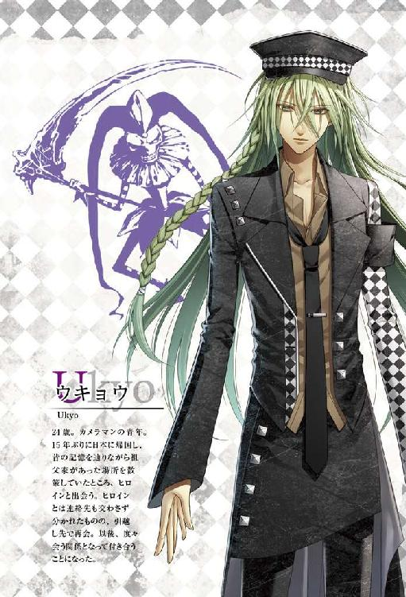
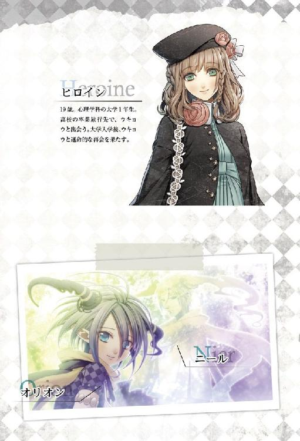
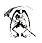

| 小説 AMNESIA UKYO ver. AMNESIAシリーズ | |
| 狐塚冬里 | |
| (2014) | |


もう何度、繰り返したかわからない。
音も、色も、何もない時間の狭間では、自分が何になっているのかもわからない。ただ、この空間に戻ってきたということは、また俺は失敗した、ということだ。
ゆっくりと記憶を辿ろうとしても、今訪れたばかりの終わりは思い出せなかった。夜、眠りについたところで俺の記憶は途切れている。また、終わりを引き受けたのは彼だったのだろう。
彼女を失い、彼女を探し、また彼女を失い......。繰り返し繰り返し、彼女がまだ生きている世界へと飛んだ。
頭の中に、神と呼ばれるニールの声が聞こえる。
その声に耳を傾けながら、彼女のことを頭の中に思い描いた。肩までの髪を揺らし、はにかむ顔。少し怒ったように頬を膨らませた顔。俺の大好きな、柔らかな笑顔。頭の中の映像をカメラに収めることができればいいのに、と思う。そうすれば全て、色褪せることなく大切にしまっておける。
『────最後の賭けに出ようと思う』
ニールが言う。
最後という言葉に反応したように、俺の頭は無意識のうちにあの日のことを思い浮かべる。
桜が綻び、花びらを散らしていたあの日、俺と彼女の運命は動き出した。

まだ三月だというのに、早咲きの桜は満開の花を咲かせていた。風が吹く度にその花びらが名残惜しそうに空へと舞い上がっていく。
その桜吹雪の中に身をおくと、日本に帰ってきたのだなという気がした。小学生の時に引っ越して以来、この土地の土を踏むのは一五年ぶりになる。
すでに朧気になっている記憶を辿りながら、道を歩いた。
駅周辺の街並みは俺が知っているものとは随分と様変わりしていて、曲がり角ひとつ曲がるにも足が止まる。こっちで合っているはずだけれど、と何度も頭の中の地図を確認しながら、その家を目指した。
きっと、もう残っていない。
辿り着けたとしても、その場所がかつて祖父の家があった場所だと認識することはできないかもしれない。道路の拡張工事で取り壊しが決まっていたから、今は道路の一部になっているのだろうか。それとも、何かの店が建っているのかもしれない。それでも、行きたいと思った。
緩やかな坂道を、ゆっくりと歩く。カメラを持っていたが、何かを撮ろうとは不思議と思わなかった。
確かこの辺りだったはずだと周囲を見渡す必要もなく、淡い萌葱色の建物が目に入る。
「......え」
足が速まり、最後には駆け出していた。
「なんで」
祖父の家は、俺の記憶と全く同じ姿でそこに存在していた。いや、記憶よりも少しだけ古めかしい。一五年の歳月が経っているのだから、それも当たり前だろう。
頼りない足取りで、祖父の家へと近付く。
てっきり、なくなってしまっていると思っていた。それだけに、もう会うことの叶わない祖父と再会できたような、そんな心地がした。
ふわりと風が吹き、頬を優しく撫でていく。頬がやけに冷たくて手を伸ばすと、濡れていた。無意識のうちに泣いていたらしい。その涙を指で拭いながら、懐かしい祖父の顔を思い出していた。
拭った先から涙が目尻に浮かぶ。俺が泣くと、祖父はいつも優しく頭を撫でてくれたなと、また涙が頬を伝う。
ふと、砂を踏むような音が耳を掠め、顔を向けた。
「あ」
家人も使わないような細い小道から、ベレー帽をかぶった女の子が顔を出す。それが、彼女だった。
──この出会いが、全ての始まり。
大きな、とても人間の目に捉えることなどできないほど大きな歯車が、ゆっくりと回り、俺と彼女の運命を変えていく。この運命の出会いを、俺は神に感謝した。神という存在を信じていたわけではない。けれど、彼女と出会えたことを誰かに感謝せずにはいられなかった。その運命に、どんな未来が待っているのかなど知るはずもなく。
彼女は俺と目が合うと小さい呟きを漏らし、少し困ったような笑顔を向けてからさっと頭を下げた。まるで視線を逸らそうとしているかのような動きに、はっと目元を濡らしていた涙を拭う。
「こんにちは」
何て声をかければ良いのかわからなくて、慌てて声をかけた。そうしなければ、彼女はその場を立ち去ってしまうような気がした。
「......こんにちは」
彼女はほっとしたような笑みを浮かべ、挨拶を返してくれた。その目が、祖父の家へと向けられる。
「あの、ここは......」
彼女の手には、観光案内の小さなパンフレットが握られていた。どうやら、道に迷ってここに行き着いたようだ。
「どこに行きたかったの？」
パンフレットを指差すと、彼女は地図のページを拡げてみせる。
「ああ、それならここで合ってるよ。でも......旅行だよね？」
何故、旅行客が祖父の家をわざわざ見に来るのかわからなかった。
「はい。高校の卒業旅行です。この家は家の造りが特別で重要文化財に指定されてるってパンフレットに書いてあって、それで」
もう一度、彼女が眩しいように目を細めて祖父の家を見上げる。その眼差しが優しくて、何故か嬉しくなった。
「へぇ、そうか。重要文化財に指定されたから......」
だから、取り壊されなかったのか。
「すごく、素敵な家ですね」
お世辞ではなく、心から思っているように彼女が言う。心地よい風が吹き、カラカラと風見鶏が回る音がした。
風や日差し、その場の空気全てがあたたかく、俺の口も滑らかになる。
「ここはね、俺をかわいがってくれた祖父の家だったんだ」
そうだったんですか、と彼女が目を丸くして俺を見た。その瞳に頷き返してから、祖父の家の方へと歩き出す。
「その祖父も俺が小学生の時に亡くなって、この家だけが残ってた。俺はこの家がとても好きだったよ。思い出がたくさん残ってたからさ」
本当に、たくさんの思い出があった。思い出そうとしなくても、家の前に立つだけで溢れてくるほどに。
「......だけどこの家は、道路の拡張工事のために取り壊されることに決まったんだ。俺は精一杯反対したけど、小学生だからどうにもできなくて」
苦笑を漏らして彼女を振り返ると、優しい瞳とぶつかった。どきりと鼓動が跳ね、誤魔化すように視線を逸らしたことをよく覚えている。
「ちょうど海外転勤が決まった両親に連れられて、この家がどうなったか見届けないまま日本を離れた。......それから一五年。俺はこの家がとっくに取り壊されたと思ってたんだ。......でも」
そっと萌葱色の壁に触れる。修繕の手が入っているのか、塗装が剥がれ落ちるようなことはなかった。
もうここは祖父の家ではないのだろうと思うけれど、姿を残してくれているだけで嬉しい。
「......こうして、ちゃんと残ってた。......なんだか、祖父にもう一度再会できたような気持ちだよ」
こんな感傷的なことを言ったら笑われるかな、と思った。しかし、彼女は笑い飛ばしたりしなかった。
「今......すごく嬉しい」
相槌を打つように、彼女が柔らかく微笑む。
ごめんね、こんな話急にしてと言っても、小さく首を振ってくれた。
祖父の家は中には入れないようで、どちらともなく家から離れ道を歩き出す。
聞くと、彼女はやはり道に迷っていた。友達と待ち合わせしていると言うから、案内を買って出た。本当は、すぐに彼女と別れてしまうのがもったいなくて、口実ができたことを喜んでいた。
「......それでさ」
ここのパン屋さんが美味しいとか、おすすめのフォトスポットなどを口にしながら、それとなく切り出す。実はずっと気になっていた。
「君は本当は、最初から俺が泣いてたって気づいてて......気づかないフリをしててくれたのかな？」
窺うように彼女の顔を覗き込むと、それは、と言い辛そうに口ごもる。
「それは......泣いているところを見られるのは誰だって嫌だと思いますから」
「......気を遣わせちゃったね、ありがとう」
彼女はそんなことありませんと言ってくれたけれど、苦笑が漏れた。初対面から泣いている男に、彼女は一体どんな印象を持っただろう。
「......まいったな。帰国早々、泣き顔を女の子に見られるハメになるなんて、思ってなかったよ」
それも、一瞬で心を奪われた子に。
彼女の友達が待つという場所まで歩きながら、お互いの自己紹介をした。
もっと彼女のことを知りたいと思っていたのに、臆病な俺は大して中身のあることも聞けず、待ち合わせ場所はどんどん近付いて来る。
少し会話が途絶え、沈黙が下りた時だった。強い風が吹き、満開の桜がその花びらを散らす。
何か考える間もなく、俺はカメラのシャッターを切っていた。撮ってしまってから、驚いたような表情を見せた彼女に謝る。
「ごめん。一枚撮らせてもらっちゃった。その桜と君があんまり綺麗だったから」
風になびく髪を押さえた彼女を桜の花びらが取り囲んだシーンは、とても幻想的に見えた。実は彼女は桜の精なのだと言われても、信じてしまったかもしれないほどに。
写真家の卵だとは言ってあったけれど、普段は風景写真ばかりを撮っているのだとも話してしまっていた。
変に思われなかっただろうかと、彼女の顔色を窺う。
「写真ができたら、見せてくださいね」
彼女は嫌な顔をするどころか、満面の笑みでそう言ってくれた。
人を撮りたいと思ったのは、随分と久しぶりのことだった。
彼女を無事に友達の元まで送り届けた後、当たり前のように俺は彼女と別れた。結局、連絡先を交換することもできずに。
どうしてあの場で勇気を出しておかなかったのかと、何度も後悔した。
彼女に会いたいと思っても、俺は彼女の名前と、この春から大学生になるということくらいしか知らなかった。カフェオレが好きなことを知っていても、何の役にも立たない。
あの日撮った写真だけが、俺の手元に残った。それを大切に保管しながら日々を過ごすうちに、転機が訪れることになる。
今思えば、あの再会すら、運命の一部だったのだと思う。
梅雨がまだ明けない七月の頭に、俺は仕事の関係で住む土地を変えることになった。
海外を飛び回っていたとは言え、日本で馴染みのある土地を離れることには少なからず抵抗があった。それでも引っ越しを決意したのは、何かの予感があったからなのかもしれない。引っ越した先に何かがあるのだと。
引っ越しの日は生憎の雨で、しかもこれから夏を迎えようという季節のわりには肌寒かった。トラックを頼んだりする一般的な引っ越しだったら、相当面倒だったろうと思う。
幸い、俺は元々荷物が少ない方で、引っ越しといってもほぼ身ひとつで寝床を変えるに近かった。家具などは必要になったら買いそろえればいい。
引っ越したその日のうちに、仕事の取引先には顔を出して挨拶を済ませた。一応、隣近所にも挨拶をして、菓子折も渡した。他に何も作業がなかったとしても、知らない土地での挨拶回りはそれなりに疲れる。
すぐに仕事に取りかかれる準備を整えてはいたものの、取引先の人が、引っ越してすぐは大変だろうと気を利かせてくれたおかげで、納期までには数日の余裕ができた。その好意に甘えることにして数日はゆっくり過ごすことにした。
だからその日も、カメラを片手にふらりと外に出ていた。特に、何か目的があって歩いていたわけじゃない。
新しい土地で生活する上でも、家の近くにどんな店や施設があるかは把握しておいた方がいい。できれば、良いフォトスポットも見つけておきたい。その程度の気持ちで歩いていた。
梅雨の中休みに入ったのか、雨は降っていなかった。おかげで気軽にカメラを出して歩くことができる。
時折立ち止まって目に付いたものを撮りながら歩いた。特に地図を見ながら歩いていたわけじゃないから、気がつくと知らない道に出ていた。視界の先に大学らしき建物が目に入る。
こんなところに大学があったのか、と興味本位に近付いた。茗荷大学と書かれた校門から中を軽く覗き込む。
その時、「あ」という声が後ろから聞こえた。
振り返るとそこには、ベレー帽のよく似合う女の子が立っている。もう一度会いたいと思っていた女の子によく似ていた。というより、本人に見える。
まさかそんな偶然があるはずがない。驚き過ぎて何も言えずにいる俺に向かって、「お久しぶりです」と、彼女が頭を下げる。
「......ほんとに？ あの時の？ 本物？」
「はい」
「......嘘だろ」
笑いながら頷く彼女は、確かに三月に会った彼女だった。運命の再会に、思わず声が上擦る。
「まさかこんな風に再会できるなんて思ってなかったよ。実はあの後、すごく後悔したんだ。せめてメアドくらい聞いておけば良かったなって」
言ってしまってから、正直に言い過ぎただろうかと焦った。けれど、彼女は気にした様子もなく頷く。
「こっちに来てよかったな。うん、ほんとによかった」
半ばひとり言のように呟く俺に、彼女はくすくすと声を立てて笑っていた。
俺が彼女に好意を持っていることは、この時点でもう隠せていなかったと思う。その自覚があるくらいには冷静だったけれど、俺は酷く浮かれていた。
「君ともっと話をしてみたかったから、また会えて嬉しいよ」
素直に言葉にすることに抵抗はない。頬が少し熱くなる感じはあったけれど、恥ずかしさはなかった。
これは海外での生活が長かったせいかもしれない。海外ではやはり、日本人はシャイだと言われることはあったけれど、こっちでは逆に、積極的な日本人の部類に入るのだと思う。
その証拠ではないけれど、彼女は頬を赤らめていた。それがとても可愛くて、ドキドキした。
ここが君の大学なの、とその鼓動の速さを気付かれないように話題を変える。これといって珍しい造りの建物でもなく、大学自体に興味があったわけじゃないけれど、次の話題がないと、彼女とまたすぐに別れなくてはいけないからと思い、慌てて言葉を紡いだ。
彼女はこの大学の心理学科に通っていると言った。風景ばかりカメラに収めている俺と違い、人の心に興味を持っている彼女にますます好感が増す。人は、自分の持っていないものを持つ人にどうしたって惹かれる。
俺が熱心に大学内を覗き込んでいたからか、彼女の方から中を案内しましょうかと言ってくれた。
「え、いいの？ 俺、部外者だけど」
「見学だったら元々許されていると思いますし、それに言わなければきっとわかりませんから」
柔らかく微笑む彼女の好意に甘えて、そのまま大学内へと並んで足を踏み入れる。
彼女は丁寧に大学内を案内してくれた。それだけに大学の中には全く興味がなかったことに胸が痛んだけれど、彼女と少しでも長くいたい気持ちの方が強くてどうしようもなかった。
ぐるりと構内を案内してもらった後、さすがに悪いので俺の方からそろそろ帰るよと告げた。彼女だって、きっと大学に用事があって来たに違いないのだから、あまり拘束してしまっては悪い。
校門まで見送ってもらい、立ち去り際に勇気を出して連絡先を聞いた。
「あの、さ......メールアドレス、聞いてもいいかな？」
「あ、そうですよね」
俺が緊張していたせいか、二人とも妙にぎくしゃくしてしまって端から見たら可笑しかったと思う。でもその時は周囲のことなんて目に入っていなかった。
携帯電話に彼女の名前が登録されている。それだけで胸の中まであたたかくなるような気がした。
「......今日、ここで君に会えて嬉しかった」
別れ際にもう一度言うと、彼女は頬をピンク色にしてはにかみながら頷いた。
連絡先を交換したからといって、俺からすぐに連絡することはなかった。
もちろん、また彼女に会いたい気持ちはあったけれど、何故か彼女にはまた会える気がしていた。俺が勝手に運命を感じていたからなのか、全ては大いなる意思の働きだったのかどうかはわからない。わからないけれど、今は後者だと思っている。
運命というものは抗いがたく、人が何をしようとそう簡単には変えられない。そのことを俺は、今はもう嫌というほど知っている。
出会いと再会が必然だったとして、俺が彼女の連絡先を聞いたり、近付いたりしなければ、後々の運命は何かが変わっていたのだろうかと考えたこともある。でも、過ぎてしまった時間は巻き戻せない。時間は常に前へと進んでおり、後ろへ戻すことはできない。俺の力では。
それにきっと、彼女に会いたいという俺の気持ちは誰にも止められなかった。
全てを知ってしまった今でさえ、あの時彼女に出会わなければ良かったと思ったことは一度もないのだから。
新しい土地での仕事は順調に進んでいた。
取引先の雑誌には各号の写真掲載が決まり、滑り出しは順調だった。インタビューページを作るからと、逆に写真を撮られるはめになるとまでは思っていなかったけれど。
慣れない被写体になどなったからか、その日は妙に疲れてしまって、マンションに帰り着く前にふらふらと目に付いたお店へと足が向いた。家まで後少しとわかっていても、とにかく休憩したい。その一心でカフェの扉を押した。
「おかえりなさいませ、ご主人様」
聞き慣れないウェイトレスの挨拶に顔を上げて、視界の中に彼女がいた時には驚き過ぎて一瞬声が出なかった。
「......えっ!?」
彼女は黒を基調とした着物にフリルがたくさんついたえんじ色のエプロン姿で、頭にはひらひらしたカチューシャのようなものをつけていた。それがこの店の制服だとわかるのにたっぷり三〇秒はかかったと思う。
「うわ......その制服、似合うね。君って可愛いんだな」
口が勝手に動いてしまったことに焦り、
「あっ、いや、別に今まで可愛いと思ってなかったわけじゃなくて！ その、なんていうか今日の君が凶悪に可愛かったから、びっくりして......！」
取り繕ったつもりだったけれど、余計に墓穴を掘った。
でも、本当に可愛かった。普段の服も似合っているし可愛いけれど、ここの制服姿は理性を崩壊させるのに十分な破壊力を持つ類いの可愛さがあった。
他の店員も同じ制服を身にまとっているというのに、そちらを見ても特に何も感慨はない。だからきっと、彼女が特別に可愛いのだと思う。
彼女は恥ずかしそうに頬を染めながらも、俺を空いた席に案内してくれた。
案内された席は、奥のゆっくりと寛げそうな席で店内がよく見渡せる。それでようやく、店内には女性客が多いことに気付いて彼女が気を利かせてくれたのだとわかった。
これ以上、俺の中の彼女の株を上げてどうするんだろう、なんて勝手なことを考えているとお冷やを乗せたトレイを持って、彼女がテーブルへと歩いて来たので急いで居住まいを正した。
お冷やを静かにテーブルに置いてから、メニューを手渡される。
「お決まりの頃、お伺いいたします」
丁寧に頭を下げて立ち去ろうとする彼女を、俺は慌てて呼び止めた。
「あの、もう決まってます！」
「え？」
振り返った彼女の目が、まだ開いてもいないメニューを捉える。急いでメニューを開き、ソフトドリンクの欄をとにかく指差した。
「えっと、このコーヒーと紅茶と抹茶とオレンジジュースとレモネードください」
驚きに目を丸くしていた彼女は、少し首を傾げてから俺の注文を繰り返す。それから、「......大丈夫ですか？」と小声で付け足した。
復唱した内容で間違っていなかったか、という意味ではなく、俺の注文自体が間違っているのではないかという心配がみえた。
「うん、それで」
そんな些細な気遣いすら嬉しくて、俺は大きく頷いた。
メニューを畳んで彼女に差し出すと、彼女はまだ少し迷う素振りを見せていたけれど、丁寧に頭を下げてからテーブルを離れた。その背中を見送りながら、落ち着こうとお冷やに手を伸ばす。この、お冷やがいけなかった。
これから訪れる飲み物との格闘を前に、残していい飲み物まで飲み干すことはなかったと、店を出てから後悔することになる。
しかし、お冷やが減ると彼女が水差しを手にテーブルに来てくれる。それを考えるとお冷やを飲むのはとても重要な意味を持っていたとも言える。
湯気を立てたコーヒーと紅茶と抹茶、氷がグラスを曇らせるオレンジジュースとレモネードが並んだテーブルは、中々の迫力がある。
ほとんどのオーダーは彼女が運んでくれたけれど、さすがに全ては持ちきれず他のスタッフも運んでくれた。待ち合わせの人の分を先に頼んだのだと勘違いするようなスタッフはひとりもいなかった。それもそのはずで、彼女がきちんと俺がひとり客であることを伝えていたからだ。
奥まった席にいたおかげでバックヤードが近く、店の中が静まった時には彼女の声を聞くこともできた。自分でもこれじゃ怪しい人間だと思ったけれど、耳は勝手に彼女の声を拾う。
時折、他の客から指名されて彼女が出て行くのを目で追った。
人気があることを当然だと思いながらも、胸の中は落ち着かない。指名ができるなら、飲み物も順番に追加で頼めば良かっただろうかと少しだけ考えた。でも、それも迷惑だなとすぐに頭を振る。
ちらちらと彼女の様子を見ながら、冷たいドリンクから順に口をつけた。
胃が寒くなってしまったらホットドリンクで温め、また冷たいものに戻る。あまり長い時間居座ってしまっても迷惑だろうと、休まずに飲み続けた。まるでちょっとしたフードバトルのようだ。
飲み物が切れることは早々なかったから、居心地の悪い思いもせずに彼女を眺めることができたのは良かった。それでも、五杯目を飲みきった時には胃がはち切れそうなほどいっぱいになった。その場でジャンプしたら、ちゃぷちゃぷと音がしたに違いない。
彼女がレジ近くに立ったタイミングでお会計に立った。
伝票を差し出したのが俺だと気付くと、彼女はふわりと微笑む。接客業なのだから、他の客にも同じように笑顔を向けていたのかもしれないけど、それでも嬉しかった。
会計を済ませて店を出ようとした時、不意に店長らしき長身の男性が近付いてきたのには驚いた。
彼女ばかり見ていたから、出入り禁止を言い渡されるのではないかと、少しだけ身構える。
けれど、彼が口にしたのは、「よくぞ飲みきった」という賞賛の言葉だった。
店長は俺が飲み干したカップやグラスの並ぶ席を一度見てから、満足そうに頷いた。彼女と一瞬目が合う。それから、どちらともなく声を出して笑った。
いい店だな、と思った。彼女がいるから、という理由だけじゃなくて、俺はこの店『冥土の羊』が気に入った。
それからすぐに、俺は冥土の羊の常連客になった。
ほぼ毎日通って、日によっては朝も昼も行った。
引っ越してきたばかりで他に店を知らないし、ここは居心地がいいし、コーヒーもご飯も美味しいし、と言い訳を並べた。そのどれも嘘じゃなかったけれど、冥土の羊に通う一番の理由は、彼女に会いたかったから。
客と店員という遠い関係だったけれど、一言二言、会話ができるだけでも幸せだった。
初めて彼女をデートに誘うまでには、常連客になってからさらに数日がかかった。
そして、初めてのデート、二回目、三回目と回数を重ねる度に、俺は彼女のことをどんどん好きになっていった。
その後、告白をしようと決めたのは、彼女とのデートを何回も重ねた後のことだ。
今日こそは告白しようと決心していたのに中々言い出せなくて、時間だけが虚しく過ぎて行った。ただでさえ焦っていたのに、その日は彼女が夕方から用事があると言うので、日の高いうちに彼女をマンションまで送ることになってしまった。
家に着くまでに言おう。心の中でいくら決意しても、隣を歩く彼女を盗み見するだけで心臓が痛いくらい高鳴って、うまく言葉が出てこない。早くしないと彼女の住むマンションが見えてきてしまう。
踏切に差しかかった時、俺たちを通せんぼするように一歩手前でカンカンカンと遮断機が降り始めた。見ると、電車は上下線とも通過のランプがついていた。言うなら今だ。
「俺と付き合おう」
いろいろとロマンチックな告白の言葉も考えていたのに、口を突いて出たのは極シンプルな一言だった。
緊張で手は冷たくて、一秒が一分にも一〇分にも感じられる。
目を少し見開くようにした彼女の髪を、通過する電車の風が舞い上げていき、すぐにまた反対方向へと向かう電車の姿が見え始める。
走行音が煩くて彼女の声が聞こえなかったら嫌だな。そんなことを俺は頭の片隅で考えていた。すぐその場で返事をもらえるとは限らないのに、でも、彼女が何か言ってくれるのを期待していた。
電車が走り去り、遮断機がゆっくりと上がっていく。
もう踏切を渡ることができるのに、俺も彼女も歩き出さなかった。このまま佇んでいたら、また電車が来て遮断機が降りてしまうのに。
何も話さなくても気まずい雰囲気ではなかったけれど、ここは俺から歩き出した方がいいのかもしれないと考えていた時、「はい」と彼女が言った。
「......え？」
最初、何に対する返事かわからなくて、首を傾げた。でもすぐに、それが俺の告白に対する返事だとわかって、急激に気分が高揚していく。
「......本当に？ 俺でいいの？ いや疑ってるわけじゃなくて！ こんなに早く返事をもらえるとは、思ってなかったから......」
彼女は微笑んでいた。
それは見ている方の心がふわりとあたたかくなるような笑顔で、本当に自分を受け入れてもらえたのだということが胸の内に広がっていく。
頬が、熱かった。
「あー......駄目だな。全然言葉が出てこないよ。頭の中真っ白だ」
今日から、今この瞬間から、彼女が自分の恋人になる。その事実に舞い上がった。
「こういう時ってなんて言ったらいいのかな。今の俺の気持ち、どうすれば君に伝わるんだろう」
自然と顔が笑顔になるのがわかった。
今、俺の心の中を見せることができたら、泣き出してしまいそうなくらい喜んでいることがわかってもらえるのに、と歯がゆい思いがする。
「俺は今、すごく幸せだよ」
──幸せだった。
これから先も、こんなに好きになる人は彼女以外いないと思っていた。実際、俺は彼女だけを愛し続けている。自分自身よりもずっと。
俺と彼女が恋人同士だった時間は、短かった。時間だけでみれば、本当に短い恋だった。
今の俺の感覚では、随分と長く彼女を愛し続けている感じがするけれど、普通の時間で考えればとても短い。
そうして付き合い始めてすぐ、俺は彼女の家に招かれることになった。
大学であの事故が起こる、前の日のことだ。
その日のデートプランは特に決まっておらず、駅で待ち合わせをしたはいいものの二人でどうしようかとふらふら街を歩いていた。
前日、俺は夜遅くまで仕事をしていて、少しだけ寝不足で、彼女はきっとそれに気付いていたのだと思う。今日はどこかでゆっくりしましょう、と提案してくれた。せっかくのデートなのにと思わないでもなかったけれど、俺は彼女と一緒に過ごせるだけで幸せだったし、本当は少しだけ疲れも溜まっていたから彼女の申し出は有り難かった。
冥土の羊でも行こうか、と言った俺に、彼女は少し迷う素振りを見せてから、それなら家に来ませんかと言ってくれた。
「家って、まさか君の家？」
「はい。少し、散らかっているかもしれませんけど」
「そんな急に!? いや、嫌とかじゃなくてもちろん嬉しいんだけど、っていうか、かなりすごく嬉しいけど、でも......いいの？」
もしかしてこの展開は、親御さんに紹介してもらえるとかそういった流れなのかと、少なからず動揺したのを覚えている。
こんなことならもっとちゃんとした服を着てくればよかったな、とぼやく俺を、彼女は笑って見ていた。
少し緊張しながら、彼女の手をそっと取って歩く。
手土産を買いにデパートに行こうと言う俺を、彼女は止めた。その代わり、近くのコンビニで彼女と俺が好きなお菓子を買って行く。
白い壁のマンションが見えて来た頃、俺より小さな彼女の手をそっと離した。
マンションの前までなら、すでに何度も来たことがあった。彼女を送り届けるためだけに。だから、家の中どころかマンションのエントランスにさえも、まだ入ったことはなかった。
緊張で戸惑っている俺とは反対に、彼女は躊躇なくドアの前まで歩いていく。
「やっぱり何かもう少しちゃんとした手土産があった方が良かったんじゃ......」
大丈夫ですと応えながら、彼女はポシェットからおもむろに鍵を取り出してドアを開けた。その光景を、数回瞬きを繰り返しながら見守る。鍵を使うということは、中に人がいないということだ。
どうぞ、と促されて玄関に入り、ぎょっとする。
「君、ひとり暮らしだったんだ!?」
短い廊下の先に見えた部屋は、ワンルームだった。
「それでよく俺を家に誘ったね。危ないって思わなかった？」
出されたスリッパに足を入れながら、強いて室内を見渡さないようにしながら部屋に入る。
室内は散らかっているどころかとても綺麗に片付いていた。淡い色のカーテンや絨毯、優しい色合いの家具はとても彼女らしい。
俺の言ったことが理解できないように、彼女は首を傾げていた。そういう純粋なところはとても可愛いけれど、少し心配になる。
「......俺も別にいきなり襲ったりするような奴じゃないけど、場合によってはどうなるかわからないよ。俺だけじゃなくて、男はそれが普通。信用しすぎるのは良くないし隙を見せるのも良くない」
年上らしく説教をすると、彼女は困ったような顔をしていた。その、何の警戒心もないような顔を見て、ふと思う。
「......君、もしかして今まで他の奴も気軽に家に誘ってた？」
少しの間を置いてから、
「そんなことありません」
と、何故か彼女は恥ずかしそうに言った。
「......そう。ならいいけど」
ほっと胸を撫で下ろす。
彼女に無防備なところがあるのは知っていたけど、これで「はい」と言われていたら、お説教一時間じゃ足りないくらいだ。
「でも本当に気をつけて。ひとり暮らしの女の子に家に誘われたら大抵の男は勘違いするよ」
「......ウキョウさんもですか？」
彼女は窺うような目で俺を見上げた。
「え、俺？ 君がひとり暮らしだとは知らなかったから、それはないよ」
自分のことはすっかり棚上げしていたから、驚いた。
実際、勝手に彼女のご両親に会う気ですらいたのだ。下心なんて抱けるはずもない。彼女が、そういう意味で奥手な子だろうということもわかっていた。
「それに......いくらなんでもまだそこまで許してもらえるとは思ってないしね」
とはいえ、正直に言えばひとり暮らしだとわかった時に、ほんの少しだけ考えたことは確かだ。
大好きな恋人の家に誘われて、その家がひとり暮らしだったのだから、少しも期待するなという方が無理がある。
もちろん、彼女が嫌がるようなことをする気はなかったけれど。
「......そうでしょ？」
彼女の顔を覗き込むと、案の定、彼女は酷く困った顔をして視線を彷徨わせた。頬がほんのり赤みを帯びているのが可愛かった。
「はは、困ってるね。そういうとこ可愛いな。......でもね」
腕を軽く引くだけで、彼女との距離は簡単に縮まる。
驚きに目を瞠っている彼女の頭の後に手を添え、その唇にキスをすると、想像していたよりもずっと柔らかかった。
流れるように自然にキスをしてしまったというのに、俺はいつもみたいに慌てるどころか彼女の表情を見つめる余裕すらあった。
自分がこんな大胆な行動をとれるなんて知らなかったし、落ち着いていられる自分にも驚く。
「......ほら、そういうのが隙だよ」
唇を離した後も、彼女は固まってしまったかのように硬直していた。
「もっと俺のこと、ちゃんと男として意識しないと駄目だよ。今だって俺は、このあとどこまでなら許してくれるかなってそんなこと考えてるんだから」
彼女の瞳が揺れ、睫毛が小さく震えている。少しだけ罪悪感があったけれど、キスしたことに後悔はない。
「......ごめんね、怖い？」
頷くこともできない彼女の頭から、そっと手を離した。
指先に触れた髪は柔らかくて、滑るように逃げていく。名残惜しい気持ちはあったけれど、それ以上彼女を怖がらせたくもなかった。
「だけどこれが俺の本音だよ。だからね、気をつけて」
捕まえていた腕も離して少しだけ距離を取ると、彼女は明らかに身体から力を抜いた。
そこでまた隙を見せたら駄目だよ、と思うけど、言葉にはしない。
「......ここでやめとくよ。これ以上先に進んでも困るだろうし」
告白して、恋人になって、キスをして、その先。俺にとっては当たり前の道筋だけれど、彼女は耳まで真っ赤に染めた。
「......照れてる？ 顔、赤い」
顔を覗き込むと、彼女は赤い顔のまま俺を軽く睨み付ける。その可愛さに、今離してあげたばかりの手が、また彼女を捕まえそうになるから困った。
「あぁ、もう......。そんなに可愛い顔するのは反則だ」
どうにか自分の手を握り込んで耐えていると、彼女がさっと身体を翻した。
「......ん？」
「お茶、入れますね」
「ああ、お茶ね。ありがとう」
慌てた背中を見て、少し笑う。
「......逃げたな」
小さな呟きは彼女の耳に届いたらしく、慌て気味に「違います！」と声が飛んだ。
彼女は大いに照れた顔のまま、何か好きな飲み物があるかと聞いてくる。
冥土の羊ではよくコーヒーを頼むけれど、一番初めに色んな飲み物を一気に頼んだものだから、好みという点では分かりづらかったかもしれない。
「はは、冗談冗談。えーと、好きな飲み物......なんでもいいけど、できればコーヒーかな」
コーヒーですね、と彼女が軽やかな足取りでキッチンへ向かおうとした時、
「あっ！」
彼女の足元に携帯が落ちていることに気がついた。
「危ない......！」
咄嗟に大きく足を踏み出して彼女の腕を掴んだ瞬間、足が何かに当たる感触があった。
ガシャン、と大きな音が聞こえて、ぶつかったものがすぐ横にあった姿見だとわかる。
「大丈夫!?」
俺の腕の中で、彼女は驚いた顔のまま頷いた。
どこも怪我をしていないことに安心したけれど、視線を姿見にやって顔をしかめる。
「それから......ごめん。足元に君の携帯が落ちてて、君がそれを踏みそうだったから手を出したんだけど、君を引き止めた勢いでこの鏡にぶつかっちゃったよ。ヒビを入れちゃったな......」
俺がぶつかったせいで、シンプルな姿見の下側には大きなヒビが入ってしまっていた。全身を映すのにさほど問題はない位置だったけれど、そのままにしておくのは危ない。
彼女を離し、鏡の破片が飛んでしまっていないかを確認した。
「ほんとにごめん。あとで新しい鏡を買いに行こう」
「いえ、気にしないでください」
「いいよ、遠慮しないで。っていうか、プレゼントさせてよ」
「でも......」
「お詫びなのはもちろんだけど、君の部屋に俺が贈ったものがあるのは嬉しいからさ」
最初は遠慮していたけれど、俺がそうしたいのだと主張すると、彼女は表情を柔らかく崩し頷いてくれた。
壁にかけられていたカレンダーに目をやり、
「明日、八月一日はあいてる？」
早速、デートの約束を取り付けようとした。俺の仕事は比較的自由がきくし、大学生の彼女も今は夏休みのはずだ。
鏡を割ってしまったのは申し訳なかったけれど、またひとつ、彼女と会う約束ができることは嬉しかった。
「明日は大学に本を借りに行かないといけなくて......」
「ああ、そうなの？ 本を借りてくるだけ？」
申し訳なさそうに頷く彼女に、笑いかける。
「わかった。じゃあその後で買い物に行こう」
いいんですか、と顔を綻ばせる彼女が愛おしかった。
会いたいと、思っているのが自分だけじゃないのだと、その顔を見ただけでわかる。
「明日の午後、君の大学の前で待ってるよ」
約束の時間より、少しだけ早く着くようにと家を出た。
駅前を通り、それとなく女の子が好きそうな雑貨屋をチェックする。
元々あった姿見がシンプルなものだったから、そういうタイプのものがいいのだろうか。家具というのは全体のバランスも大事だから、やはり一緒に見た方がいいと結論付け、茗荷大学へと足を向けた。
携帯で時間を確認すると、予定どおり早く着きそうだった。
本を借りると言っていたけれど、図書館にいるのだろうか。大学の図書館自体は一般にも開放されていて、俺でも気兼ねなく中に入ることができる。
中に入って彼女を探したら迷惑かな、と考えているうちに大学へと続く道に出た。
様子が、おかしかった。
最初に、鳴り響く消防車のサイレンに顔を上げた。消防車は俺の横をものすごいスピードで通り過ぎ、あっという間に大学の校門へと消えていく。
続いて、後ろから救急車の音が鳴り響いた。
校門の前には人だかりができており、皆遠巻きに中を窺っている。
──何か起きている？
どうしようもない胸騒ぎに襲われ、俺は駆け出した。
群がる人を掻き分けるようにして前に出ると、「危ないですよ！ 下がって！」とすぐに消防隊員に押し返された。
視界の先には、煙を上げる大学の建物がある。
「何が......何があったんですか!?」
野次馬を押さえている消防隊員を捕まえ詰め寄った。
「大学の実験棟で爆発事故が起こりました」
「爆発!? 中に......中に人は!?」
「今、それを確認しています」
あくまで冷静な彼の返答が、事態は想像以上に深刻なのだと物語っている。
人混みの中に彼女が紛れていないかと捜しても、彼女らしき姿は見当たらない。
急いで携帯を出し、彼女の番号を呼び出した。ワンコール、ツーコール、無機質な呼び出し音が繰り返される。早く、早く出てくれ。
『お客様がおかけになった電話番号は、現在電波の届かない場所にあるか......』
留守番電話サービスに繋がりかけた電話を乱暴に切り、煙の上がる建物を振り返る。その手前にある大きな時計が目に入った。すでに、彼女との待ち合わせ時間を五分過ぎていた。
何か考えるよりも先に走り出す。人混みが途切れている箇所を見つけ、身体を滑り込ませた。
「あ、ちょっと！ 危ないから戻って!!」
消防隊員が叫ぶのが聞こえたが、立ち止まらなかった。それどころか一層駆ける速度を上げて構内を目指す。
まさか、事故の起こった場所になんているはずがない。消防隊員だって、爆発が起こったのは実験棟だと言っていた。彼女の用があったのは、図書館のはずだ。
図書館は大学の校舎とは離れた場所に建っている。けれど、俺は真っ直ぐに煙の上がっている実験棟を目指していた。彼女が、何の連絡もなしに遅刻することなんて今までなかったから。
実験棟の中に入ると煙が大分まわっており、目に染みた。
手で口を覆い、なるべく煙を吸わないように頭を低くした姿勢で身体を前に進める。
煙の中目を細めると、廊下の先が不自然に明るい。燃えていた。
火に囲まれたら逃げられない。本能的な恐怖に竦みそうになる足を叱咤し、彼女の名前を叫ぶ。返って来る声はなかった。誰も、消防隊員さえもいないのだろうか。
燃え上がる炎がはっきりと見えてきた。一際大きく炎が出ている教室が、事故現場に違いない。
早くしないと、俺も火に巻かれる可能性がある。熱で高温になった金具部分に触れないように、袖口を伸ばしてドアを横にスライドさせた。
思った以上に力が入っていたらしく、大きな音が響く。
溜まっていた酸素が流れ込んだせいで、教室内の火の手が大きくなった。教室の一角が、激しく燃えている。すでに火は窓ガラスを突き破って燃え盛っており、いつ教室全体に広がるかわからないほど勢いがあった。
ざっと室内を確認しても、人の姿はない。
ほっとしたその時、三人掛けの長い机の隙間に人の足が見えた。
見覚えのある靴だった。可愛いね、よく似合ってるよ、と俺が褒めた、白いショートブーツ。
彼女の名前を叫んだ。
転がるようにして駆け寄って、そこにぐったりと横たわった彼女を見つけた時、心臓が何かに串刺しにされたかのように傷んだ。
彼女の意識はなく、俺がいくら名前を呼んで頬に触れても、目を開けてもくれない。
火の手はますます強まり、煙は腰を折らなければ避けきれない高さまで降りて来ていた。
無我夢中で、彼女を腕に抱きかかえた。彼女の身体はとても軽くて、まるで中身が入っていないみたいで泣きそうになる。
「大丈夫、大丈夫だから」
繰り返し口から零れ落ちる言葉は、彼女に言っているのか、自分に言っているのか次第にわからなくなっていった。
彼女を抱えて校舎を飛び出すと、消防隊員たちに囲まれた。俺の腕から意識のない彼女が奪い去られ、担架へと乗せられる。
「あなた、怪我は!?」
救急隊員らしき人から声をかけられたが、それを無視して彼女が乗せられた救急車へと乗り込んだ。後ろのドアが閉められ、けたたましい音を鳴らしながら白い車体が動き出す。
忙しなく救急隊員が彼女に処置を行う間、俺はずっと彼女の手を握り締めていた。
搬送先の病院に着くと、彼女はすぐに集中治療室へと運び込まれた。
俺は中に入れてもらえず、赤いランプの灯った部屋の前で立ち尽くす。
──そして八月二五日。彼女は一度も意識を取り戻すことなく、帰らぬ人となった。
彼女は、ただ眠っているように見えた。
今にも目を開けて微笑み、俺の名前を呼んでくれそうな気がした。
けれど、彼女の胸は呼吸に上下することもない。
彼女の頬に触れようと伸ばした指先が、細かく震えていた。もう、彼女は目を覚まさない。俺の名前を呼ぶことも、笑いかけてくれることも永遠にない。
膝から力が抜けて、その場に崩れ落ちた。
「どうして!? 何で、彼女が死ななきゃならないんだ!?」
何度も、何度も何度も拳を床に叩きつける。その手に血が滲んでも、まるで痛みを感じなかった。
痛みを感じないということは、これは夢なんじゃないかと期待する。だが、頭を上げるとそこには命のない彼女が眠っていた。
どうして。頬を止めどなく涙が流れて落ちていく。泣き叫ぶうちに、喉は嗄れた。どうして。彼女を失ったことを認めたくなくて、身体を小さく折り曲げて泣いた。
涙で目が腫れ、視界がぼやけても頭の中だけは妙に冴えていて、彼女の死を忘れさせてはくれない。折り曲げていた身体を起こし、そろそろと彼女の眠るベッドに視線をやると、やはりそこには二度と目を覚まさない彼女の空っぽの身体があった。
どうして、という言葉だけが、頭の中を埋め尽くす。
彼女がこんな目に遭わなければならないのは誰のせいなのかと、誰に向けたら良いのかわからない怒りに胸が焼かれた。
俺が、何かをすべきだったのか？
何かをしていれば、彼女が死なずに済んだんじゃないかという後悔が広がり、俺の胸を締め付けた。これ以上涙など出ないと思っていたのに、再び、頬が濡れる。
這うようにして彼女の元まで行き、ベッドの端に手をかけた。自分の身体が嘘みたいに重く、ベッドの上に頭を出すだけで息が切れる。
顔はぐしゃぐしゃに汚れていて、きっと見られたものじゃない。こんなところを彼女に見られたら、「どうしたんですか？」と自分の方が泣きそうな顔をして心配されてしまう。
俺は彼女のその心配を受けて、ちょっと悪いなと思いながらも、俺に向けられるあたたかい気持ちにほっとする。
「何でもないんだ。ちょっと悪い夢を見ただけだよ」の一言で、終わるはずなのに、彼女は俺を見てはくれない。
震える手で、彼女の頬に触れた。体温が感じられなかった。
言葉にならない雄叫びが喉の奥から漏れ出、俺は手をきつく握り締めて彼女の眠るベッドに顔を埋める。
どうして、彼女が死ななければならなかったのだろう。
彼女が死ぬくらいだったら、俺が死ねばよかったのに。
今からでもいい、誰か俺と彼女の命を交換してくれ。
彼女が死んでいいはずがない。
「ねぇ、少し寝過ぎだよ......？」
彼女に声をかけてみたが、一層苦しくなるだけだった。
「早く起きないと......駄目だよ」
視界が歪み、嗚咽が漏れた。
誰か。誰でもいい。彼女の目をもう一度開けてくれるものならば、何でもかまわない。神も悪魔も幽霊も、何も信じてこなかった俺だけど、今から何でも信じるから。毎朝お祈りをしろと言われればするし、魂を寄越せと言われればくれてやる、呪い殺されてもいい。
俺にできることなら、何でもする。だから、誰か。誰か......。
──彼女を助けてくれ!!
それからどれくらいの時間が経ったのかわからない。けれど不意に、室内の空気が変わった。
全ての音が消え、時間すら止まってしまったような感覚に泣き濡らした顔を上げる。
目の前に、光が満ちていた。
涙で歪んでよく見えず、手の甲で目を拭う。
『......君の願い、叶えてあげよう』
光の中に、うっすらと何かの形が見えた。青年のようにも見えたが、人というには少し違うように思える。
『僕はニール。より強い願いの持ち主を探し、君を見つけた』
不思議な声だった。
光の中から聞こえてくる気がするのに、頭の中に直接響いているようでもある。俺は、夢でも見ているのだろうか。
はっと辺りを見回すと、そこには病室すら存在していなかった。眠る、彼女も。
『君の願いは、彼女の生だね』
「......そう、だけど......」
何が起こっているのかはわからなかった。でも、何故かはわからないけれど、今、この時を逃してはいけないと思った。
もしかしたら、彼は神と呼ばれる何かなのではないか。
彼女の死が間違いで、それを正しに来た神なのではないか。そんな考えが頭の中で目まぐるしく行き交う。
『......でもね、死を覆すことはできないんだよ』
「そんなの......わかってる」
『だから、君の望みを叶えるために、彼女が生きている別の世界へ、君を連れて行こう』
「......彼女が生きている世界？」
『この世界と平行して存在する別世界。この世界の彼女は死んでしまったから、まだ彼女が生きている、別の世界に移動するんだ。それで君の望みは叶うはず......』
「......俺の、望み？ 彼女が生き返る？」
『そうじゃない。この世界の彼女は死んでしまった。その事実は変えられない。だから、彼女が生きている世界へ君を連れていくんだよ』
彼女の死は覆せないといいながらも、彼は彼女が生きている世界があるという。
正直、頭の中がこの異常な状態についていけていなかった。それでも、必死に考える。
「よく......わからないけど、でも、そんなことが......」
『できるよ......ただ、移動するには僕が君に同化する必要がある。それでも構わないというなら......』
「いいよ、構わない！ 生きてる彼女に会えるんなら！」
ニールが言い終えるよりも早く、俺は応えていた。
彼女が生きている世界に行ける。
その世界で彼女とやり直すことができる。
運命を、変えることができる。
「君の言うとおりにするよ、ニール。彼女が生きていてくれるのなら君が神でも悪魔でも構わない。俺の命でも、魂でもなんでもくれてやる。だから......！」
微かに、ニールが頷いたようだった。
「彼女に会えるなら、俺は──」
身体が光に包まれ、俺は意識を失った。
気がついた時には、駅前に立っていた。
何が起こったのか理解できずに辺りを見渡すと、ぼんやりと立ち尽くす俺の横を、学生服を来た子たちがはしゃいだ様子で通り過ぎて行った。
街並みは俺が知っているものと何の変化もなくて、束の間、夢でも見ていたんじゃないかと思う。
無意識のうちに携帯を取り出し、日付を確認していた。──八月一日。
どういうことだろう。確か今日は、八月二五日のはずだ。それとも、本当に別の世界に移動したのだろうか。
もう一度、周りを見渡してみた。
「......別の世界なんて」
乾いた笑いが口から漏れる。そう簡単には信じられなかった。
何かわかりやすい変化があるわけでもなく、変わっているのは携帯電話に表示されている日付だけだ。
もしかしたら、彼女が事故に遭って......死んでしまうという悪夢を見ていただけかもしれない。神様がそこに現れて、救いの手を差し伸べてくれるなんて、いかにも夢オチの展開に多そうだ。
全て夢だった。
そうならば、俺は今から彼女を大学まで迎えにいかなければならない。今日──八月一日は、彼女と約束をしているのだから。この時間ならまだ、間に合うはずだ。
彼女を迎えに行こう。ふらりと足が動きかけて、止まった。自分で自分の頬を叩いた。すぐ近くを歩いていた人が、ぎょっと振り返る。それを無視して、もう一度、強く叩いた。
彼女の死が現実だなんて、俺が一番よくわかっている。あの恐怖、哀しみは夢なんかじゃない。
ニール、と頭の中で呼びかけてみると、確かにその存在を感じた。この、俺の中にいる神が、生きている彼女に会うチャンスをもう一度くれたんだ。間違った運命をやり直す、チャンスを。
ニールは、まだ彼女が生きている別の世界に移動する、と言っていた。それなら、まず最初にしなければならないことは、この世界の彼女を捜すことだ。
どこにいるのだろう。この世界でも前の世界と同じように大学生なのか？ それとも社会人として働いているのか？ そもそもこの街に住んでいるのか？ ニールの言う別の世界がどんなものなのか、全く想像がつかない。
わからないことだらけだ。だから考えるのをやめて、ひとまず駅から茗荷大学の方へと歩き始める。彼女がいそうな場所を探しながら歩くのがいいだろう。
冥土の羊の前を通りかかり、中を覗いたが彼女の姿は見当たらなかった。俺が知っている彼女はこの店でバイトをしていたけれど、この世界では違うのかもしれない。
店には入らず、彼女のマンションのある方へと足を向ける。とにかく、俺が知っている彼女のいそうな場所を探すしかない。
踏切を渡ると、徐々にマンションや一軒家が増えてきた。
不思議な心地がした。知っているはずの街なのに、どこか余所余所しいような、そんな居心地の悪さがある。世界を移動するなんて、普通ではありえない経験をしているせいだとこの時は思っていた。
彼女のマンションの外壁が見え始め、自然と足が速まる。
彼女に会えるだろうか？ 彼女はこの世界でもこのマンションに住んでいるのだろうか。
マンションのエントランスがはっきりと見えた時、ちょうど中から出てくる人影があった。
──彼女だ。彼女が、生きている。
彼女が歩くのに合わせ、ふわりと柔らかな髪がなびく。口元には微かに笑みが浮かんでいて、足取りも軽い。
俺の頬を涙が濡らした。それをぐいぐいと手のひらで拭う。
彼女が行ってしまう前に、急いで声をかけようとした。でも、できなかった。
「遅いよ、おまえ」
彼女が歩いて行った先には、彼女を待つ人がいた。少し癖のある黒い髪に、意思の強そうな瞳の青年だ。見たことがある。というより、俺も知っている人だ。
名前はシンといって、彼女の幼なじみだと言っていた。
冥土の羊のキッチンでバイトをしており、俺も何度か話したことがある。口調や視線はきついけれど、根は優しそうな子だという印象だった。
そのシンの元に、彼女が駆け寄っていく。ごめんね、と謝る声がした。
俺に向けられた言葉でも何でもないのに、久しぶりに聞いた彼女の声にまた、涙腺が緩む。
「どうせ二度寝でもしてたんだろ」
「違うの、寝癖が......」
「......直ってないし」
親しげな彼女たちの会話に、頬が緩んだ。
俺には幼なじみがいないからよくわからないけれど、兄弟のように仲が良いのだと彼女から聞いていた。
呑気に会話に耳を傾けているうちに、二人が歩き出す。それを見て、慌てて声をかけた。
「あの！」
声が大き過ぎたせいか、彼女が弾かれたように振り返る。数拍遅れて、シンも振り返った。
「......ちょっといいかな？」
二人の目が俺を捉えて、瞬く。
何から話そう、と声をかけてから焦った。とにかく彼女を探すことしか考えていなくて、それ以外はノープランだったことに今さら気付く。
俺が別の世界から来たことを話すのはおかしいだろうか。
おかしいだろう。普通に考えて、すぐに信じられる話しじゃないと思う。それなら、と悩んでいる間に、シンの眉間にしわが寄った。
「誰。知り合い？」
え、と目を見開く。
確かに、友人だと言ってしまうには遠い存在だったかもしれないけれど、まさか覚えられていないとは思わなかった。少なからずショックを受ける。
きっと彼女は少し慌てて、俺のことを紹介し直してくれるだろう。それを期待していた。
ところが、誰、と呼びかけられた彼女は、「ううん。シンの知り合いなのかと思った」と首を横に振る。ショックどころじゃない。
「え、何言って......」
声が喉のところに詰まって、上手く出なかった。
「はは、二人とも冗談きつい」
力なく笑う俺に、二人は合わせ鏡のように首を傾げる。
「よくわかりませんけど、人違いじゃないですか」
シンが素っ気なく言い、「行こう」と彼女の腕を引く。彼女は戸惑った様子を見せたけれど、俺に小さく頭を下げるとシンに従った。
待ってと呼びかけることはできなかった。背中を向けられた瞬間、俺の存在などすでになかったものにされたような空気に、声なんてかけられるはずがなかった。
呆然と、坂道を登っていく二人を見送る。
──彼女は俺を知らない。
そんなこと、あるのだろうか。記憶喪失？ それとも、大がかりな悪戯だとか。それにしては質が悪い。
少し落ち着こうと息を吸い込んだ時、視線の先で、二人の手が繋がるのが見えた。二人は手を繋いでいた。
彼女が何か言い、シンが横を見てから手を差し出して、彼女がそれを嬉しそうに掴む。その光景を、俺は一部始終見つめていた。
まるで、恋人同士のように見えた。
いくら姉弟同然だと言っても、手を繋いで歩いたりするだろうか。
息苦しい気がして胸に手を当てると、自分の心臓が嘘みたいに早く脈打っていた。
『この世界と平行して存在する別世界』
頭の中に、ニールが言った言葉が浮かぶ。この世界に移動する前、確かに彼はそう言っていた。
平行して存在する世界。それはつまり、同じように見えて全く違う世界。馴染みのある言葉で言い換えるならば、今、俺が地面を踏みしめているこの世界は、元々俺がいた世界のパラレルワールドということ？
映画などでよく出てくるパラレルワールドでは、世界を移動した主人公はどうなっていただろうか。熱心に観ていたわけじゃないからよく覚えていない。
けれど、見た目は同じに見える世界で、物語の主人公たちは自分を取り巻く世界がまるで別物なことに戸惑っていた気がする。
俺がいるこの世界も、そういうことなのだろうか。
あの世界から抜け出せば、もう一度彼女と笑い合えるのだと思っていた。
間違った現実を修正して、彼女とずっと幸せに生きていけると思っていた。
だが、現実はそんなに単純ではないようだ。
胸一杯に抱えていた希望の欠片がひとつ、手の中から零れ落ちる。でも、まだ大丈夫だとこの時は深く考えていなかった。
坂を見上げると、二人の姿は消えていた。
この世界では、俺と彼女は出会ってすらいないのではないか。知らないと言われたことから、そう推測できた。
三月のあの出会いがなければ、必然的に八月の今、彼女が俺を知っているはずもない。
自分の恋人に〝知らない〟と言われることは、想像以上にきつかった。
強いて呼吸を深くして、気持ちを落ち着かせる。大丈夫。きっと対処のしようがある。そう信じて、顔を上げた。
この世界がどんな場所なのか知るために、まずは情報を集めよう。彼女と出会っていないとなると、俺がこの土地に引っ越して来ているかも怪しい。それに、ひとり暮らしのマンションに行くよりも、知り合いを探し、その反応を見た方が情報を集めやすいだろう。
頭の中を整理してから、俺はまず冥土の羊に行くことにした。俺だけではなく、彼女とも関わりの深い場所から確認しようと思ったからだ。
後ろ髪を引かれる思いで彼女のマンションに背を向け、歩き出す。
「おかえりなさいませ、ご主人様」
お昼時なせいもあり、冥土の羊は混んでいた。
出迎えてくれたのはミネだ。くるくると巻かれた長い髪に、ぱっちりとしたアイメイクが冥土の羊の制服によく映えている。
ミネは彼女のバイト友達であり、確か彼女より一個年下だと言っていた。一見、彼女とはタイプが異なるように見えるが、不思議と気が合うのだと聞いた覚えがある。
「お席はこちらでよろしいでしょうか」
満席に近いこともあり、よく通される奥の席ではなく、中央に近い席に通された。軽く頷くと、綺麗な笑みを唇に乗せ、ミネは席を離れる。
ミネも、俺を知らないのだろうか。
個人的に親しいかといえば違うが、それでも店に行けば決まり文句の接客用語の他に、気安い言葉をかけられるくらいの仲ではあった。「今日はどうします？」とか「先輩なら今日はお休みですよ～」とか。その一言が、今日は何もない。
店が混んでいるから無駄口を叩いている時間がないとも考えられた。お冷やとメニューを持って来てくれた時も、忙しそうにすぐに立ち去ってしまった。
昼時に来たのは失敗だったな、と思いながら、近くのスタッフに声をかける。ちょうどとおりかかったのは、トーマだった。
「お呼びでしょうか、ご主人様」
人当たりの良い笑顔を浮かべ、トーマが俺の横に立つ。無造作に散らした髪にカチューシャをはめたスタイルが、今日もよく似合っていた。
冥土の羊は男性スタッフも制服に凝っていて、少し顔が整っている程度では衣装の方が勝ってしまう。その、黒地にえんじ色で差し色を入れたゴシック調の執事服を、トーマはいとも容易く着こなす。きっと今日の客の中には彼目当ての女の子がたくさんいることだろう。
俺はトーマとも顔見知りだった。というより、冥土の羊で話したことがないスタッフなどいないくらい、入り浸っていた。
だから今も、「いつものにしますか？」とトーマがいつものように言ってくれるのではないかと待った。
だが、彼は俺の顔を愛想よく見つめるだけで、注文を急かすこともない。
トーマもシンと同様彼女の幼なじみで、ほぼ兄なのだと紹介された。
店の常連だった時から好意的な人物で、彼女と俺が付き合っていると知った後も、その態度は変わらなかった。
「......これで」
沈黙に耐えかね、メニューのひとつを指差す。
「メイドのコーヒーセットですね。かしこまりました」
注文を復唱し、トーマは丁寧に頭を下げてから他の席のオーダーを取りに行ってしまった。
ただ話しかけられないだけでは、彼らが俺のことを知らないのか、忙しいだけなのか判断がつかない。何を中途半端なことをしているのだと自分に苛立った。
コーヒーが運ばれてきた時、もっとはっきりと確認しようと決め、じりじりとした気持ちで待つ。
数分後、トレイを手にミネが席へと近付いてきた。
「お待たせいたしました、メイドのコーヒーセットです」
香りの良いコーヒーがテーブルに置かれ、その横に香ばしく焼かれたバターたっぷりのトーストとサラダが並べられる。
トーストに好みでかけるメープルシロップを用意してもらっている間に、思い切って声をかけた。
「今日......彼女は......」
勇気を出したわりに、随分と遠回しな言い方だ。だが、効果はあった。
ミネは長い睫毛を二回瞬かせてから、くるっと店内を見回した。その中に同じウェイトレスのサワを認めると、「ああ、先輩のことですね」と頷く。
少し離れた場所でポニーテールを元気に揺らしながら働いているサワも、俺の知っている世界では彼女の友人だった。大学が同じで、確か入っている同好会も同じだったはずだ。バイト先まで同じなのだから、相当仲が良いのだろう。
ミネは俺の方に愛想笑いを向けてから、口を開いた。
「先輩は今日お休みですよ」
「......もしかして、シンも？」
「はい。デートだって言ってましたから」
口を滑らせてしまってから、ミネは「あ」という顔をする。
「二人はその、付き合ってるの......かな？」
苦い顔をするミネに気付かないふりをして質問を重ねると、「申し訳ございません、ご主人様。そういったご質問にはお答えいたしかねます」とミネの後ろから丁寧な断りの文句が聞こえた。
いつの間にかトーマが立っており、俺を牽制するような微笑を浮かべている。
「ミネ、三番テーブルからご指名だよ」
「あ、はい！ すみません」
トーマに耳打ちをされると、ミネは俺とトーマどちらに謝っているのかわからない仕草で頭を下げ、足早に席を離れた。
その背中を見送ってから、
「ご注文の品はお揃いでしょうか」
トーマが完璧な営業スマイルを俺に向ける。それに頷くと、彼もすぐに俺の傍から離れた。
これではっきりした。彼女はこの世界では、シンと付き合っている。
明瞭に言葉で聞いたわけじゃない。でも、隠そうとしたことが、より如実に真実を物語っていた。それに、俺のことを知っていたならば、彼女が誰と付き合っているのか、なんて質問をされたら彼らは笑うはずだ。彼女は俺の恋人なのだから。
酷く現実味がない。
テーブルの上では、コーヒーが湯気を立てている。それを無感動に見つめてから、カップを手に取った。一口、飲んでみたけれど味はよくわからなかった。
食事にはほとんど手をつけずに店を出て、空を見上げる。空はよく晴れており、雲ひとつない。
誰にも、彼女にも知られていない世界だから、妙に余所余所しい気がしたのだと、ようやくわかった。
俺はこの世界を知っている気になっていたけれど、よく似ているだけで何も知らないのだ。
ニール、と心の中で呼びかける。
ここではない、別の世界。彼女が生きているまた別の世界へ移動できないだろうか。
そう訴えかけると、頭の中で『この世界では、君の願いは叶わないのだね』と確かめる声が響いた。
ここでは駄目だ、とそれに応える。
この世界での彼女は、俺ではない人に恋をしている。確かに生きて、笑ってくれていたけれど、一度その姿を目にしてしまうとどうしても諦め切れなかった。
世界を移動することは簡単なのだと思っていた。運命を、変えることも。
また別の世界にさえ行けば、彼女と幸せになれる。
何の確証もないのに、俺はまた腕の中に希望の欠片を抱きしめる。まだこんなに希望はあるのだから、きっと大丈夫だと信じていた。
どのくらいの時間が経ったのだろう。
次に目を開けた時には、青々とした木々が並ぶ道にいた。広い道路のわりに車の通りはなく、少し先にはベンチが置いてあるのが見える。明るい日差しの中、遠くから川のせせらぎが聞こえていた。
何度か、彼女と手を繋いで歩いたことのある道だ。
携帯を取り出して日付を確認する。──八月一七日。今度は前よりも日付が進んでいるようだ。
何故、携帯電話の時間が勝手に移動した世界の日付に合うのかはわからない。しかし、そのおかげで下手に混乱することもなく助かっていた。
この世界の彼女は、まだ生きているはずだ。
今度も彼女のマンションから探そうかと思ったが、シンと手を繋いでいた彼女の姿を思い出して足が竦んだ。
彼女が俺以外の男に微笑みかけるのを見ていられなくてすぐに世界を移動してしまったけれど、あの世界の彼女は、ずっと幸せに生きていけたのだろうか。
見届ける勇気もなかったくせに、そうだといいなと思う。
この世界でももしかしたら、彼女は俺と出会っていないかもしれない。それどころか、すでに違う誰かに恋をしている可能性もある。
彼女を失ってしまった時、もう一度彼女の生きている姿を見られればそれでいいと思ったのに、随分と贅沢になってしまったと苦笑が漏れた。
とはいえ、とにかく彼女を見つけなければ始まらない。
足を彼女のマンションにある方向に向けた時、
「待たせてしまったかな」
と聞き覚えのある声が少し後ろの方から聞こえた。ワン、と犬が鳴く声が後に続く。
「いえ、私も今来たところです」
振り返った先に、ベンチからゆっくりと立ち上がる彼女を見つけた。足元には、黒い毛並みの犬を連れている。
元気そうな彼女を見ると、どうしても涙が滲んだ。やり直すチャンスをもらえたことに感謝し、足を一歩踏み出す。
でも、彼女の視線の先にいたのは、俺じゃない。
ケントはその長身を屈めるように彼女の顔を覗き込んでから、眼鏡の奥の目を微笑ませた。
「気を遣ってくれなくていい。君はすでにここで一〇分以上待っていたはずだ。その文庫は、昨日私の家に来た時に読んでいたものだろう？ そのしおりの位置が、昨日から動いていないように見えるのに、今君が指を挟んでいた場所は少し進んでいる」
「......でも、一〇分なんてちょっとです」
ほんの少し頬を上気させて彼を見上げる彼女の顔は、恋をしている女の子のものだった。
ああ、この世界では彼女はケントの恋人なのだ。それがわかると、足が地面に根を生やしたように動かなくなる。
俺が知っているケントは、冥土の羊のキッチンでバイトをしていた。
彼女とはバイト仲間という他に、大学で数学の講師をしてもらったことがあると聞いている。
冥土の羊の常連だとは言え、普段はキッチンに入っているのであまり話したことはない。でも、彼女を通してケントの話を聞いていたから、俺の方が一方的に彼を知っている。
二人が連れたって歩き出した時、ようやく足が動いた。
「すみません」
他人行儀な呼びかけだな、と思う。
彼女が振り返り、ケントがそれに続いた。黒い犬が、しきりに俺を吠え立てる。
「ごめんなさい！ この子、人見知りなところがあって......」
彼女の目は澄んでいて、そこからは何の感情も読み取れなかった。
──彼女は、俺を知らない。
「あの、どうかしましたか？」
二の句を告げない俺に、彼女が言う。
名前を名乗ろうかとも思った。でも、できなかった。
「......すみません、人違いだったみたいです」
ぼそぼそと呟いて頭を下げた俺に、彼女は首を傾げていた。
ケントが彼女を促し、二人は俺に背を向けて歩き出す。それを見ていたくなくて、俺も二人に背を向けた。
彼女が俺を見て、名前を呼んでくれたらどんなに幸せだろうかと思う。
この世界でも、俺と彼女は出会っていないようだった。
ケントも俺を知らないところをみると、きっと俺のことを知っている人間は誰もいないのだろう。自分だけが世界に取り残されたような、心許ない気持ちがした。
ニール、とまたすぐ呼びかけそうになる。それを一歩手前で堪え、ゆっくりと振り返る。
真っ直ぐな道の向こう、彼女とケントが並んで歩く姿が見えた。時折、犬がジャンプをしてケントにじゃれついている。明るい笑い声が、離れた俺のところまでよく聞こえた。
俺の願いは、彼女が生きて幸せになること。
それはすでに、この世界で叶っているのではないだろうか。その幸せをあげられるのが俺じゃないとしても、彼女は今、ここで、笑っている。
その笑顔の矛先が自分じゃないことは哀しいし、淋しい。でも、彼女を失ってしまったあの言葉にすることにできない苦痛に比べればどうということもない。
彼女の幸せを見届けようか、と思う。
彼女が幸せなら、俺が淋しいのなんてどうでもいい。どうしようもなく淋しくても、彼女が笑っていてさえくれれば、我慢できた。
今は八月の一七日。本来、俺と彼女がいた世界で彼女が逝ってしまうのは二五日。
せめてその日まで、彼女を見守ろうと決めた。
遠く、彼女とケントが歩いて行った道を、俺もゆっくりと歩き始める。
どうやって、彼女のことを見守ろうかと考えると淋しさはあったけれど、心は穏やかだった。
彼女はこの世界でも、冥土の羊でバイトをしているのだろうか。もしそうなら、また常連客になるのもいい。
彼女にコーヒーを運んでもらって、ほんの一言二言交わす仲。もしケントもバイトをしているようなら、二人の幸せそうな様子が時折でも見られるかもしれない。
二五日を過ぎた、その後はどうしよう。
彼女が生きていけることを確認して、その後は？
俺はこの世界で、どう過ごしていくのがいいのだろうか。
それとも、元の彼女のいない世界に戻らなければいけないのか。ずっと、ここで彼女を見守っていたら駄目だろうか。
恋人にはもうなれないけれど、友達ならどうだろう。それとも、そっと見守る位置にいた方がいいだろうか。きっと俺は、彼女を諦めきれずに愛し続けてしまうから。
ケントから彼女を奪おうとは思わない。
全くその気持ちがないかと言われたら嘘になるけど、この世界ではケントが彼女の恋人だ。その彼女の幸せを俺が壊したんじゃ、何の意味もない。
ちょっと世界を移動して、ちょっとやり方を変えれば、運命を変えられるんじゃないかと思っていた。
神という絶対の存在がそれを許してくれたのだから、彼女と元どおりの幸せを得ることができるだろう、と軽く考えていた。だから、腕にいっぱい希望を抱えて、世界を移動した。その希望はまだ輝いていたけれど、この世界は俺が想像していたのとは少し違う輝き方をしていた。
その光を眺めるのもいいか、と顔を上げた瞬間、鈍い衝撃と同時に身体が宙に弾き飛ばされる。
え、と思う間もない。目の前に空がいっぱいに広がり、次の瞬間には身体が地面に叩きつけられていた。何か重い布袋が落とされたみたいな音がして、変だなと思う。
俯せになった頬はコンクリートの上で、酷く居心地が悪かった。その頬が冷たい気がして、俺はまた泣いているのだろうかと思う。
人のざわめきが近くに聞こえ、慌ててその涙を拭おうとした。でも、手が重くて動かない。
どうにか重い腕を無理やり動かして、ようやく気付く。俺の頬を濡らしているのは涙ではなく、血だ。
真っ赤に染まった指先を目で確認した途端、全身に激痛が走った。
絶叫した。
しかし、それは声にはなっておらず、小さな呻き声だけが情けなく漏れ出る。
足が痛い。動かそうと思っても、全く動かない。
腹と背中が痛い。どう痛いのか自分でも理解できないような、身体の中身をミキサーにでもかけられてしまったかのような痛みがあった。
頭が痛い。鍋を被せられて、外側からガンガン殴られているような、こもった音が頭の中でずっと鳴り響いている。
誰かに状況を説明してほしかった。
どこもかしこも激しく痛み、意識を保っている方が辛い。こんなに痛いなら、さっさと気絶でも何でもしてしまいたいと思うのに、視界が暗くなっていくとすっと胸の内が冷たくなった。
このまま意識を失ったら、俺はどうなるのだろう。
誰かが、救急車はまだかと叫んでいる。車の運転手は無事だ、とも。俺は、車に轢かれたのか？
最初は頬だけが冷たかったはずなのに、今は流れ出た血が服を濡らし、体全体を冷やしていくような感覚があった。そしてその感覚も徐々に薄れていく。
初めになくなったのは腹の苦痛だった。
気付くと何の感覚もなくて、そこに自分の身体があるのかすらわからなくなった。次に、背中、足、と徐々に感覚がなくなっていく。
怖かった。漠然と、自分が死に向かっているのだと自覚した瞬間、彼女の顔が頭に浮かんだ。
最後にもう一目でもいい。彼女に会いたい。
その願いは、叶った。
転がった俺の視界に、白いショートブーツが入る。薔薇のコサージュのついたそれに、目を見開いた。
彼女がしゃがみ込み、顔が見えた。青い顔をしている。
最後に彼女の顔が見られればいいと願ったばかりなのに、死にたくないと思った。
嫌だ。嫌だ、死にたくない。
彼女がちゃんと生きていてくれるか、確認するまで死ねない。
俺が見届けなければ、誰が彼女の無事を見守ってくれるというのか。
彼女の口が、何かを言うように動いた。今、何て言ったの？
耳がよく聞こえない。もう一度言って、と彼女に言いたいのに、声も出ない。
また、彼女の口が動く。
必死に目で何と言っているのか読み取ろうとしているのに、俺の目は急激に色を失っていく。
彼女の顔は、すぐに見えなくなっていった。
二度と、目覚めないのだと思っていた。
それなのに、目を開けると俺はバスに乗っていた。一番後ろの席の真ん中で、ひとり座っている。
慌てて自分の身体を手で触れると、どこにも痛みはない。手が血で汚れているようなこともなかった。
確かに、死んだと思った。あれだけ血が流れていたら、助からなかったと思う。
でも、俺は生きている。
はっとポケットの中の携帯を確認し、今日が八月二〇日であることを知る。また、ここは違う世界だ。
確かに俺は、ひとつ前の世界で交通事故に遭った。でも、死ななかった。どうしてだろうと考え、それが神であるニールと同化しているせいだと考えると納得がいった。
死んだと思っていた俺を連れ、ニールはまた別の世界へと移動していたのだろう。
死の瞬間を思い出し、身体が震えた。
人はよく死を口にするけれど、あれはそんな簡単に口に出していいものじゃない。激しい痛みと孤独。あれを、彼女も経験したのかと思うと胸が押し潰される思いがした。
ふと、バスのブザーが押された音が響く。
『次、停まります』
行儀の良い電子音声が流れ、少しだけ、自分が今いる場所のことを考える余裕を取り戻した。
窓の外の景色に目をやる。どうやら、このバスは駅から出て郊外へと向かっているようだ。
どこで降りよう、と決めるよりも先にバスが止まる。溜めていた息を一気に吐き出すような音を出しながら、後方のドアが開いた。
乗っていた乗客が、揃って降りていく。学校や住宅街があるのだろうかと、窓際の席にずれて降りた人々を眺めた。その中に、彼女がいた。
「あ」
待って、と声をかけるよりも先に、ドアが閉まる。バスが走り出し、彼女の姿はあっという間に小さく見えなくなった。
「お、降ります！」
慌てて声を上げたけれど、バスはすでに走り出してしまっていて、止まれるはずもない。数人残っていた乗客たちが、くすくすと俺を見て笑った。
慌て過ぎた自分に恥ずかしくなりながら、大人しく降車ブザーを押す。『次、停まります』と無機質な音声が流れた。
次のバス停がどのくらい離れているのかわからず落ち着かなくて、いけないとは思いながらも、バスが走っているうちにドア付近へと移動した。
きっとそう遠くまで行かずに停まってくれるという俺の期待とは裏腹に、バスは角を曲がり、ぐんぐん彼女が降りたバス停から離れて行く。
何度か道を曲がった頃に我慢できなくなって、揺れるバスの中をよろよろと運転席を目指して歩いた。あとどのくらいで次のバス停に着くのか、聞くつもりだった。
「運転手さん、あの......」
運転手に直接声をかけたその瞬間、バスが大きく揺れ、身体が反対側の席まで投げ出される。誰かの悲鳴が聞こえた。
俺は強かに腰を打ち、顔をしかめた。
倒れ込んだにしては身体の重心がおかしい。
頭を落ち着かせて周りに首を巡らせてみて初めて、バスが横転していることに気がついた。同時に、ボン、という何かが弾けるような低い音がした。
とにかく外に出なくては、と身体を起こそうとしたのだけれど、服の一部がどこかに引っかかってしまっているらしく、身体が抜けない。それに手間取っているうちに、また爆発音がした。
恐る恐る後ろを振り返ると、後部席が燃え始めている。ちょうど初めに俺が座っていた辺りが、すでに炎で見えなかった。
火の手は驚くほど早く、すぐにバスの中央部までをも燃え上がらせる。必死に服を引っ張ったけれど、バスが命綱に俺を掴んでいるかのようにびくともしなかった。
炎に囲まれるのは、これで二度目だ。
燃える実験棟で彼女を見つけた時のことを思い出す。目を閉じた、白い顔。
すぐにその顔は先ほどバスを降りて歩いて行く彼女のものへと変わる。
この世界の彼女と、まだ出会ってすらいない。あんな一瞬、姿を見ただけで諦めるなんて嫌だ。
死にものぐるいで服を引っ張ると、布を引き裂く音と共に身体が座席の間から抜けた。逃げられる。
今は天井になってしまっている窓の方に目をやると、俺と同じように必死に外へと脱出を図る乗客の姿が見えた。窓のひとつが開いており、そこから彼らは外へと逃げ出して行く。俺もそれに倣い、座席を踏んで腕を伸ばした。
乗客が少なくてよかった。そう思った時、運転手はどうしただろうと頭を掠める。すでに逃げ出したに違いない。
バスの事故にいち早く気付いたのは運転手だろうし、彼はシートベルトを着用しているはずだ。座席に身体を固定されていれば、俺のように飛ばされることもなく難なく窓から逃げられる。
けれどもし、正面から何かにぶつかったのだとしたら、運転手は意識を保っているだろうか？
今も意識を失ったまま、座席に縛られている可能性もゼロではなかった。
人のことよりも自分の命だ。後は消防隊員なり何なりが助けに来てくれる。自分を納得させるために言い訳を考え、その言い訳の中に不安を見つけた。
あの事故が起こった時、誰も彼女を助けてはくれなかった。
窓枠に指をかけた途中で、前方を見る。すぐ近くまで火が迫っていて、ガソリンに引火でもすれば、自分もただでは済まないだろう。わかってはいても、見捨てることはできなかった。
座席を足場にバランスを取りながらバスの前方を目指す。すでに逃げ出した後なら、窓も開いているはずだ。そこから、俺も逃げればいい。
手すりに掴まろうとして、その熱さに手を引いた。車体全体がすでに熱を持っている。
強いて後ろは振り返らずに、どうにか運転席まで辿り着いて覗き込んだ。
誰も、いなかった。よかった。もう逃げた後だった。
ほっとした瞬間、大きな爆発音が耳に届き、風が髪を揺らしたと思う間もなく感覚が消えた。
詰めていた息を吐き出すようにして、意識が戻った。
夕方になろうとしている赤い日差しの中、俺は神社に佇んでいた。
服はどこも破れていないし、どこにもバスはない。
どうやら、本当に自分は人間とは違う生き物になっているようだ。
しかしたとえ人外だとしても、死という恐ろしいものを二度も体験したせいで手がまだ震えている。ニールと同化しているおかげで完全に死ぬことはないとはいえ、死の恐怖を味わうには十分過ぎた。
自分で自分の手を握るようにして、どうにか震えを止める。
事故、だったのだろうか。一生のうち、交通事故で死ぬ確率は二分の一なのだと、何かの本で読んだことがある。
バスの横転も交通事故のうちだと思うから、俺が交通事故で死ぬ確率はすでに一、つまり百パーセントということになる。
連続で事故死するなんて、どれだけ運が悪いのだと思う。
それ以上考えるのも怖くて、無理やり頭を切り換えた。この世界の彼女はどこにいるのだろうかと。
神社の境内は静まり返っていて、人はいないようだった。
世界を移動する度に目が覚める場所には、何か理由があるのだろうか。ふと疑問に思ったけれど、ニールに聞いても答えは知らないようだった。
このまま神社にいても、彼女を見つけられるわけじゃない。一度大通りに出て、それから彼女を探そうと歩き出す。その俺の横を、子どもたちが慌てた様子で駆けて行った。
「し、知らないからなー！」
「お前が悪いんだぞ！」
「僕じゃないもん!!」
口々に叫びながら、転がるように階段を駆け下りていく。
彼らが今走って来た方向を見ると、古い井戸があるようだった。遠くから見ても苔が周りを覆っていたし、現在も使われている気配はない。埋め立てた後、井戸の形だけ残してあるのだと思った。
何もなさそうだと神社を立ち去りかけた時、微かに猫の鳴き声が聞こえた気がした。まさか、と足が止まる。
辺りを見渡してみたけれど、声の主らしき猫の姿はない。
空耳だと思いたかった。でも、もう一度か細い声が聞こえて、堪らず井戸へと駆け寄った。
驚いたことに、井戸の上には板も何もはられていない。落ちても安全なほど、土が高くまで盛ってあるのだろうと思いながら、恐る恐る中を覗き込んだ。
「嘘だろ......」
井戸の中は空洞だった。穴の底は暗く、土なのか水なのかの判別もつかない。
ニィ、と鳴き声が聞こえて目を凝らしたが、猫らしきものは何も見えなかった。もう一度、鳴き声が聞こえた。今度はすぐ横からで、はっと顔を上げる。
猫は呑気そうな顔で、俺を見上げていた。ほっとしたのと同時に苦笑する。さすがに子どもだって猫を井戸に落としたりはしない。悪い方向に考え過ぎたようだ。
「危ないから、あっちに行きな」
手のひらを軽く振ると、猫は小首を傾げてから軽やかな足取りで茂みの中に姿を消した。
それにしても、危ない場所だ。井戸の高さは腰の辺りまでだし、子どもが興味本位に飛び乗ろうとしたら、大事になり兼ねない。
大人だって、この高さから落ちたらただでは済まないだろう。そう思った瞬間、端についていた手が滑った。踏ん張ろうとした足は崩れた石に取られ、今まさに自分が危惧していたことが起こってしまった。
上半身が傾いた時には足は浮き、バランスが取れないままに身体が井戸の底目掛けて落下し始める。頭から墜ちればひとたまりもないと本能で察知したのか、手で壁を引っ掻いて落ちまいとするうちに頭が上になった。
しかし、壁は苔で覆われ、捕まる傍から滑って身体はあっという間に井戸の底へと落ちていった。
コンクリートなどで固められていたら、足を骨折するかもしれない。恐怖に身を強ばらせていたが、足はコンクリートも土も踏むことなく、ボチャンという水にしては嫌に重い音を立てて俺の身体は井戸の中へと沈んだ。
衝撃はあったものの、身体を受け止めたものが水だったことにほっとする。しかし、その安堵も束の間だった。
井戸の底に溜まった水は俺の身長よりかなり深く、足がつかない。さらに井戸水は水というよりはすでに泥と化していた。
夏だというのに水は冷たく、体温を容赦なく奪っていく。
枯れ葉混じりの泥が、酸素を求める鼻や口から流れ込んだ。口の中に、何とも言えない味が広がる。
壁に掴まろうと手をかけたが、壁は一面苔に覆われており、指をひっかける場所もない。泥の中では立ち泳ぎもままならず、底なし沼に呑み込まれるような感覚だった。
「誰、か！ だ、れかっ！」
必至に泥水を掻き、顔が水から出た瞬間に叫ぶ。すぐにまた身体が沈み、泥を飲んだ。這い上がろうと苔を引っ掻くうちに爪が剥がれた。その痛みも、呼吸が苦しくてよくわからない。
助けて、と何度も叫んだが、誰かが駆けつけてくれる気配はなかった。
徐々に浮き上がる力がなくなっていき、泥を飲む頻度が三回に一回だったのが二回に一回になり、最後には酸素の代わりに泥を飲み込むようになった。
もがけばもがくほど、身体は井戸の底へと沈んでいく。
まだ彼女を見つけてすらいないのに、また俺は死ぬのか？ もうこれで三度目だ。こんな偶然、あるのだろうか。
意識が朦朧としていく中で、考える。
ここで死んでも、俺はまた目が覚めるのだろうか。また、彼女の生きている世界へ移動し、こんな風に死ぬことがあるのだろうか。
──死にたくない。
理屈ではない。本能でただ怯える。死は恐ろしい。
人生で一度だけ経験すればいいはずのものなのに、俺は今三度目を迎えようとしている。また死ぬ可能性があるのならば、いっそこのまま目を覚ましたくない。
そこまで考えて、彼女の笑顔が脳裏に浮かんだ。
彼女に、二度と会えなくていいのか。彼女が、死を迎えた日の後も、幸せに生きていく姿を見届けないうちに、諦めていいのか。
死は恐ろしかった。でも、それ以上に彼女に会いたかった。
完全に身体が泥水の中に沈み、泥が鼻と口から流れ込む。苦しさにのたうち回ろうにも、身体は泥の中で鈍く動くだけだった。
息苦しい感覚が残ったまま、目を覚ました。今度は車通りの多い十字路に立っていた。
地上にいるというのに酸素を求めて激しく呼吸を繰り返す。そうしないと、また泥水の中で死んでしまうような気がした。
何度も何度も深く息を吸い込んで、ようやく呼吸が整い出す。
何かがおかしいと感じていた。
初めて世界を移動した時に感じた余所余所しさは、次の世界も、その次の世界でもあった。でも今は、それよりももっと明確に......言うならば仲間外れにされているような感覚があった。
道の真ん中に立ち尽くす俺を、人々が迷惑そうに避けながら通り過ぎて行く。その誰もが、俺に声をかけようとはしない。
三回目はわからないけど、一回目と二回目では、俺のことを知っている人間はいなかった。もしかしたら、今立っているこの世界にも、俺を知っている人間なんて誰もいないのではないだろうか。通り過ぎて行く人たちの全てが自分を知っているわけがないことはわかる。でもなんだろう？
この孤独感。この疎外感。何とも言えない孤立無援な雰囲気。
まるで、よその世界から来た俺を全員で爪弾きにしているような......体内に入った異物を全力で外に追いやろうとしているみたいな......そんな感じがするのは何故だろう。
確かに俺は、こことは違う別の世界から来た。でもこの世界にもウキョウという男の存在はあるはずだ。それに、自分が元いた世界と並行して存在する世界ならば、全く同じではないにせよ、似た部分があっていいはずだ。その証拠に、俺が知る他の人たちは、一回目と二回目の世界にはいたのだから。
でももし、と嫌な汗が背中を流れる。
もし、俺という存在が、一回目も二回目も三回目も四回目にも存在していないのだとしたら？
そもそも元の世界以外に、俺は存在していないのだとしたら？
だとしたら......その世界にとって、俺は異物でしかない。
だから、異物を排除しようとして、世界は俺を殺してきた......その時々の、一番最適な方法で。
自分で考えた仮説だというのに、恐ろしくて身体が震えた。
世界に殺されるなんてこと、あっていいのか、と誰かに訴えたいほどに動揺もしていた。けれど、すでに神の力を借りている俺は、それ以上、誰に助けを求めたらいいのかなんて思いつかない。
この時くらいから、腕いっぱいに抱えていた希望が、実は希望ではないのではないかと、俺は疑い始めていた。
神の力をもってすれば、運命は容易く変えられる。それは、本当に正しい認識なのだろうか、と。
車が、すぐ目の前をスピードを上げて走って行く。
あれに轢かれたらひとたまりもないと、反射的に数歩後ろに下がっていた。
──世界に殺される。
この仮説に確信を持っていたわけではないけれど、身体は勝手に危険から逃れるように動く。
車の多いところは避けた方がいい。バスに乗るのも、電車もできれば乗りたくない。脱線事故にでも巻き込まれては命がいくらあっても、俺の精神が持たない。井戸にも近付かない。
身体をもって学んだことを反芻しながら、信号待ちの人々の後ろに並んだ。
その人の多さに、今は何月何日なのだろうと思う。夏なことは確かだ。携帯を出して日付を確認するよりも早く、信号が青に変わり人々が歩き出した。それにつられるように俺も歩き出しながら、今日が八月一〇日であることを確認した。
この世界の彼女は、どこにいるのだろう。
今いる十字路からは、冥土の羊が近かった。細心の注意を払いながら、店を目指すことに決める。
今度こそ、幸せに生きていく彼女を見届ける。何が邪魔をしようとしていたとしても、今度こそと決めて顔を上げた。
ゆっくり歩き過ぎたせいか、信号が点滅し始めている。急いで渡りきろうとした俺と、擦れ違うようにして駆けて来る子がいた。
──彼女だ！
「待って！」
咄嗟に声をかけていた。
彼女がお気に入りだと言っていた、エメラルドグリーンのスカートがひらりと舞う。
弾かれたように振り返る彼女。大きな目が、俺を捉えた。思わず、手を伸ばしていた。俺の指先が、彼女の腕に触れる一瞬前に、彼女の身体が弾き飛ばされる。
車が突っ込んで来た時、彼女は驚いたような顔をしていた。
名前を叫び、道路の端まで飛ばされた彼女の身体を腕に抱く。彼女のワンピースが、見る間に鮮やかな赤色へと変わっていった。
「大丈夫！ すぐに救急車が来る！ 絶対、助かるから！」
彼女の血で濡れた手で携帯を掴み、救急車を呼んだ。彼女はほとんど開いていない目で俺を見、微かに頷く。
「大丈夫。大丈夫だから......目を閉じないで」
彼女が目を閉じそうになる度、名前を呼んだ。繰り返し、繰り返し名前を呼んで、その華奢な身体を抱きしめる。
道路には真っ赤な水溜まりができ、まるで彼女の命そのものが流れ出ているかのようだった。
遠くから、救急車のサイレンの音が聞こえ始める。
「ほら、来たよ。だからもう大丈夫」
しっかりと彼女の手を握り締め、励ました。彼女は朦朧としており、俺の声など聞こえていないように見えた。
二度も、彼女を失うなんて耐えられない。
俺が、呼び止めなければ彼女は事故になど遭わなかったんじゃないのか。彼女の身体を抱きながら、声をかけた自分を責めた。
事故には気をつけていたはずなのに、自分のことしか頭になかった。
「お願いだから」
──どうか死なないで。
彼女の手が、震えながら持ち上げられた。
「......何？ どうした、の......」
細い指が、俺の頬に触れる。彼女は、俺の涙を拭こうとしてくれていた。
「は、はは......ごめん、情けないね。大丈夫。ちょっとびっくりしてるだけだから......君は助かるんだから」
彼女は少しだけ寂しそうに笑った。頬に触れていた指が、ずる、と力なく落ちる。慌ててその手を掴み、頬に引き寄せた。
「待って。駄目だよ......待って」
願いは届かず、彼女は俺の腕の中で息を引き取った。
どうして、こんな目に遭わせるのだろう。俺は、生きている彼女の幸せを望んでいるのに、これでは元の世界と同じじゃないか。
身を焼け尽くすような哀しみに、心が壊れてしまいそうだった。
ニール、と叫ぶ。
彼女の生きている世界へ、俺は再び移動した。
これで何回目だろう。
俺が生きていた世界を捨て、何度も別の世界を渡り歩いた。初めて世界を移動すると聞いた時には、こんなにも繰り返すことになるとは思っていなかった。
──運命を変えることなんてできるのだろうか。
容易いと思っていた。そんな甘いことを考えていた俺を反省させるかのように、現実は俺の手の中にあった希望をひとつずつ壊していく。
それでも、まだ希望を捨てきれずにいた。彼女がいない世界になんて、俺が存在している意味がないから。
今度の世界では、高層ビルの見える道路に立っていた。
一本横に沿って歩いていけば、彼女の住むマンションのある道だ。何度も彼女を送るために歩いた道なのに、初めて見るような不気味さがある。
携帯で日付を確認した。今日は、八月三日。今までと比べるとわりと早い時期に移動したようだ。
まずは彼女を探そうと、マンションの方へ歩き出す。事故にはもちろん注意を払っていた。今度は、急に彼女を見つけてもすぐに声をかけたりしないと心に誓う。
前の世界で彼女に突っ込んで来た車は、彼女を俺が呼び止めさえしなければ俺を轢いていた可能性もあった。車に轢かれて死ぬべきは、きっと俺だったのだ。
この世界が俺を殺そうとしていても構わない。俺は、彼女が生き続けてくれればいいのだから。
でも、せめて八月の二五日までは生き延びたい。彼女が本来ならば死んでしまったあの日を、ちゃんと生き延びてくれることを確認したかった。
慎重に足を進めていると、前方に工事中のビルが見え始める。あんな場所で工事などしていただろうか。それとも、ずっと工事していたが、通りが一本違うから気付かなかっただけなのか。
何かの跡地にマンションのような高い建物が建つらしく、鉄の足場が組まれ、まだ骨だけの外観にビニールのようなものがかけられていた。その入り口部分からは、時折トラックが出入りしていた。
「トラックか......」
事故に繋がる可能性がある。十分に注意しなければならないと気を引き締めた。でも、事故は車だけとは限らない。
道の向こう側から歩いて来る人影があった。目を凝らさなくても、それが彼女だとはすぐわかる。彼女は今日も、肩掛けの部分が薔薇の模様になっているお気に入りの白いポシェットを斜めにかけていた。
彼女のすぐ目の前を、工事のトラックが砂埃を上げて走って行く。あのトラックが彼女の服やポシェットを引っかけてしまわないかと、鼓動が速まる。
俺の視界を遮るように入り口から出たトラックは、何も問題なく右へと曲がり走り去っていった。トラックの影から、また彼女の姿が見える。
ほっと胸を撫で下ろした。前の教訓からすぐには声をかけないと決めたものの、心臓に悪い。
俺も歩く足を止めていなかったから、徐々に距離は縮まっていった。
後ほんの数メートルとなった時、不意に彼女がポシェットから携帯電話を取りだした。その場で立ち止まり、何かを熱心に見つめる。メールが届いたのだとわかった。
彼女の動作をさりげなく観察しながら更に距離を縮めようとした時、彼女の上に急に影ができた。はっとしたように上を見上げる彼女。その彼女の頭上には、工事現場から不安定に傾いた鉄骨がまさに落下する寸前だった。
影が見えた時には、俺は駆け出していた。
頼む、間に合えと祈りながら、全力で足を前に出す。
彼女の腕を掴んで引き寄せるだけの余裕はない。驚いて動けずにいる彼女の身体を、俺は体当たりするように突き飛ばした。その瞬間、身体がひしゃげる。
彼女の悲鳴が耳に届いた。お願い、見ないで。
怖い思いをしてほしくなかった。俺の死に、罪悪感なんて抱いてほしくなかった。
身体は酷く熱くて、圧死だと思うのにまるで火事にあっているような感覚だ。いや、感覚といってしまうと少し違う気がする。頭が妙に冴えているのに、身体だけが死んでいく感じがした。
血が目に入って、視界が濁る。その視界の中で、彼女が這うようにして俺の方に近付いて来るのが見えた。怖いだろうに、目を逸らさずに俺を見つめている。
危ないから逃げてと思うのに、死ぬその時には傍にいてと願っていた。
次に移動した世界では、すぐには彼女が見つからなかった。
季節も、街並みも変わらないのに、彼女だけがそこにいない。まさか、すでに彼女の身に何かあったのではと不安になる。
冥土の羊に行ってみたけれど、バイトをしている彼女を見つけることもできなかった。それならと、彼女の住んでいるマンションに向かうと、郵便受けにつけられていたネームプレートから彼女の苗字がなくなっていた。確かに、彼女の住んでいるマンションに間違いはない。それなのに、彼女の部屋番号が書かれた郵便受けのネームプレートには、全く別人のものが入れられていた。
どういうことだろう。
怪しまれることを覚悟で、マンションの管理人に声をかける。
「あの......二階の端の部屋って、大学生の女の子が住んでませんでしたか？」
案の定、管理人は俺を大いに怪しんで、
「うちはね、住人の個人情報を身元がはっきりしない人には教えないの。あんた、家族かなんか？」
と警察に突き出されかねない勢いで顔をしかめられた。
慌ててマンションを出て、当てもなく住宅街を歩いた。
彼女はどこにいるのだろうか。今まで当たり前のように見つけられていたから、まさか見つからないことがあるなんて思いもしなかった。
茗荷大学に行ってみようかとも思ったが、先に彼女の実家があった場所に行ってみることにした。
俺と彼女がいた一番最初の世界では、彼女のご両親は仕事で海外転勤しており、彼女だけが地元に残る形でマンションにひとり暮らしをしていた。元々一軒家を持っていたのだが、彼女ひとりで暮らすには広すぎるし危ないということもあり、実家である一軒家は貸しに出されていた。
その家に、もしかしたら彼女は住んでいるのかもしれない。
彼女の実家の場所はうろ覚えではあったけれど、半日も迷えば着くだろうと考えていた。結果、二時間で彼女の実家に辿り着いた。
彼女の実家の一軒家は、もぬけの空だった。表札すらない。
人が住んでいる気配はなかったけれど、庭が荒れているようなこともなく、つい最近まで誰かが生活していた気配がある。
悩んだ末、隣の家のチャイムを鳴らした。
「は～い、あら、どなたさま？」
専業主婦らしい女性は、俺を宅配便か何かと勘違いしていたらしい。手に判子を持って首を傾げる。
「すみません、ちょっとお伺いしたいんですけど......お隣って......」
「はい？」
判子を引っ込めた女性の目に、訝しむ色が滲む。これではマンションの管理人の二の舞だ。しどろもどろになりながら、その場で思い付いた嘘をついた。
「あの、俺......久しぶりに地元に帰ってきたんですけど、友達の家が......誰もいなくて」
あまりに焦り過ぎて、少し涙目になる。
「あら～そうなの？ それはショックよねぇ」
その情けない顔が良かったのか、女性は俺に同情したように事情を教えてくれた。
「お隣さんなら、二日前に引っ越したばかりなのよ。お父さんの海外転勤ですって」
「海外......」
「どこの国だったかしら......アメリカ？ あら、ドイツ？ イギリス？ とにかく遠くよ」
「それは......家族全員で、ですか？」
「そうよ～。年頃の娘さんを置いていくのが心配だとか言って。その子がお友達よね？」
会話の雲行きが怪しくなる前に、慌ててその場を立ち去った。
彼女は海外にいる。どうしようと思った。海外まで、探しに行くべきだろうか。でも、どの国かすらわからないのに、世界中を探し歩くのはさすがに無理だろう。
それでも、足は勝手に駅へと向かい、気がつくと俺はホームに立っていた。空港に向かう切符を買って、本当にどうする気なのだろう。
海外で暮らしているなら、安全かもしれない。どうしたらいいか決められないまま、電車を待った。
行けるところまで行ってみよう。とりあえずは空港まで。そう決めた時、電車がホームに入ってくるのが見えた。
黄色い線の後ろにいるのを確認しようと下を見た瞬間、突風が吹き、まるで誰かに背中を押されたかのようにバランスを崩した。
「え」
周りの景色が、スローモーションのようにゆっくりと流れる。それなのに、ホーム内へと傾いた俺の身体を、電車はものすごいスピードで轢いた。
──まだ、彼女に会えてすらいないのに。
彼女の姿を遠目から見ることすら許されずに、俺の存在はこの世界から消されようとしている。何て残酷なのだろう。
電車の先頭の窓に、俺の身体は張り付いていた。顔をしかめたくなるようなブレーキの激しい音が鳴り、電車が急停車する。だが今さら停まっても遅い。
速度を落とされたことで俺の身体は線路へと落ち、その上を、止まり切れない電車が容赦なく通過していく。ごり、と鈍い音がして腕が、足が切断され、てんでばらばらの方向に転がっていった。それを見つめていた俺の頭を、電車の車輪が潰す。もう何も聞こえなかった。
再び意識を取り戻した時、何も考えずに悲鳴を上げそうになった。咄嗟に口を押さえてその場にしゃがみ込む。冷や汗がどっと出、吐き気もこみ上げてきた。
少しだけ冷静になってから、恐る恐る口から手を外してその自分の手が身体にくっついていることを確認する。手も、足も、首も、どこも途切れることなく繋がっている。それでも、汗は中々止まらなかった。
膝に両手をつき、支えるようにしてどうにか身体を起こした。荒れた呼吸を整えるために、深く呼吸を繰り返したけれど、その深呼吸すら震えていて上手くいかなかった。
何て死に方だろう。
思い出そうとするだけで、吐きそうになる。何も考えないために何度も頭を振って、思考を切り替えた。
「あれは......駅か？」
ようやく辺りを見渡す冷静さを取り戻し、視線を巡らせる。どうやら、俺がいるのは駅から大通りを少し進んだ場所らしい。
道路の脇には観光バスらしきものが停まっている。車の行き来も、人通りも駅前よりは大分少なかった。
「彼女を探さないと......」
精神的なショックからまだ立ち直れてはいなかったけれど、それでもじっとしているわけにはいかない。よろめく足にどうにか力を込めて、ひとまず駅の方へと歩き出す。
すぐに銀行に差しかかり、そのまま気にせずに通り過ぎようとした時だった。
目覚まし時計を百倍にしたような激しいベルの音が鳴り響き、思わず耳を塞いだ。
すぐにその音が銀行の非常ベルだと気付いたが、気付いて半身を振り向かせた時には後ろから誰かにぶつかられていた。
「え？」
衝撃によろめき、くるりと反転するようにして地面に手をつく。反射的にぶつかってきた相手を見上げると、ニット帽にサングラス、マスクをつけたいかにも怪しげな男が、銀行の職員らしき女性を腕に抱えて立っているのが見えた。そして、もう片方の手に握られた包丁は赤い血で汚れている。
逃げなくちゃ。誰もが考えるように、俺もそう思った。それなのに、身体は空気が抜けた風船みたいにふにゃふにゃと力が入らず、立ち上がることすらできない。
ぶつかられた腰からお腹の辺りが熱くて手を当てると、ぐっしょりと濡れていた。そこでようやく、男が手にしている包丁の血が、自分の血だと理解する。
「動くな！ 動くとこの女の命はねぇぞ!!」
唾を飛ばしながら怒鳴り散らす男の足元に、俺は無様に倒れ込んでいた。人質にされた女性は自分のことに手一杯で、俺が足元にいるのなんて気付いていないようだった。
すぐに、銀行の前に人だかりができ、パトカーのサイレンが鳴り響く。
刺された箇所が熱と痛みを発し、俺は地面をのたうち回っていた。
早くそこにいる男を捕らえて、救急車を呼んでくれ。言葉にならない呻き声を上げても、俺に注意を向けてくれる人は少なかった。それもそのはず、包丁を手にしている男の身体には、ダイナマイトのように見えるものがぐるぐる巻きにされていた。あれが本物なら、俺ひとりどころか大勢の人が死ぬ。
いっそ気を失ってしまえれば楽だったのに、中途半端な傷の深さのせいか意識も痛みもはっきりしていた。
こんなことってあるだろうか。
彼女を探そうとした途端、見たこともない男に刺されるなんて。そしてたぶん、俺はこのまま死ぬ。まだ、彼女がどこにいるのかも、今日が何日なのかもわかっていない。
人が生きていく上で、こんな災難に襲われる確率はどのくらいなのだろうか。激しい痛みから逃れるように、俺の頭はどうでもいいことを考え始める。そうでもしていないと、痛い、という言葉だけに頭の中が埋め尽くされそうだった。せめて早く、痛みから解放されたい。
しかし、俺の望みとは裏腹に、人質がいるせいで警察と男の睨み合いは長く続いた。
三〇分、いや、一時間......正確な時間はわからない。結局、俺の命が尽きるまでは、事態は何ひとつ好転しなかった。
覚醒は、前触れなく突然訪れる。
目を開けると、青々とした葉が視界いっぱいに広がっていた。数回瞬きを繰り返し、自分が今ベンチの上に寝転んでいることがわかった。そっと腹に手を当ててみたが、穴が空いていることも、血で濡れているようなこともなかった。
何度、俺は死ぬのだろう。
数々の死が脳裏に浮かび、その恐ろしさに顔を手で覆った。そんなことをしても、記憶から目を逸らせるわけでもないのに。
彼女に会いたい。彼女を探さなければ、と思うのと同時に、また死ぬかもしれないという恐怖に襲われる。
この世界の彼女は、まだ生きている。それなのに顔を覆ったままの手をどけることもできずに、俺は何をしているのだろう。
震える歯の根を止めるために奥歯を噛み締め、起き上がろうとした時、「大丈夫ですか？」と柔らかい声が聞こえた。
「え......」
「具合が悪いようだったら、誰か呼んできましょうか？」
優しいその声に、顔から手をどけた。もう、手は震えていない。
彼女はベンチの前に屈み込むようにして、俺を見下ろしていた。
「あの......いえ、俺......」
しどろもどろの返事を返しながら、慌てて起き上がる。俺が身体を起こしたのを見ると、彼女はほっとしたように笑みを浮かべた。
「今日は涼しいですけど、風があまりありませんから熱中症かなって......」
「いや、俺は......」
「もし良かったら、このお水、どうぞ」
「え？」
彼女はポシェットから小さな水筒を取り出した。
「この子用に持ち歩いているんですけど、あ、大丈夫です！ 今日はまだ使ってませんし、中は普通のお水ですから」
この子、と言われて視線を下に向けると、黒い毛並みをした犬が彼女に向かって激しく尻尾を振っている。
「はい、どうぞ」
水筒のキャップに水を入れてもらい、少し迷ったけれどもらうことにした。水は程よい冷たさで、美味しかった。
「......ありがとう」
どうにかお礼を言うと、彼女は「いえ」と笑った。
引き留めたい衝動に駆られたけれど、その理由を考えているうちに、彼女は会釈をして俺の前から行ってしまった。黒犬が、時折彼女を振り返りながらも少し先を小走りに行く。
彼女に再び会えた喜びに、視界が滲みそうになる。指で軽く目を擦ってから、彼女の立ち去った方にまた目を向けた。
この世界の彼女は犬を飼っている。あの犬は前にも一度見たことがある。そして、この世界の彼女も俺を知らない。それ以上のことはまだわからない。大学生なのかも、どこに住んでいるのかも。
携帯を取り出して日にちを確認すると、八月八日だった。
まずは、彼女に関する情報を集めようと、ベンチから立ち上がる。改めて周りを見渡して、ここが彼女と何度か来たことのある児童公園だとわかった。犬の散歩コースなのだろうか。
まだ、走って追いかければ彼女を見つけることができると考え、俺は彼女が立ち去った方へと走り出した。まるでストーカーのようだけれど、今は仕方ない。ここで彼女を見失ってしまうよりはずっといいはずだ。
走り出して数分もしないうちに、彼女の後ろ姿が見えてくる。思い切って、声をかけようか。さっきはありがとうと言ったら、ナンパしているようだろうか。
悩みながら一定の距離を保っているうちに、公園の出口へと差しかかった。すぐに彼女が右に曲がったのを見て、慌てて追いかけ、慌てるべきじゃなかったと一瞬で後悔した。
そのバイクは、公園から飛び出した俺を避けようとしてくれたが、避け切れずに俺を弾き飛ばし、自らも横転して道の端まで滑って行った。
そこまで激しくぶつかった感触もなかったのに、弾き飛ばされた先で俺は頭を石ブロックに強打し、自分の頭蓋骨が割れる音を聞いた。
視神経をやられたのか、すぐに視界は暗くなり、耳だけが辺りの音を拾う。
せっかく彼女に会えたのに、優しくしてもらえたのに、まただ。また、終わってしまった。
どうしてこんなにも死ななければいけないのだろう。世界は、そんなにも俺が邪魔なのか。
カラスの鳴き声で目が覚めた。
どこか不吉さを感じながら、恐る恐る目を開ける。
「ここは......」
一見すると、森の中のように感じた。木々が生い茂り、足元も土だ。
どうしてこんなところに、と考えながら、目を凝らすと、木々の間からコンクリートで固められた道が見えた。どうやら、人が出入りできる部類の山らしい。
直前に頭を強打したせいで、まだ頭が痛い気がする。けれど、そんなことあるはずもなく、過ぎ去った感覚だけが身体に染み込んでいた。
また、死んでしまった。
もう何度目になるのかなんて数えていない。今や世界の移動と俺の死はまるでお約束事のようにセットになっている。
木に捕まりながら斜面を徐々に這い上がり、人工の道を目指した。まずは自分のいる場所の確認、そして彼女を探さなければならない。
目的ははっきりしているというのに、俺は別のことを考えていた。この世界でも、俺は死ぬのだろうか、と。
この世界にも元々、俺という存在がないのならば、世界はまた俺を排除しにかかるのではないか。世界には、そうした異物を排除する力があるのではないか。
仮説として考えていたことも、こうも何度も繰り返されれば事実だと感じずにはいられない。まさに自分の身体をもって導き出した答えだ。
また、殺される。
その考えは俺の身体を震えさせるのには充分なもので、上へ上へと登ろうとしていた足が止まった。斜面は大分急になってきており、足を踏ん張っていないとすぐにでも下へと落下しそうだった。
それでも、ここでただ怯えているわけにはいかない。俺は、彼女に会うためにこの世界に来たのだから。
その場に根を張ってしまいそうな足を、無理やり前へと動かした。彼女のことだけを考えようとするのに、いつの間にか頭の中には死への恐怖が広がっていく。
また、あの痛みや絶望がやって来る。
木に捕まろうと伸ばした手が、細かく震えていた。
今度は、何が襲いかかるのだろう。車？ バス？ しかし、ここはあまり車通りは激しくなさそうだ。それなら......と悪い考えを巡らせている時、鋭い悲鳴が耳に届いた。
はっと顔を上げると、俺がいる場所よりももっと上、少しずれた位置から何かが落下する影が見えた。それが何だか理解するよりも早く、俺は何かが落ちた方向へと動き出していた。
頭の中で、今聞いたばかりの悲鳴が繰り返し再生される。その声は、彼女の声に聞こえた。
どうして彼女がこんな森に、と考えても、答えが出るはずがない。とにかく今は、落ちた何かが彼女なのか、そうではないのか確認するのが先だ。
自分も転げ落ちてしまわないように注意しながら、影の落下地点を目指して横滑りに移動した。
日があまり差し込まないのか、土はしっとりと湿っており、枯れ葉を踏んだだけで足を取られそうだ。ここから滑り落ちたら、即死とはいかないまでも何らかの怪我は免れないだろう。慎重にと自分に言い聞かせ掴んだ木の枝が、乾燥した音を鳴らして折れた。
あ、と思う間もなく、身体の重心が下へと傾き、視界が回転し始める。
手や顔、首といった布に覆われていない部分に鋭い痛みが走った。斜面から突き出ている木や枝で切っているのだとすぐわかり、不安定な体勢ながらも首を手で庇う。動脈が切れたら、そこで終わってしまうから。
咄嗟に首を庇った途端、身体がふわりと浮いた感覚がし、その直後、自分の全体重の負荷がその首にかかった。喉奥から低い呻き声が漏れる。
喉を締め付けられる苦しさに顔が歪んだ。手足を必死に動かしても、足はぶらぶらと身体を揺らすだけで、手も首に巻き付くものを取り除くこともできない。それどころか、ますます首が絞まっていく感覚があった。
何が起こったのかわからず、目だけを動かすと、斜面が途中で切れ、俺の足元が小さな崖のようになっているのがわかった。上を仰ぎ見ることはできなかったが、指に触れる感触から、俺の首を締め付けているものが自分のネクタイであることもわかってくる。
状況がわかったところで何ひとつ好転はせず、もがけばもがくほど首が絞まった。
首を吊るとすぐに意識を失う、とサスペンスドラマの中で刑事役の誰かが言っていた。それを誰が演じたのかまでは思い出せなかったけれど、嘘つきと罵ってやりたい。
苦しさは増していくのに意識は一向になくならなかった。俺の首を絞めているものが、ネクタイだけではなく服全体なのがいけないのかもしれない。
中途半端に喉を圧迫されているせいで声は出ず、助けを呼ぶこともできなかった。
身体全体を揺らして、引っかかっているであろう服を外そうとも試みたけれど、さらに首が絞まるだけに終わる。そのうちに、手足を動かす体力もなくなっていった。
じわじわと迫り来る死の恐怖の中、彼女のことを考えた。
落下したのは何だったのだろう。彼女でないといい。
俺はたぶん、もう助からない。この世界からは排除されるのだろう。
それならせめて、あの落下した影が彼女と関係ないことを願うしかない。
ようやく、意識を手放せそうだと思った時、少し離れた場所から、彼女の名前を叫ぶ声が聞こえた。
そんな、と目を見開いたのと同時に、自分の首が折れる音がした。
何度経験しても、死に慣れることなんてなかった。
短い間のブラックアウトから意識を取り戻し、自分の身に起きた恐怖に震える。
ふと、俺と同化しているニールには、死はどのように感じられているのだろうかと考えた。もし、俺と同じように死を経験しているのだとしたら、それはとても辛いことだ。
聞いてみようかとも思ったが、結局聞けなかった。
同じだけ死んできたと言われて詫びる言葉も見つからないし、それがどんな苦痛だろうと、俺はまた彼女を求めて世界の移動を望むだろうから。
今は夜だった。辺りは暗く、電灯が灯っている。少し先に、冥土の羊があった。
携帯で日付を確認し、八月二〇日だとわかる。一番最初にいた世界で彼女が死んでしまう日まで、残り五日。今度こそ、いける気がした。
手の中に大切に残しておいた希望が、きらきらと光る。
遅い時間だけに、冥土の羊は閉店するところのようだった。彼女がいるかだけでも知りたくて、申し訳ないなと思いながらクローズの看板のかかったドアを開ける。
「おかえりなさいませ、ご主人様。ご案内したいところなのですが、本日は終了の時間を迎えております」
すぐに俺に気付いたトーマが、入口にさっと駆け寄った。
申し訳なさそうに頭を下げるのに、慌てて手を振る。
「あ、うん、ごめんなさい！ 気付いてはいたんだけど......」
「......何か他にご用件がおありでしょうか？」
やはり、この世界でもトーマは俺を知らないようだった。完璧な営業スマイルを向けられ、一抹の淋しさを感じる。
「えっと......明日は、彼女は出勤予定ですか？」
あくまで彼女目当ての客であるかのように装うのは、緊張した。あまり、嘘は上手くない。
彼女の名前を言うと、トーマは「ああ」と頷いた。どうやら、この世界でも彼女は冥土の羊でバイトをしているらしい。言ってみるだけ言ってみてよかった。
トーマは少し俺の顔を見つめてから、「彼女なら、明日までお休みをいただいております」と教えてくれた。
「お休み......どこか具合でも？」
「いえ、プライベートでお休みをいただいているだけですので、どうかご心配くださりませんよう」
遠回しに個人的なことは教えられないと言われ、それ以上食い下がれる雰囲気でもない。
明日まで休みということは、明後日には店に出る予定だということだ。
「じゃあ、また明後日来ます」
「またのご来店を......」
執事の見本のような笑顔を浮かべたトーマが頭を下げるより早く、「トーマ！」と鋭い声が奥から飛んできた。
ぎょっとしたように振り返るトーマの元に、店長が大股で近寄る。
「店長、今お客様が......」
俺を気にかけてトーマが視線をくれたが、
「後にしろ！」
店長は俺など目に入っていないように鬼気迫った顔で言った。その様子に、トーマの顔にも緊張が走る。
「何かあったんですか」
「彼女が、旅行先で事故にあったらしい」
「なっ......」
「彼女は今どこに!?」
気がつくと、トーマを押しやるようにして聞いていた。
「何だ貴様は！」
「俺のことなんてどうでもいいから！ 事故に遭ったって言いましたよね!? 彼女の容体を教えてください！ お願いです!!」
俺の勢いに気圧されたように、店長が目を瞠る。
「店長......あいつ、無事なんですか」
トーマの声に、店長は俺から視線を外し、
「幸い、命に別状はないらしいが頭を打っていて意識がまだ戻らないらしい」
「そんな......」
まだ会ってすらいないのに、どうしてそんなことになってしまっているのか。
足から力が抜け、俺はその場に座り込んだ。その頭上で、店長とトーマが彼女の状況についての会話を続けていた。
翌日、容体が安定した彼女は旅先の病院からこちらの病院へと移転になった。
呆然としながらも店長たちの会話を聞いていた俺は、その病院へと向かっていた。彼女によく似合う淡い色の花束を手に、彼女の病室を探す。
彼女の身に何があったのか、詳しいことはわからなかった。でも、ただの事故じゃない雰囲気が、店長の口調からは感じられた。
すぐに回復する程度の怪我なのだろうか。
何もわからないまま広い病院内を歩いて、彼女の名前が入ったプレートを見つけた。
彼女が眠っているといけないから、音がしないようにそっと扉を引いた。中から、話し声が聞こえる。
「ねえ」
柔らかく、少し甘いその声には聞き覚えがあった。いけないとは思いつつも、隙間から中を覗き込むと、パイプ椅子に腰を下ろしたイッキの後ろ姿が見えた。
旅行とは、イッキと一緒のものだったのだと知る。てっきり、サワやミネといったバイト先の女友達と行っていたのかと思っていた。
優しく語りかけるイッキの口調から、二人が友達以上の関係だということはすぐにわかった。
イッキも、彼女と同じく冥土の羊でバイトをしている大学生だ。彼女と大学は異なるが、バイト先でよくしてくれる先輩なのだと言っていた。
目に特殊な力があるらしく、女の子にモテ過ぎていつも大変そうだとも聞いていたけれど、実際にイッキを前にしても俺には何の効果もなかった。それもそのはず、彼の目は異性にしか効力を発揮しないらしい。
男の俺にも愛想が良く、顔がいいだけの男じゃないなと思っていた。といっても、これも全て俺と彼女が元々いた世界でのことだ。この世界での彼のことは、知らない。
彼女に俺以外の恋人がいるのを見るのは初めてじゃないというのに、やはり胸が痛んだ。だがそれ以上に、彼女から返事が返ってこないことが気になっていた。
イッキは、一方的に話しかけているようだ。彼女は、眠っているのだろうか。
「......聞こえてる......？」
イッキの辛そうな声に、息を詰めた。彼女は眠っているのではなく、意識がないのではないか。すぐにでも病室に入って確かめたいのを堪え、ドアのすぐ横の壁に身体を押し付ける。
「......どんな目に遭わされたの？ どんな思いをさせられたの？ 怖かったよね......。助けてって叫んだ？ 僕のことを、呼んだ......？」
漏れ聞こえてくる言葉の断片から、彼女に起こったことの全容がぼんやりと見えてきた。
この事故は、人為的なものだ。そしてイッキは、その犯人たちを知っているらしい。
「......ごめん、しばらくの間留守にするね。ちょっとだけ待ってて──これから、君を壊した子たちを壊してくるよ」
イッキの言葉が終わると同時に、椅子を引く音が聞こえた。
慌てて壁から身体を離し、出口とは反対の方に歩き出す。そのすぐ後ろで、ドアが開いた音がして徐々に小さくなっていく足音が聞こえた。
十分に音が小さくなったのを確認してから、ゆっくりと振り返る。そこに、イッキの姿は見えなかった。
廊下を引き返し、今度はノックをしてから彼女の病室のドアを開けた。返事はなかった。
彼女はベッドの上に横たわり、天井を見上げていた。硝子みたいな透明な目で、ただただ見上げていた。
「............」
何と声をかけたらいいかわからず、ベッド近くに置かれていたパイプ椅子に腰を下ろす。
イッキは、彼女が壊れたと言っていた。目の前の彼女は確かに生きているのに。まさか、こんな風に心を壊された彼女と会うことになるなんて思ってもみなかった。
名前を呼んでみた。彼女は瞬きすらしない。
もしかしたら、イッキの献身的な看病で彼女が心を取り戻すのではないか。二人の関係の深さを知らないから、俺は良い方向に想像力を働かせるくらいしか、役に立てない。
イッキはしばらくの間留守にすると言っていたし、それならばというわけではないけれど彼女の病室には毎日通った。
俺の他にも彼女の病室を訪れる人はたくさんいた。そういった人が見舞いに来ている時は、部屋には入らず廊下で会話を盗み聞きした。少しでも、情報がほしかった。
地道に見舞いに来る人たちの会話を繋ぎ合わせるうちに、彼女は旅行ではなく、大学のビリヤード同好会の合宿に参加していたことがわかった。その合宿は、彼女とイッキの大学の合同だったことも。
ビリヤードの合宿でどうして崖から落ちるような事故が起こるのかはわからなかったけれど、イッキのファンクラブが深く関わっていることまでは、わかった。
その後も、他の見舞客がいない時を狙って、毎日違う花を花瓶に活けた。
細心の注意を払っているせいか、俺が不慮の事故で死ぬこともなく見舞いを続けることができている。今日は八月の二五日。
彼女は心がどこかに行ってしまっているだけで、身体の方に異常はないようだった。このまま、二五日を過ぎたら彼女は回復していくのではないか。病院に通ううちに、俺はそんな漠然とした望みを持つようになっていた。
でも、俺の油断を見越していたかのように、事態は急変した。
花瓶の水を替えて給湯室から戻ると、彼女の病室へ慌ただしく出入りする看護師の姿が見えた。嫌な予感に病室に駆け込むと、医師が彼女に心臓マッサージを施しているところだった。
「一、二、三、四、五！」
かけ声を口にしながら、彼女の胸が強く押される。
何度も何度も、同じ動作が行われ、一〇回目ぐらいの時に、鈍く嫌な音が聞こえた。それが、彼女の鎖骨が折れた音だと気付いたのは、彼女の呼吸が完全に止まった時だった。
花瓶を手にしたまま入り口で立ち竦む俺に、医師たちが頭を下げながら部屋を出て行く。
棚の上に花瓶を置き、彼女の顔を見下ろした。彼女の目は閉じられていた。
「何で......急変する様子なんて全然......」
身体の方は問題ないと思っていたのに、どうしてこんな急に逝ってしまったのか。何の前触れもなさ過ぎて、彼女を失った実感が沸いてくるまでに数分かかった。
彼女の頬に触れると、まだほんのりとあたたかい。それなのに、そこにはもう命がないことが見てとれる。
「何で、彼女が死ななくちゃいけない......」
何度、彼女の死を目の当たりにしなければいけないのか。
彼女を失ってしまった運命を変えたくて、何度も世界を移動しているというのに、変える先の世界でも彼女の死が決まっていたのではどうしたらいいのかわからない。
けれど、この世界の彼女は死んでしまった。神でも、死んだ者を生き返らせることはできない。
大切に、大切に持っていた希望に、小さくヒビが入った。
その後も俺は、別の新しい世界へと移動した。
そして、その世界でも死んだ。だからまた、別の世界へと移動を繰り返した。
何度も何度も。
そしてまた、その世界でも死ぬ。
何度も何度も。
そのうちのいくつかの世界では、何度か彼女の死にも遭遇してしまった。
──辛かった。
ひどく心が疲弊していた。
心が折れてしまいそうだった。
自らの死だけでも気が狂いそうなのに、彼女の死をも繰り返さなければいけない残酷さに、この心はいつ折れてしまってもおかしくない気がしていた。
かろうじてまだ折れずにいられるのは、移動した先の世界に彼女がいるからに他ならない。
──でも。
どうしたら、世界から排除されずに済むのだろう。
どうしたら、彼女が死なずに済むのだろう。
なす術もなく、ただただ世界の移動と死を繰り返していた俺。もう何度世界を移動して、何度死んだかもわからない。
しかしある時、俺や彼女の死には、俺が世界に排除されるものとは別の、もうひとつの法則があるかもしれないことに気が付いた。
ある時、俺は駅前にあるデパートの中で目覚めた。そこは以前、彼女と一度だけ来たことがあるデパートだった。
そしてそこに彼女がいた。
でも次の瞬間、彼女の真上の天井が崩れ落ち、彼女はその下敷きになってしまった......。
「返事して！ ねえ！ 聞こえる!?」
思いっきり叫んだけれど、返る声はない。
奥から、取り乱した様子の店員が駆けて来る。救急車はそちらに任せ、瓦礫を手でどかした。手で持ち上げられる瓦礫をどけると、彼女の手が見えた。
爪が割れたのにも気付かずに、瓦礫を掘る。彼女の身体は、手首から先が大きな瓦礫の下敷きになっておりとてもひとりでは助け出せそうにない。
「誰か！ 早く!!」
野次馬と化していた客たちに叫び、瓦礫をどけるのを手伝わせる。
瓦礫の下に電気スタンドの支柱を入れ、てこの原理で押した途端に折れた。何か使えるものはないのか。焦れば焦るほど、何も思い付かない。
男五人で瓦礫を手で押し上げ、彼女の身体を引き出せたのは、天井落下から一五分ほど経過してからだった。
駆け付けていた救急隊員が、俺の手の中で力なく目を閉じている彼女の脈を取り、目に細いライトを照らした。それから、目を逸らして頭を横に振る。それがどういう意味なのか、理解したくなかった。
まだあたたかい彼女の身体を抱いて、俺はまた泣いていた。
彼女の最期を看取るのは、これで何度目だろう。数えたくもないのに、頭の中に彼女の死がぐるぐると巡る。
世界を移動し始めてから、俺も彼女も何度も死んだ。むしろ、死ななかったのは一番初めに移動した世界だけだ。あの時は、シンと彼女が恋人同士なことを認められなくてすぐに移動してしまったから、俺は死ななかったし、あの世界の彼女があの後どうなったのかもわからない。
──そこでふと、思考が止まった。
一度目以降の移動は、俺か、彼女のどちらかが死んだから、仕方なく世界を移動していなかっただろうか。
移動した先の世界で、俺が死ぬ確率が高いことはわかっている。元々いない存在を排除するために、世界が死という手段で襲いかかってくるから。
でも彼女は違う。この世界の住人であるはずなのに、こうして彼女はまた死んでしまった。
なぜ......？
今日は何月何日だっただろうか。
ふと気になって携帯を取り出すと、八月二五日だった。
俺と彼女が元々いた世界で、彼女が死んでしまった日だ。
これはどういうことだろう？ 単なる偶然だろうか？ それとももしかして、俺がこの世界に来てしまったことで、俺が元いた世界の運命が、この世界の彼女に死を与えてしまったのだろうか？ 他の世界で死んでしまった彼女たちも同様に──。
それはつまり、俺の存在が、彼女の死に大きく関わっているということ......。
乱暴な推測かもしれない。
他の世界で自分が先に死んでしまった時には、その後のことは何もわからないのだから、これは単なる想像でしかない。
それでもこの時、俺と彼女の死に、何らかの法則があるような気がし始めていたのは確かだった。
それはやがて確信に変わってしまったが......。
俺の存在が彼女に死の危険をもたらしているのかもしれない。
そんな不安を抱きつつも、俺は世界を移動し続けた。
次の世界では、八月の半ばに移動したようだった。冥土の羊でバイトをする彼女を見つけ、迷わず店に入る。
案内された席で、しばらく彼女のことを観察した。スタッフの誰も、俺を見て親しげに声をかけてくることはない。
くるくると店内を歩く彼女を見ているのは幸せだった。できれば、ずっとそうしていたかった。けれどもし、俺の存在自体が、彼女に死の危険をもたらしているのだとしたら、何も知らない彼女を死から遠ざけられるのは俺だけのはず。何もしないわけにはいかない。
「......ちょっといいかな」
他のスタッフがバックヤードに引っ込んでいる時に、彼女に手を上げた。追加の注文だと思ったのだろう。彼女は伝票を手にテーブルに寄った。
「......元気そうだね」
客向けだとは言え、彼女に笑顔を向けられて自然と頬が緩む。
「初めまして。それとも『久しぶり』かな？ 何事もないみたいで安心したよ。......俺のことは覚えてる？」
この世界の彼女もまた、俺と出会っていないはずだ。そもそも、俺はこの世界に存在しないのだから。わかっていることなのに、ほんの少し、本当に少しだけ、「お久しぶりです」と言ってもらえるのを期待した。
「俺、ウキョウだけど......わかるかな？」
彼女は不思議そうに俺の顔を見返す。もう何度目かわからないけれど、落胆した。
「......その様子だと俺のことは覚えてないみたいだね。実はね、君とは前に別の場所で会ったことがあるんだ。でも、多分君は覚えてないんだと思う。残念だけどね」
どこまで話していいものか迷う。何を言っても怪しいこともわかっていた。
何度も念を押すように、覚えていないよねと聞いて、はっきりした。平行している世界での記憶を持っているのは、俺だけなのだと。当たり前だけど、大切なことだ。
「というわけで、『初めまして』で『久しぶり』ってわけ。それだけだよ。これからはたまに来るよ。その時は少し話をしてくれると嬉しい」
彼女が困ったような顔をしていたから、軽い口調で話を誤魔化した。
これで、この世界では彼女と接点ができた。これがこの先の未来にどう影響してくるのかは、まだわからない。
注文もしない俺に、彼女は戸惑いを見せながらもテーブルを離れるタイミングを探しているようだった。それを見て、可能ならもう少し情報を集めておきたいと考え言葉を続ける。
「......ところで、君は今誰かと付き合ってるの？ シン？ イッキ？ トーマ？ それともケントかな？」
明らかに、彼女の顔に動揺が浮かんだ。これは答えてくれないだろうな、と思った時、「イッキさんと付き合ってますが......」と彼女が当惑しながら言う。
「ああ、イッキか......そうなんだ」
すぐに、目の前に立つ彼女と、病院のベッドに横たわった彼女の白い顔がダブった。
「それは大変だ。恨みを買わないように気をつけて」
イッキと付き合っていた結果は、第三者による集団リンチだった。
当事者たちしか詳しいことはわからないから、俺にはこれくらいのことしか言えない。それでも、彼女が素直に聞いてくれれば、何かが変わるかもしれない。
「ちょっと心当たりがあるんだ。できれば身の回りに気をつけてほしい」
突然こんなことを言われても困ることはわかっていた。だけど、俺は真剣だった。
その俺の真剣さに答えるように、彼女の瞳に不安げな色が浮かぶ。ただの冗談やからかいの類いだとは思われなかったようだと少しほっとする。
「用事はそれだけ。引き留めてごめんね。仕事に戻ってくれていいよ」
やたらと怖がらせたいわけじゃない。この世界でもイッキと付き合っているからといって、必ずしも同じ道を進むとは限らない。ここはここで、別の世界なのだから。
最初の接触の後は、距離を置いた。
彼女には気付かれないように、けれど彼女に危険が迫りそうになったらすぐにでも守れるような距離で見守る。
しかし、八月の一八日を迎えても、彼女に何か死に関わるようなことが迫り来ることはなかった。
前回の記憶を頼りにするなら、彼女は明日から二泊三日でビリヤード同好会の合同合宿に出るはずだ。そしてその合宿二日目に、イッキのファンクラブの女の子たちによって崖から落とされる。
同じ道を辿らせたくない。その一心で、俺は冥土の羊に顔を出していた。
「よかった、まだ元気みたいだね」
店内に俺がいることに気がついていなかったのか、彼女は驚いた顔をしていた。
「少し前にも来てみたんだけど、君、バイト休んでたよね。体調はもう大丈夫？」
彼女の様子を見守っていたからつい自然に言ってしまった。だが、よく考えれば気味が悪いかもしれない。まるでストーカーのようだと心の中で苦笑が漏れる。
少し警戒したような様子の彼女にしまったなと思う。今から言うことの方を、聞き流されては困る。
「今度の合宿......あれは、すごく危険な匂いがする。仲良くする相手には十分注意して。もし君に誰かから恨みを買ってる自覚があるなら、特に気をつけた方がいいと思う」
できるだけ、真剣みを帯びるように伝えたつもりだ。
彼女がどこまで本気にしてくれるかはわからない。でも、怖がるくらい警戒してくれた方がいい。だから、彼女が怯えた顔をしていても続けた。
「怪しいことを言ってるって思う？ でも、いるだろう？ 君のことを、邪魔だと思ってる人。──いっそ、殺したいと思っててもおかしくない人」
本当は、ここでイッキのファンクラブのことだと言ってしまいたかった。
だが、断言してしまうことで警戒する範囲を狭めるのも怖い。確実に、前の世界と同じことが起こるとは言えないから、とにかく注意してとしか言えないのがもどかしかった。
透き通っていた彼女の目に、怖れの色が浮かぶ。
「俺の言うことが怖い？ 意味がわからない？ けどね、それはすべて──」
言い終えるよりも先に、ふらりと彼女の身体が傾いた。
咄嗟に手を出して身体を支えたけれど、すぐに駆け付けたイッキが、俺の腕から彼女を奪う。奪うも何も、この世界では、彼にこそ彼女を抱きしめられる権利がある。わかってはいても、胸が苦しかった。
「ご主人様、申し訳ございません。お怪我などございませんか？」
「ああ......うん。俺は全然問題ない。それより彼女を休ませてあげて」
丁寧にイッキから頭を下げられて、彼に支えられている彼女から目を逸らした。
「大丈夫？ 裏行って休んでて」
小声で彼女に囁くイッキは、端から見ていてもいい恋人に見える。この後起こるかもしれない事故を回避できれば、彼女はきっと幸せにしてもらえるだろう。
「......バイトの邪魔してごめん」
バックヤードに下がろうとする彼女を、最後だからと呼び止めた。
「俺ももう近付かないようにするよ。俺と仲良くすることも危険因子のひとつだしね」
何のことを言っているのだろう。彼女の目はそう言っていた。それに何も答えられないから、ただ笑顔を向ける。
「じゃあ、もう会えないと思うけど......元気で」
彼女はやはり首を傾げたまま、小さく会釈を返してくれた。
二二日に、彼女が無事バイトに戻っているのを見た時は、心底ほっとした。
もう会わないと決めていたから、店には入らなかった。ただ、店の中が見える通りから、こっそりと彼女が久しぶりのバイトに勤しんでいるのを眺める。
彼女は死ななかった。一度死ぬはずだった運命を、退けた。
変えられたんだと思った。
諦めかけていた希望に、また輝きが戻る。
このまま、彼女が幸せに生きていくのを見守る気だった。それなのに──。
「危ない！」
鋭い叫び声が聞こえた時には遅かった。
店から視線を離すと、俺が立っていた場所目掛けて、トラックが正面から突っ込んでくるところだった。
骨が砕け、肉が裂ける音が聞こえる。四肢が、残っているのかもわからない。
一瞬のことで痛みはなかったけれど、逆に意識があるのが辛かった。
事故を目撃した人たちが、遠巻きに俺を見ながら顔を青くする。誰か、救急車は呼んでくれたのだろうか。それとも、一目見ただけで諦めてしまうほど、酷い状態なのだろうか。
意識が急に遠のいていく。また、最後まで見届けることができなかった。
せっかく、彼女が生きていけるところを見守れると思ったのに、本当に、世界は残酷だ。
そう......前回はあと少しだった。あと少しで、彼女の幸せを見届けられるはずだった。
それだけに、突然訪れた死の絶望は大きかった。その絶望の淵からまた、彼女の笑顔を見たいという気持ちだけで這い上がる。
俺が死んだ後、彼女はどうしただろう。もう戻れない世界のことを考えても仕方ないというのに、それでも考えずにはいられなかった。
そしてずっと考えていたことに行きつく。
それは、俺の存在が彼女に死の危険をもたらすかもしれないということ......。
それはつまり、俺が死ねば彼女は生きていられるのか？ という疑問にも行きついてしまうものの、でもそれを確かめる術はなく、更に考えは悪い方へと飛躍していく。
それは、彼女が先に死んでしまった場合について。
今まで経験してきた彼女の死の場合、俺はすぐに世界を移動してしまったせいで、その後もその世界に残り続けた場合に、自分が世界に排除されるかどうかを確認しないでここまで来ていた。
──だから、もし......
俺の存在が彼女の死に関連付けされているとして、逆に彼女の存在もまた、俺の死に関連付けされていたとしたら？
そもそも俺は、彼女の死をきっかけにして世界を移動し、そして自分の死を繰り返してきた。
でも、彼女が死んでしまった場合においては、俺自身が死の危険に晒されることは今まで経験がなかったのだ。
つまり、彼女が死んだ場合にのみ、俺がその世界に生きられるのだとしたら──？
つまり、どちらか一方しか、生きられないのだとしたら？
──いや、そんなものに意味なんてない。
彼女が生きていくことが、俺の唯一の望みなのだから。
改めて自分の願いを確認してゆっくりと目を開けると、そこはまた別の世界だった。
どこかの建物内にいるようだが見覚えがない。
時刻は夜のようで明りもなく、木の香りが濃く、空気はひんやりとしていた。
電気がついていないとはいえ、辺りを見渡すと非常灯の明かりが見えた。
徐々に暗闇に目が慣れてくると、木でできたテーブルと椅子がいくつも並べられた場所に立っていることがわかる。一見すると、食堂のようにも見えたが、天井や壁、柱の雰囲気から、ここがロッジのようなものと推測した。
彼女が話してくれた話の中に、ロッジのような場所は出てこなかったか。または、彼女が関わったことの中にこんな感じの場所は出てこなかったか。
記憶を探ろうとしたものの、自分が今いる場所が曖昧過ぎて上手くいかない。
せめて、外に出て場所の確認ができればいいのだけれど、と非常灯を頼りに廊下の方へ出ようとした時、悲鳴が聞こえた。
反射的に声がした方に走り出してはいたが、今の声は彼女のものじゃない。幾度となく彼女の悲鳴を聞いてきただけあって、かなりの自信を持ってそう言えた。
それなら誰の悲鳴なのか。
テーブルの間を抜け、廊下に出ると先の方が明るい。電気がついていた。そこから人の声や足音も聞こえてくる。何かあったことだけは確かなようで、俺も急いで明かりの元に顔を出した。
「どうかしたん......」
どうかしたんですか、と最後まで言うことはできなかった。
人が集まっている場所はこのロッジのラウンジのようで、そこには、腹部を血で濡らした彼女が壁に寄り掛かるようにして座っていた。すぐ横には涙で顔をぐちゃぐちゃにしたサワがいる。悲鳴を上げたのは、きっとサワだろう。
急に現れた俺に、その場に集まっていた男たちの視線が突き刺さる。シン、トーマ、イッキ、ケント、四人の視線は俺から外れることはなかった。
何が起こったのかはわからなかった。真っ白な顔で目を閉じている彼女の足元には、大きなナイフが落ちていて、階段を照らす電気を反射して光っている。
救急車はもう呼んだのだろうか。彼女は助かるのだろうか。誰が、彼女を刺したのだろうか。
何ひとつわかることがないままに、なぜか、俺の意識が不意に途絶えた。
──突然意識を取り戻して辺りを見渡すと、俺は彼女のマンションの近くに立っていた。
空は昼の日差しで眩しく、一瞬、何が起こったのかわからなかった。
さっきまで夜だったはずなのにと考え、自分が世界を移動したのだと理解する。あの世界から移動した、ということは、彼女は助からなかったのだろう。彼女が死んでしまった世界では、俺の願いは叶わないから。
彼女を見つけなければと重い頭を動かそうとした時、マンションからトーマが出てくるのが見えた。すぐ後ろには彼女もいる。
この世界では、トーマが彼女の恋人なのだろうか。
二人は俺の横を何も言わずに通り過ぎて行った。
振り返り、並んで歩く二人を見つめて、今回は接触をした方がいいのか、しない方がいいのか悩む。
慎重に彼女の様子を観察しようと思っていたものの、その後彼女はマンションに一度も帰って来なかった。冥土の羊でバイトをしている様子もない。
ただ、不思議なことに彼女のマンションには頻繁にトーマが帰って来た。そして、他にも彼女のマンションへと足を運ぶ人たちがいた。彼女と同い年くらいに見える女の子たちだ。
彼女たちは夜遅くに彼女のマンションを訪れ、笑いながら郵便受けに生ゴミの類いを詰め込んで帰って行く。どこからどう見ても嫌がらせだ。その酷く荒れた郵便受けを、トーマが丁寧に掃除していた。
その後もこの一連の流れを見守っていると、やがて彼女が姿を見せた。
彼女も自分が嫌がらせを受けていることは知っているようだった。それなのに、トーマはまるで彼女の目から嫌がらせを隠すようにこそこそと掃除をする。不思議だった。
二人は、恋人同士ではないのだろうか。
彼女がマンションに帰って来た時に、そのまま後をつけてみることにした。すると、彼女が帰っていったのは近くのマンションで、どうやらそこはトーマの家のようだった。
ひとり暮らしの男の家に帰る彼女。やはり二人は恋人同士に違いない。
何者かから嫌がらせを受けてはいるものの、守ってくれる恋人がいる。このまま、見守っていれば大丈夫かなと思っていた。それなのに、ある日から急に、彼女の姿が見えなくなった。
彼女のマンションに帰っている様子もないし、第一、最後に彼女を見た時はトーマの家に帰ったところだった。その部屋から片時も目を離さなかったわけじゃないけれど、彼女はずっとトーマの家にいる可能性が高かった。
恋人同士なのだから、そこまで不思議なことではない。それなのに、胸騒ぎがした。
一度、トーマが留守にしている間に彼女を訪ねてみようかと思った。でも、できなかった。この世界の彼女は、何度かすでに危険な目に遭っているのを目撃していた。そこに俺が干渉したら、何が起こるかわからない。
トーマに任せるべきだ。俺はただ、彼女を遠くで見守る。
そう決めていたある日、トーマの家をシンが訪ねて来た。その顔が厳しくて、不思議に思う。
幼なじみ三人の団欒ではなかったようだとわかったのは、シンが帰る時だった。乱暴にドアを開けたシンが、
「トーマはおまえの恋人でもなんでもないんだから。じゃあな」
と言った声が、隠れて様子を窺っていた俺まで聞こえた。耳を疑った。
──恋人じゃない？
こんなに毎日、家に泊めているのに、恋人じゃないなんてことがあり得るのだろうか。
シンの方が何か勘違いしているんじゃないかと思ったが、その結論は中々出なかった。直接本人に聞くわけにもいかない。
彼女は監禁されているんじゃないか。そう思ったのは、彼女が辺りの目を酷く気にしながらトーマの家から出てくるのを見たからだ。
嫌がらせを受けているからとも考えられたが、彼女は明らかにトーマが家を出た隙を狙っていたように思う。途中、バイクに轢かれそうになった彼女を見た時は、心臓が止まるかと思った。咄嗟にぶつかったふりをして、彼女が直接的に跳ねられるのを回避した。それでも、彼女は転んでしまったので怪我をしたと思う。
声をかけたいのを我慢して、彼女が覚束ない足でトーマの家に帰るのを見守った。自分で傷ついた彼女を抱きしめてあげられたらどんなによかっただろう。
それから、彼女はトーマの家から出てこなくなった。
二五日が過ぎ、彼女が元気に暮らしているのかがどうしても知りたくて、トーマの部屋の窓が見える向かいのマンションに入った。マンションの廊下から思い切り体を乗り出しカメラの望遠レンズを使って見ると、ようやくトーマの部屋の窓を覗くことができた。
そして、ピントを合わせたファインダー内に見えた光景にぎょっとする。
彼女は、室内に鎖で繋がれていた。はっきりと見えたわけじゃない。でも、確かにあれは鎖だったと思う。顔には生気がなく、虚ろな目をしていた。
何が起こっているのかトーマを問い質そう。その決意が固まった瞬間、背中を誰かに押された。明るい笑い声を上げながら、小学生らしい男の子数人が俺の後ろを走り去っていく。遊びに夢中な彼らの誰かが俺にぶつかったのだとわかった。
でも、俺の身体はその衝撃で簡単にマンションの手すりを越え、地面へと落ちていく。二階の高さだったけれど、下には植え込みも何もなく助かる確率は低いように思えた。
高さがない分落ちるのは一瞬で、走馬燈が駆け巡るようなこともなかった。たぶん、死の間際に思い出したいことが多過ぎたのだと思う。
──どうしたら、俺の願いは叶うのだろう。
また俺は死に、彼女が生きている別の世界へと移動した。
何度も時を繰り返し過ぎて、自分がどのくらい生きているのか死んでいるのかさえわからなくなり始めていた。
数日しかいない世界もあれば、三週間近く過ごした世界もあった。そのどれもが同じようでいてまるで異なる世界で、ひとつくらい、彼女がずっと幸せに生き続けてくれる世界があってもいいだろう、と叫びたくなる。いや、中にはあったのかもしれない。俺が、生きてそれを確認できないだけで。
水から掬い上げられるように意識が浮上した時、俺はマンションの部屋にいた。時間は夜で、電気も何もついていないから、部屋の中は真っ暗だった。
徐々に目が闇に慣れてくると、自分が寄りかかっているのがベッドで、目の前にはローテーブルが何故か不自然な角度で置かれているのがわかる。さらに目を凝らすと、この部屋が、彼女のマンションの一室に見えてきた。
今までも、建物の中で目が覚めたことはある。だが、彼女のマンションの中というのは初めてだった。今、彼女が帰ってきてしまったら、相当問題になるのではないかと焦る。
この世界でも、俺は元々いない存在なのだろうし、だとすると彼女が俺を知っているはずがない。夜になって家に帰ったら、見知らぬ男が暗い部屋の中に座っている。その図は想像しなくてもかなり怖い。
どうして彼女の部屋にいるのかはわからなかったけれど、とにかく早く部屋から出た方がいいだろう。
それにしても暗い。電気を一度つけたかった。せめて、電気をつけるまでのライトとして携帯を使おうと思いつき、ポケットを探ろうとして初めて、自分の右手がずっと何かを握り締めていることに気がついた。
手がその形に固定されてしまったみたいに固まっていて、酷く緊張していた。そんなにも大事そうに、何を握っているのだろうか。
意識して力を抜こうとしても、強ばった手から力が抜けない。もしや、力を入れているのではなく、紐か何かで固定されているのではないかとまで考えた。それくらい、手はその何かを握り締めて離さない。
利き手が塞がっているので動きづらかったが、どうにかポケットから携帯を取り出して、何でもいいからボタンを押した。携帯画面のサイズ分、室内が明るくなる。
その明かりの中に自分の右手を晒した。
「え......何だ、これ......」
ぼんやりとした小さな明かりに映し出されたのは、真っ赤な液体で濡れたナイフだった。その液体は刃の部分から流れ、柄どころか俺の手も濡らしている。乾いた部分が黒く変色し始めているそれは、血のように見えた。
血じゃないかと思った瞬間、手から力が抜けナイフを放り出す。ナイフが勢いよく飛び、金属が窓ガラスに当たった音がした。
どうしてナイフなんて持っているのか。咄嗟に、どこか怪我をしているのではないかと思った。手で腹や腰、背中を触ってみたが、どこも痛むような場所はない。
怪我をしているのが俺じゃないとすると、ナイフについていた血は誰のものなのか。
さっと血の気が引いた。手についていた血を、乱暴に服で拭う。何度拭いても落ちた気がしなくて、皮膚が痛くなるほど擦った。
しばらくして少し冷静になると、部屋を出なければいけないことを思い出した。
投げてしまったナイフを置いて行っていいものか迷う。ここは彼女の部屋だろう。そこに、あんな血に濡れたものを置いていくのは気が引けた。
何度も見たい物ではなかったが、床を這うようにしてナイフを投げた辺りまで進み、指先に触れたナイフを拾い上げる。ナイフはカーテンと床の隙間に入り込んでいた。
カーテンをわずかに捲ると、外の方がよほど明るい。空を見上げれば、綺麗な半月があった。これなら、カーテンを開けてしまって、その明かりを頼りに玄関まで移動するのがいいだろう。
彼女が帰ってきた時にカーテンが多少開けっ放しでも、出る時に閉め忘れたと思うくらいで済むはずだ。
だから、立ち上がって掃き出し窓のカーテンを、半分ほど引いた。
室内に月明かりが差し込み、部屋の中の家具が浮かび上がる。
「──っ......!!」
不自然に曲がっていたローテーブルの向こう側に、人が倒れていた。
月明かりに照らされたその人物の細い足が見える。
血が逆流し始めたかのように、激しく心臓が脈打つ。
やめろ。見たくない。そう思うのに、確認せずにはいられない。
数歩、前に出ればいいだけだった。その数歩で、ローテーブルで見えなかった人の顔が見下ろせる。
柔らかな髪が絨毯の上に広がっているのを見た瞬間、転げるようにして駆け寄っていた。
「どうして......!?」
彼女の身体を抱き起こそうとした時、自分の手の中にあるものが目に入る。血に濡れたナイフ。
拾い上げて持ったままだったそれを、絨毯の上に放る。
彼女の頬を叩き、名前を何度も呼んだ。だが、彼女の命はもうそこにはなかった。
どうして彼女が死んでいるのか。
すでに体温の感じられない彼女の身体を抱きしめ、咽び泣く。
彼女がまだ生きている世界に移動したはずなのに、どうしてもう死んでしまっているのか。
徐々に頭が冷静になっていき、そもそも、俺はここで何をしていたのだろうと考え始める。
彼女の身体をそっと離し、見下ろした。柔らかい月の光が、彼女を明るく照らす。彼女の腹部は、真っ赤に染まっていた。
その赤い染みと、すぐに放り投げたナイフが繋がる。
彼女は誰かに刺されて死んだ。──では誰に？
そんなことあるはずないと思う。俺が彼女を刺した？ そんな馬鹿な。
俺が、彼女を殺すはずない。
心は必死に訴えるけれど、目が覚めた時、俺の手には彼女の血でべったりと濡れたナイフが固く握り締められていた。
状況的に見れば、誰もが俺を犯人だと言うだろう。どんな新米刑事だろうと、きっとそう言う。
俺だって、自分の立場が違えば、俺が犯人に違いないと口にしたと思う。
「まさか......ホントに、俺が......？ はは......まさか......」
口から、乾いた笑いが漏れる。彼女を抱く腕に力がこもった。
違うよね、と彼女に聞いても、返事が返ってくるはずもない。俺は、狂ってしまったのだろうか。
何度も死んで、何度も彼女を失って、その恐怖と哀しみに耐えられなくなって、自我を放棄したとでも言うのか。
死は恐ろしい。
何度経験しても慣れることは全くなく、思い出すだけで身体が震える。その死が、またいつ自分に襲いかかるかわからない。
──どちらか一方しか、生きられないのだとしたら？
頭の中に、あの乱暴な推測が思い浮かぶ。でも、彼女と自分の死の関連性を、意識の水面下で信じていたのだとしたら。
自分の死を怖れるあまり、俺が、彼女を殺したのだとしたら......？
「嫌だ......嫌だ!!」
唇から、悲鳴が迸る。
ニール、ニールと神の名を呼んで、早くこの世界から連れ出してくれと叫ぶ。
手に握り込んでいた希望は、一度入ってしまったヒビから割れ始め、ついには粉々に砕け散った。もう他に、縋るものがないというのに。
自分が正気なのかもわからないまま、次の世界へと移動した。
少しでも早く生きている彼女に会いたくて、目を開けてすぐに辺りを見渡す。そこは冥土の羊の前だった。すぐに店内に入ろうとする俺の前を、彼女がトーマと連れたって店の中に入っていった。
ああ、元気そうでよかった。ちゃんと生きてくれている。誰にもまだ、殺されていない。まさか、そんなことを思う日が来るとは思わなかった。
二人は今からバイトだろうか。
店の中まで入ろうかと迷っているうちに、彼女だけが店から出て来た。そのまま、何をするでもなくぼんやりと佇んでいる。
酷く心細げなその様子に、気がつくと声をかけていた。
「......やぁ、また会ったね」
俺を見上げ、彼女は首を傾げる。
「久しぶり。......俺のこと、わかる？」
彼女に、声をかける資格が自分にあるのかわからなかった。この手で、命を奪ったかもしれないというのにどうして笑顔を見せてもらいたいなどと図々しいことを思えるのだろうか。
自分で自分がわからない。
「ああ、悩まなくていいよ。君が俺のことを知らないのは無理ないからね」
俺は自分の気持ちの内を探るのを放棄した。今は目の前にいる彼女の安全が最優先だというもっともらしい理由をつけて。
「それより......ちょっと聞きたいんだけど、さっき君と一緒にいたのはトーマ？」
遠目ではトーマに見えたけれど、もしかしたら違う人かもしれない。
「君は今、トーマと付き合ってるの？」
こんな直球な質問に答えてくれるはずがない。そう思ったけれど、彼女はあっさりと「トーマと付き合っています」と答えた。
「そうか、わかった。ってことは......」
胸は相変わらず痛んだけれど、その痛みを抑え込みながら記憶を探った。
彼女がトーマと付き合っていた世界が、ここの他にもあったはずだ。あまり、良い結果に繋がらなかった記憶がすぐに呼び覚まされる。
彼女はこのままトーマと付き合っていると、彼に監禁されてしまう可能性が高い。それを回避するには......そこで思考が途切れた。
「......オマエはアイツに殺されるんだろうなァ」
口が勝手に動く。驚いているのに、声が自由に出せなかった。
「まぁアイツが何もしなくてもアイツの叶えた願いのせいでおまえは死ぬんだろうけどさ。短い余生だ、せいぜい今を楽しんどけよ！ ははははははははは......！」
何が起こっているのかわからない。この身体は俺のもののはずなのに、誰かの操り人形にされたかのように口が勝手に動き、しゃべり、笑う。
さらに、怯えた顔をする彼女をにやけた顔で見つめてから、歩き出した。
俺の身体は駅の方に向かっているようだった。しかし駅に行く理由もわからず、止まれと強く念じた。その途端、足が止まる。
恐る恐る手を動かしてみて、それが自分の意思のとおりに動くことにほっとした。
でも......今のは、何だったのだろう。
身体の自由がきかなくなることは、この後も一度起こった。
彼女に接触したにもかかわらず、彼女がトーマに軟禁されてしまった後だ。彼女がトーマの家から抜け出したのを見計らって、トーマは君の恋人じゃないのだと説明しようとした。その時にまた、俺じゃない俺が、俺の口を使って勝手に話し出した。
その口調は酷く乱暴で、彼女を怯えさせる。ただ彼女に、トーマとは恋人同士じゃないから、行動に気を付けてと言いたいだけなのに、俺の口は勝手に彼女はトーマに殺されるのだと言って、壊れたように笑った。
彼女が俺の前から走り去ると、身体の自由が戻る。
俺は頭だけではなくて、身体まで壊れてしまったのだろうかと恐ろしくなった。このまま彼女の近くにいるのは危険だ。そう思っても、彼女を見守るのをやめることはできず、それは起こった。
彼女は酷く急いでいて、焦っているように見えた。何か困ったことが起こっているのはすぐわかって、何か俺で役立てることがあればと声をかけようとしたのに、声が出なくなった。
また、勝手に身体が動き始める。
俺の口はべらべらとよく動いた。トーマについて話し、彼女が今監禁されているんじゃないかと指摘し、彼女の関心を煽った。
「テキトーな裏道教えてやるよ」
嘘だと叫びたかった。それなのに、俺はにやにやと笑うだけで何もできない。
彼女は少し迷う素振りを見せた後に、頷いた。
「ついてくることに決めた？ いいねぇ、度胸のある女は嫌いじゃねえよ。ま、オマエに関しちゃ好きとか嫌いとかってレベルの話じゃねえけどさ」
この俺は、何を話しているのか。そもそも、誰なのか。俺の身体を使っている、誰かだとしか思えなかった。
「ほら、来いよ。......連れてってやるから」
ついて行っちゃ駄目だ。何かとても嫌な予感がしていた。
彼女を止めようにも、その彼女を連れて行こうとしているのが俺の身体なのだからどうしようもない。
高架下から神社の方へと、俺は無言で歩いて行く。彼女は黙ってついて来た。
神社の境内の奥まで入ると、ようやく俺は足を止めた。すぐ目と鼻の先には、あの井戸がある。あそこには近付きたくない。彼女を近付けたくない。それなのに、俺はゆっくりと井戸を目指すかのように歩いて行く。
「......いろいろ考えてたんだけど、やっぱ難しいわ。人目が多すぎンだよ、この辺。街が悪いよな、街が。オレんちの方だったら人少ないのにな。後先考えなきゃそれでもいいんだけどさぁ。ま、一応考慮しないとマズかろうということで」
調子を確かめるように、身軽な動作で俺は井戸の中を覗き込んだ。あの時と同じように、井戸の底は見えない。それでも、俺はそこに溜まっているのが泥水だということを知っている。
「ちょいコッチ来て。あーオレに警戒してんだっけ？ ならオレには近づかなくていいから」
俺の呼びかけに、彼女はすぐには動こうとしなかった。それでいい。そのまま、逃げてほしかった。
「コレ見ろよ。コレ。知ってた？ この神社、こんな古井戸がまだ残してあんだぜ。アブネーから埋めちまえばいいのにな」
何度も自分の力で口や身体を止めようと思った。だが、それができない。
彼女は警戒しながらも、俺から少し距離をとって古井戸を覗き込んでいた。危ないからやめてと言いたい。でも言えない。口が、動かない。
「オレさー、ここに落ちたことあってさァ。水は冷たいわ泥が鼻や口を塞ぐわ内側、コケで這い上がれないわでほんっと大変なのな。叫んでも誰も気づかねぇしさ」
俺の口から語られる話は本当のことだ。この身体で、体験したことだから嘘じゃない。
だけど、俺の身体を使って話している誰かに『オレ』の体験として語られるのには激しい違和感があった。これは、誰だ？
「まーそれでオレも死んだわけだけど。あれって水死かね？ 衰弱死かね？」
彼女は何て返したらいいのかわからないらしく、目を泳がせる。
「あのさァ、体焼かれて死んだことある？」
何を、俺は言い出すのだろう。
「腹ァ刺されて、死ぬまで長い時間のたうちまわったことは？ 車にハネられて生きたまま引きずられたり、天井落ちてきて潰れたり、線路に落ちてバラバラになったりしたことは？ ......ねぇよなァ、普通。けどオレはあるんだよ」
そのどれもが、俺が経験してきた死だった。だが、中には俺が体験していない死もある。頭の中が酷く混乱していた。
「そんでもってまたこれからも繰り返すんだ。逃れようのない死を、オレの願いが叶うまで。また別の、ここじゃない場所でオマエを助けるためにな！」
俺の手が、彼女の身体を強く押した。
「え──!?」
彼女の身体は簡単にバランスを崩し、井戸の中へと落ちていく。すぐに、水が彼女を捉えた音がした。
「あっさり死ねるんだから感謝しろよ。オレが経験してきたのはこんなもんじゃねぇしさ」
ばしゃばしゃと、必死に這い上がろうとする音が聞こえる。だが、俺は中を覗き込もうともしないで井戸に背を向けた。
「──じゃあ、また別の場所で」
今すぐ彼女を助けなければ。今ならまだ間に合う。
必死に身体を動かそうとするのに、俺の身体はどんどん井戸から遠ざかっていく。
ようやく俺が自分の身体のコントロールを取り戻したのは、優に一時間後だった。彼女がどうなってしまったのか簡単に予測できた。それでも全力で神社へと駆け戻った。
古井戸の中には、彼女の小さな身体が浮いていた。
「何で......！」
井戸の淵を思い切り拳で叩き、その場に崩れ落ちる。確認しなくても、すでに彼女がこと切れているのは明らかだった。それでも、どうにかして彼女を冷たい水の中から引き上げてあげたくて、辺りを見渡した。だが、そう都合よくロープが神社に落ちているはずもない。
苔がこびりついている石に額を打ち付けた。
──俺が、彼女を殺した。
信じたくなかった。ナイフを握り目覚めたあの時、すぐ傍に息絶えた彼女を見つけても、自分が殺したのだとは信じられなかった。第一、殺した記憶がなかった。
でも今は違う。俺は確かに彼女をこの古井戸まで誘い、この手で彼女の身体を突き飛ばした。
身体のいうことがきかない？ 口が勝手にしゃべる？ 何をどう言い訳したって、俺の手には、彼女を押した感触がしっかりと残っている......!!
どうして自分がそんなことをするのかわからなかった。自分が死ぬのが怖かったから？ 誰だって死ぬのは怖い。そんなことは何度も死んできた俺が一番わかっている。だからといって、彼女を殺したところで俺が死なない確証なんてどこにもない。
確かに、俺は、俺と彼女の死に関連性を見出していた。でも、それはあくまで推測の話だ！ それを信じてはいなかった。それなのにどうして！
あれは、誰だ。
俺の身体を動かし、勝手にしゃべらせることができる、言うならばもうひとりのオレ。
どうして彼女を殺す？ いつから俺の中にいた？ もし、ずっと前からいたのだとしたら......月明かりの中、腹をナイフで刺されて死んでいた彼女の姿が脳裏に浮かび、悲鳴が口から零れ出た。
──俺が、彼女を殺した!?
今が、初めてじゃないんだ!!
もしかしたら、もっと前の世界での彼女の死も、俺がしたことかもしれない......！
もしかしたら、もっと、何度も何度も......彼女を殺していたのかもしれない!?
俺が......！ 俺の中のもう一人のオレが......!?
自分の中にいるもうひとりの自分の存在を意識すればするほど、気が狂いそうだった。いや、もう狂っているのかもしれない。
どうして、彼女を殺した？ どうして、どうして、どうして......。
「どうして!!」
叫ぶ俺の声に、答えてくれる者はいない。
「きゃああああ!!!」
耳をつんざく悲鳴で意識がクリアになる。
見下ろしている景色の中、瞬時に小さくなっていく彼女の姿が見えた。手を伸ばして届くような距離じゃない。数秒遅れて、柔らかいものが潰れる音が耳に届く。
中途半端に伸ばした腕が、虚しく空に浮いていた。
彼女の身体は不自然に折れ曲がった状態で、地面に倒れている。瞬きひとつしないでそれを見つめてから、きつく目を閉じた。どうして、と言葉が漏れる。
俺が立っている場所は病院の屋上らしい。
どうしてこんなところにいるのか、まるで記憶がない。でも、彼女をここから落としたのは自分なのではないかということは、おそらく確かだ。
おそらく、というのは逃げでしかない。わかっている。だが、実際に意識はなかった。気がついたらここにいて、彼女が落ちていくところだった。それは、俺の意識がない間にもうひとりのオレがこの身体を動かしていたのだということを如実に物語っていた。
自分の両手を見つめると、細かく震えていた。この手が、彼女を殺した。
俺の中のオレが、彼女を手にかけた。
俺の中に、自分では制御できない存在がいると知っていたのに、止められなかった。意識がないうちに行動されたのでは、手のうちようがないということなのか。いや、意識があった時だってどうにもできなかったじゃないか。
それは、俺にはどうしようもないということなのか。ただ、彼女が殺されるのを後で知るしかないのか。黙って見ているしかないのか。そんな馬鹿なことが、あっていいのか......！
強く、手すりを殴りつけた。鉄にぶつかった骨が衝撃を受け、鈍い痛みを発する。確かに、この手は俺の手だ。それなのに......。
どうして、何故、こんなことをするのか？ 彼女を殺してどうする。どうして、彼女を殺す？ 俺が彼女を殺したいはずがない。どうして？ わからない。
頭の中で『どうして』がぐるぐると回る。
もう一度、屋上から身を乗り出して地面を覗き込んだ。先ほどから少しも動いた様子のない彼女の姿を見て、涙が地面に向かって落ちていった。
「何で......」
泣く資格さえないというのに、涙は止まらない。俺にできるのはただ、世界を移動することだけだった。
再び、彼女がまだ生きている世界へと飛んだ。
意識が浮上すると同時に、自分の両手を見た。血で濡れていないことを確認するとすぐに、辺りを見渡す。すぐ近くに横たわる彼女の姿がないことがわかると、ようやく息を吐き出すことができた。だが、まだ油断することはできない。俺は今目覚めた気でいるが、俺よりも先に、もうひとりのオレがこの世界ですでに目覚めていた可能性だってある。
焦る気持ちを押さえつけるようにして、自分がいる場所、彼女がいる場所を確認していった。
彼女はこの世界でも冥土の羊でバイトをしていた。そして、この世界の彼女はまだ誰とも付き合っていないようだとわかった。
どう行動するべきか、すぐには決められなかった。いつまた、この身体が勝手に動き出して彼女を殺すかもしれない。そう考えるだけで、彼女を遠くから見守る間も冷や汗が流れた。全神経を自分の脳内に集中させながら、なおかつ彼女を見守るのは疲労の面でも辛かった。
なるべく彼女には近付かない方がいいのかもしれない。でも、この世界の彼女はトラブルに巻き込まれやすいのか、俺のアドバイスなしではとてもじゃないが生き延びられそうになかった。
だから、この世界でも冥土の羊の常連客になった。客の言葉をどれだけ信じてもらえるかわからなかったけれど、何もしないよりはきっといい。
毎日店に行き、さりげなく彼女を見守った。
彼女に行為を寄せている男性は大勢いて、誰と恋人になってもおかしくないように見えた。少しも目を離せない。そう思っていても、疲労は誤魔化せなかった。
その日は朝から眩暈がひどく、とてもじゃないがすぐに出かけることなどできないような体調だった。少しだけ休んだ方がいいかもしれない。せめて眩暈が止むまでは、と目を閉じた瞬間、意識が遠のいた。
はっと意識を取り戻した時、俺はアパートの外にいた。外に出た記憶はない。休もうと思ったくらいなのだから、出かけるはずがない。それなのに、倒れることもなくアパートの外に立っている。
まただ。自分が行った覚えのない場所に、気が付くと立っている。そして、彼女が死んでいる......。
俺が意識を失っている間に、もうひとりのオレがこの身体を動かしているからだ。そう考えると、辻褄が合う。
それに気付いてからは、より一層疲労が溜まっていった。意識を強く持つというのは、想像以上に身体にこたえる。でも、弱音を吐くわけにはいかない。
それでも、どうしても意識を保っていられる自信がない日はあり、そういう日は店には行かず、電話をかけることにした。
「今、大丈夫？ 休憩中かな」
電話は公園の公衆電話からかけた。携帯電話はわざと充電を空にしてある。そうしておかないと、もうひとりの自分が、俺の意識のない時に彼女をメールで呼び出しかねなかったからだ。一回、知らない間にメールを出され、酷く焦ってからは、なるべく携帯は使えないようにしてあった。
「店に行きたかったんだけどちょっと......体調悪くてね。今日、何か変わったことはあった？」
たった一日店に行かなかっただけだけれど、心配だった。何故なら彼女は今、イッキに気に入られているところがあり、そうするとイッキのファンクラブの子たちから恨みを買ってしまう可能性が高かったからだ。
受話器の向こうで、彼女が迷う間があった。それから、実は、ファンクラブの女の子たちから水風船に色水を入れたものを投げつけられたと話してくれた。
「......そうか。イッキのファンにね。リカが問題を起こさなくても、結局はこうなるんだな......」
すでに、恨みを買っていたということだ。この世界では、彼女とリカは良好な友人関係を抱いているように見えたのに、やはりファンクラブの人間とは相容れないらしい。
「......多分これが一番難しい『運命』だろうな。コレばっかりは、俺も経験していないからわからないし」
何度か見てきた道のひとつだ。
ファンクラブの子たちが、彼女と合宿に行き、彼女の心を壊してしまう、最悪のシナリオ。それを回避するためには、彼女を合宿に行かせないのがベストだ。
「いいか、よく聞くんだ。近々、イッキのファンから山荘に誘われると思う。そこには絶対に行ってはいけない。どんな理由をつけてでもいい、断るんだ」
信じてもらえるか自信がなかった。ただの客からの予言めいた忠告なんて、気味が悪いだけだと思われても仕方ない。だから、語調を強くした。
「でないと、死ぬよ。殺される」
受話器の向こうで、彼女が息を呑む。
「俺の予想が正しければ恐らく君は夜の森で──」
崖から突き落とされることになる。そう続くはずの言葉がぷつりと途絶えた。
「──なんて、そんなこと言ったら信じるかな？ ごめん、冗談だよ」
俺じゃないオレが話している。
疲労が溜まっているとわかっていたのに、電話をすべきじゃなかった。意識をしっかり保っていられない状態では、たとえ完全に意識を失っていなくても、こうも簡単に乗っ取られてしまうのか。
後悔したところで、俺の口は止まってくれない。
「大丈夫だから、誘われたらちゃんと行ったほうがいい。顔を見て話せば通じることもあるからさ。行って話せば誤解は解けるよ。ファンクラブの子たちともうまくやれるんじゃないかな？」
こいつは、彼女をファンクラブの子たちに殺させる気だ。だから、わざと合宿に参加するようにと持ちかけている。だが、そんなことさせない。
必死に、体の主導権を取り戻そうと強く思う。彼女を、殺させたりしない。
「はは、うん。......ああ、きっとそうだ。だからいい？ 必ず行くんだよ」
でもなかなか、主導権を取り戻せなかった。頭の中でのせめぎ合いがあり、無理やり意識を押し込められそうになる。それでも歯を食いしばって抵抗した。
主導権の争奪というのは、ひとつの操縦席を奪い合うようなものだが、それだけじゃない。ひとつしか開けられていない空気孔を取り合うような息苦しさがあった。
激しく抵抗を示すと、あいつの声が苦しげに歪む。
「行った方が......いや、違う......！ そうじゃなくて......！」
取り戻した！ 彼女を死へと追いやろうとしていた奴の言葉を、すぐに否定した。
「──とにかく、大丈夫だからオレの言うことを信じて。それじゃ、また」
信じてほしい。その言葉がこれほど軽いものだとは今まで思ったことがなかった。だけど今は、本当にそうとしかいいようがない。オレに、彼女を殺させないためにも。
ひとまず、ファンクラブによる彼女の死はこれで回避できたはずだ。まだ無数の危険分子は残されていたが、ひとつ減っただけでも良しとしよう。
受話器を戻し、電話ボックスから出た時だった。
すぐ近くを自転車が通りかかり、慌ててそれを避ける。避けた拍子に、端に寄って走っていた車に服の端が引っかけられた。
身体が無理やり後方へ引きずられ、引き倒される。必死に車のボディを手で叩いたけれど、車の主は俺を引きずっていることにまるで気付いていなかった。靴が脱げ、足がコンクリートに擦られて削られていく。
まるで消しゴムが徐々に小さくなっていくように俺の身体も削られ、最後の最後で、ようやく意識が途絶えた。
惨い死が訪れようと、俺に完全な死は訪れなかった。
気が遠くなるような思いなのに、また意識が引き戻される。疲れていた。
彼女の死を回避できても、俺に死の運命が降りかかる。そして彼女の死の原因のひとつには自分も含まれているのだから、もうどうしたらいいのかわからない。
──どうしたら、俺の願いは叶うのだろう。
初めて世界を移動した時の、あの希望に満ちた気持ちはすでになかった。それでも運命をねじ曲げたくて、彼女の笑顔を見たくてそれだけを心の支えに繰り返していた。
言葉をあまり交わすことがなくても、ニールもきっと疲れていると思う。俺と同化し、死が訪れる度に移動し続けている神様。俺の願いが叶わない限り、彼との同化は解けない。
この世界でこそと、もう何度目になるのかわからない気持ちを奮い立たせ、自分の立っている場所を見渡した。
空気がひんやりと冷たかった。森の中にいるような気候だ。それもそのはずで、少し辺りを見渡せば、木々が生い茂る山が見てとれる。
その山を下ってきた先にある山荘前に、俺は立っていた。
何気なく山荘の様子を窺っていると、中から出てくる人影があった。オールバックの髪にサングラスをかけ、映画に出てくるマフィアのような帽子を被った男性。すぐにそれが冥土の羊のオーナーだと気付く。
オーナーのことは、一番最初の世界で一度だけ見かけたことがあった。直接言葉を交わしたことはないけれど、あまりにインパクトのある風体なので見間違えようがなかった。
そういえば、彼女からオーナーは別荘を所有しているのだといつだったか聞いた記憶が蘇る。従業員特典で、その別荘に行かせてもらったことがあると、彼女は言っていた。他の世界でも、彼女は山荘に行っていたことが何度かあったはずだ。
「おはようございます。昨夜はよく眠れましたか？」
オーナーは俺を見つけると、声をかけてきた。たぶん、笑顔なのだろうがサングラスをかけているせいで目が見えず、口元だけが笑っているように見えた。
「おはようございます」
どうやら、俺はここの宿泊客という設定のようだ。
どのような経緯で自分がその世界に放り込まれるかはわからないから、もしかしたらまた、俺の意識のない間にあいつがこの別荘までやってきた可能性もあった。
彼女を探しながら、状況を整理する必要がありそうだ。
ここがオーナーの別荘だとすると、彼女は合宿や旅行で来ているはずだ。だからきっと、今回もこの近くにいる。
予想どおり、翌日には彼女が別荘にやって来た。シンとトーマ、ミネ、サワが一緒だ。どうやら、仲の良い友達と旅行に来たらしい。少し驚いたのは、この別荘には先にイッキとケントが宿泊しており、そこに後からリカが参加していたことだ。
どうやらこの世界では、全員が冥土の羊の従業員というわけではないらしい。
ただの旅行客を装い、俺は注意深く彼女の様子を観察した。誰と親しく、何が起こる可能性があるのか。
やがて、この世界の彼女はシンと付き合っているらしいと、最初の晩にわかった。彼らは全くの部外者である俺にも優しく、夜にはゲームをしようと声までかけてくれた。
あまり距離を詰めすぎても、いつあいつが出てくるかわからない。けれど、仲間のように扱ってもらえる時間は、一瞬のことだとわかっていても楽しかった。
シンと彼女が恋人の世界は他でも見てきた。でも、大きく警戒すべき点をまだ見つけられていない。何かが起こってしまってからでは遅いのだと細心の注意を払っていたというのに、事件は二日目の夜に起こった。
シンと出かけていたはずの彼女が、崖から落ちた。
山荘にいた客全員で彼女の捜索に当たり、彼女は無事にシンに見つけられた。その場で彼女は病院へと送られ、怪我が回復すればまだ軌道修正できると思っていた矢先、恋人であるシンが警察に連れて行かれた。ただの事故ではない、これは故意による事件だというのが、警察の主張だった。
宿泊客の中に犯人がいる。それが警察の見解だ。そして、第一参考人にあげられているシン自身も、そう思っているように見えた。
思わぬ事件が起きたが、旅行先から元の土地に帰ってからはしばらく何の問題も起こらなかった。俺が突然死ぬこともなかったし、彼女が死ぬことも、殺されることもなく、日々が過ぎて行く。
このまま俺が関わらなければ、上手くいくのではないか。少し関わりを持ってしまっただけに離れるのは辛かったが、俺は彼女と距離を取った。でも、八月の後半に山荘の宿泊客たちは再度、シンによって呼び集められてしまった。
正直、犯人など誰でもよかった。彼女を崖から突き落としたことは許せないが、まだ彼女は生きている。これから死んでしまう可能性を高めるような行為の方が、よほど問題だ。
シンは何を考えているのだろうと、本気で頭が痛くなった。
なるべく彼女から離れよう。自分を律して、彼女と距離を取った。俺ひとりの葛藤をわかってくれる人は、誰もいない。
しかしこうなっては仕方ない。早く犯人を暴き出してくれればいいと思っていたが、さらに問題が起こる。
サワが、何者かに襲われた。
彼女が、というのならわかるが、どうしてサワがと思わずにはいられなかった。酷く怯えたサワを見て、彼女は一緒の部屋で眠ると譲らなかった。
女の子の二人部屋は安全とはとても言えない。シンも同じ考えのようだった。
俺に何ができるだろう。恋人ではないから、部屋の中で寝ずの番をするわけにもいかない。よほど、シンにそうした方がいいと勧めようかとも思った。
室内には入れない。だから、せめて外で見張ろうと思った。
彼女が一晩、部屋の中に閉じこもっていてさえくれれば、何の問題もないはずだった。でも、夜遅く、彼女は部屋の外に出た。
オーナーの部屋の方へと歩いて行く彼女を、すぐに追った。建物内とは言え、今いる宿泊客の中に彼女を崖から突き落とした犯人がいるのだから、ひとり歩きさせるわけにはいかない。
どうしたの、と声をかけるつもりだったのに、
「どうしたんだよ、オーナーに用事か？」
声を出したのは奴だった。
振り返った彼女の目が、俺の手元を見て大きく見開かれた。それを見て、俺は初めて手の中にナイフを握り込んでいることを知った。いつ、こんな物を持ったのかまるで覚えがない。
たった今、意識を奪われたのだと思っていた。でも、そうじゃない。ナイフを手にした時があるはずだ。では、俺はいつから奴に意識を乗っ取られていたのか。それすらもわからない。
どうにか、ナイフを離そうと試みた。でも、まるで手が言うことをきかない。どうしたらいいのかとパニックになりかけた時、手の中のナイフに見覚えがあることに気が付いた。
俺は、このナイフを知っている。
脳裏に、どこかわからないロッジのラウンジで倒れている彼女の姿が浮かんだ。あれは、いつのことだ？
すぐに、あの時、自分がどこにいるのかすらわからなかった場所が、この山荘だったのだと繋がった。そして、手にしているナイフが、彼女の身体のすぐ横に落ちていたものと同じであることも。
──あの時も、オレが殺したのか......！
激しい怒りと絶望が胸の中に満ちていく。
彼女が一歩、後退る。
「誰か......」
「ああ？ 何だって？ ......聞こえねェよ」
奴が手を振り上げ、彼女の胸にナイフを突き立てた。突き立てようと、した。それを、全力で食い止める。絶対に彼女を殺させない。今度は、絶対に殺させはしない！
その気持ちだけで、奴の手からナイフを落とさせた。ナイフが廊下に転がった隙に、彼女が走り逃げる。
すぐに彼女を追おうとする身体を、無理やり抑え込んだ。しかし、簡単に身体を制御することはできず、数歩前へとよろめく。
「くそ......っ！」
どちらのものとも判別のつかない声が漏れた。右手が、廊下に転がっているナイフへと伸ばされる。拾わせるわけにはいかない。
伸ばされる右手を抑え込んだ瞬間、心臓を鷲掴みにされたような痛みが走った。激しく息が切れ、目眩がする。だが、ここで意識を失ったら、あいつの思う壺だ。
歯を食いしばり、自分の身体を廊下へと縫いとめる。暴れる四肢を無我夢中で抑え込もうとすると、背中や頭を何度も壁にぶつけられた。その行為が俺の意識を失わせ、主導権を乗っ取ろうとしているのだと気付き、両手で頭を庇った。背を強打する度に息は詰まったが、頭を打ち付けなければ逆にその痛みが俺の意識をクリアにしてくれた。
それでも、ナイフを取ろうとするあいつを抑え込むのに、俺は自分の右手を足で踏みつけなければならなかった。容赦などしていたら、あいつに負ける。だから、全力で手を踏みつけた。そのうちに指の骨が折れ、物理的にナイフを取ることはできなくなった。
ナイフを手にすることができなくなると、ようやく右手の動きが止まった。
正直、そのまま意識を手放してしまいたいほど消耗していたが、手の痛みのおかげで俺は意識を保ち続けていた。
翌日、ナイフの所持と彼女への殺人未遂で俺は警察に連れて行かれることになった。
彼女は弁明してくれたけれど、状況証拠が揃いすぎている。何より、俺が否定をしなかった。警察の車に乗り込みながら、彼女のこの先を見守れないことだけが心残りだった。
でも、このまま俺が遠くに行けば、彼女の危険は減るはずだ。少なくとも奴による殺害は防ぐことができた。
警察の中で取り調べを受けながらも、俺は徐々に希望を持ち始めていた。今度こそ、と。
だが、警察から証拠不十分で釈放された俺を待っていたのは、彼女がトーマにより毒殺されたという知らせだった。
──どうして。
あらゆる危険を回避したはずだった。回避した気でいた。彼女を殺してしまうオレは、傍にいなかった。
それなのに、彼女は死んでしまった。
絶望の中で、ようやくわかった。
死の運命は俺だけのものじゃない。彼女にも、常に死の運命がついて回っているのだと。
何度も、何度も何度も何度も繰り返し、世界を移動した。
その度に俺は彼女を失い、自分が死に、また彼女を失い、死に......そして殺した。
何度も繰り返す中で俺の心は壊れ、二つに分かれた。自分が死ぬのが怖くて彼女を殺すあいつ。彼女を殺せば、俺はその世界で死なないで済んだ。その法則に、俺よりも奴の方が早く、より正確に気付いていたのだろう。
何度も世界を移動する中で、二人の死の運命は、八月二五日──俺と彼女が出会ったあの世界で、彼女が逝ってしまった日を分岐点にしていることがわかった。
もういっそ、終わらせてほしい。
次の世界に移動するまでの間、何もない闇に放り出される。その闇の中で、身体を丸くした。このままずっと、彼女の思い出だけを抱いて、そしていつか消えてしまいたい。俺は本当に疲れてしまっていて、心の底からそう望んでいるのに、心の本当の一番底では、笑っている彼女を望んでしまう。
だから、俺の願いはいつまでも叶わない。
『──最後の賭けに出ようと思う』
ニールが言う。
何のことかと続く言葉を待っていると、ニールはあの世界へ戻ると言った。
「あの世界って......」
『君と彼女がいた......原初の世界だ』
でも、と思う。彼女を失った時、ニールは言った。死は覆せないと。
だからこそ、ニールは俺と同化し、彼女がまだ生きている別の世界へと移動したはずだ。それなのにどうして、最後の賭けがあの世界になりうるのだろう。
ニールにも俺の疑問は伝わったのだろう。
『彼女はもう死んでしまった。だから、僕が時間を戻す』
──時間を戻す？
『......時間を巻き戻せば力が尽きて、きっと僕はほとんど仮死状態になるだろう。けど、もうそれしかないんだ』
俺と彼女が二人で存在していた世界。あの世界でしか、俺たちは二人で生き残れないのだとニールは言う。世界には元々なかったものを排除する力があるから、初めから二人で存在していた世界でなければ、俺の願いは叶わないのだとも。
『これを逃せば、僕たちは本当に最後のチャンスを失ってしまう』
最後のチャンスを失うということは、もう繰り返せないということだ。何度も訪れた死が終わりを迎えるかもしれないが、彼女に会うことも二度となくなる。
あんなに辛く、怖い目を何度も見てきたのに、またその死が訪れるかもしれないのに、彼女に会えなくなることの方が哀しかった。
怖いか、と聞くニールに首を振る。本当に、怖くはなかった。
たとえ最後になろうとも、その一回、彼女に会えることが嬉しい。
『......君はもう諦めているんだね。救われることを』
救い、という言葉にどう反応していいかわからなかった。
「俺は幸せなんて望めない。ただ......彼女が、幸せになる姿を目にできれば、それだけで」
それだけで、もういいんだ。
『......君が諦めても、僕は諦めない。ウキョウ、君は必ず僕が救う。救うことができなくても──終わらせる』
ずっと、俺と一緒に苦痛を味わい続けてきただろうに、ニールは俺を救うと言ってくれた。その言葉が嬉しかった。俺なんかをそこまで思ってくれることに、心から感謝している。
「ありがとう、ニール」
『行こう、ウキョウ。最後の旅だ』
「ああ、行こう。もう一度、彼女に会いに──」
これが、最後のチャンスだ。
時間は、俺が彼女の住む土地に引っ越して来た日、七月一日まで巻き戻された。
本来の流れを辿るならば、俺はその三日後、七月四日に彼女と茗荷大学の前で再会を果たす。
──彼女に会いたかった。
この世界の彼女は、俺のことを知っている。彼女との再会は、この世界ではまるで違う意味を持っているのだ。でも、俺は茗荷大学の前までは行かなかった。
勇気が出なかったわけじゃない。ただ、俺との再会がなければ彼女の運命は変わるのではないかと一縷の望みをかけてのことだ。
同じ道を辿り、同じ過ちを繰り返すことだけは避けなくては。
だから俺は、彼女との再会を避けるために、茗荷大学の門がかろうじて見える場所から離れて様子を窺うことにした。
すると、しばらくして彼女が歩いて来るのが見えた。こうしてまた生きている彼女を見られることに心から感謝した。たとえこれが最後になろうとも、彼女が生きてくれているのを見られて本当に幸せだ。
そうして、彼女が大学の構内へと入るのを見届けてから、背を向けた。
これで、何かが少しでも変わっただろうか。
運命的でもあった再会を果たさなかったことにより、俺と彼女がこれから歩むであろう恋人としての未来も、消えたはずだ。それはとても哀しいことだったけれど、彼女が死んでしまう未来を変えられるならば耐えられる。
彼女と関わらないように、常に距離をおいて一ヶ月彼女を見守った。七月の間は大きな問題は起こらず、彼女はバイトに明け暮れ、時には友人と遊びに出かけて日々を笑顔で過ごしていた。
このまま一言も話しかけることなく、時が過ぎても良いと思っていた。彼女が幸せに暮らしていけるなら、彼女の人生に関われなくても良いと思っていた。秘かに彼女を見守り、彼女の幸せを確認できればそれでいい。そうすれば俺の願いは叶えられる。
でも、運命はそう簡単に変えられるものではなかった。これまでに見てきた、数々の世界と同じように。
──そして八月一日を迎えた。
本来ならば、彼女が大学で爆発事故に遭う日だ。そして、俺と姿見を買いに行こうと約束していた日でもある。
嫌な予感がしていた。だから、その日は朝から彼女のマンション前をそれとなく見張っていた。
このまま彼女が家で過ごしてくれたら事故に遭うことはない。どうか今日一日だけは家にいてくれという俺の願いは、昼頃にマンションから出て来た彼女によって、打ち砕かれた。
外に出たからといって、まだわからない。このまま大学とは違う場所に行ってくれればいい。
けれど、時折空を見上げながら歩く彼女の足は、確実に茗荷大学へと向かっていた。
門の前までは待った。通り過ぎてくれれば声をかけないつもりでいた。しかし、彼女は門から中を覗き込むと、少し躊躇ってから中に入る素振りを見せた。
「──久しぶりだね」
彼女を大学に入れないために、俺は声をかけた。彼女を食い止めるために、他に良い手段は思い付かなかった。
七月四日に果たされるべきだった再会が、八月一日にずれる。それにより、何が起こるかはまだわからない。
あの日は彼女の方から声をかけてくれた。それも今は逆になっている。
彼女が驚いた顔で、「あの時の」と言ってくれるのを待ったが、彼女は何も言わずに俺を不思議そうな顔で見つめていた。
俺はこの目に何度も見つめられてきた。これは、数々の平行世界で見てきた、俺を知らない人間がする目だ。
──でも、どうして？ 俺を忘れてしまった？
「どうしたの？ ボーっとして。......もしかして君、俺のこと知らない？」
相変わらず彼女は不思議そうな顔をしたままだ。
彼女は本当に俺のことを忘れてしまったのだろうか？ いや、そんなはずはない。
この世界では、俺と彼女は春に出会っている。そして、巻き戻す前の世界では七月に再会していた。でも、今回はその再会が行われたのは八月だ。この一ヶ月の差が、彼女の頭の中から俺の記憶を消してしまった......そんなこと、あり得るだろうか。
何か見落としているのではないかと、必至に頭の中をひっくり返している間に、彼女が口を開く。
「知りません」
「え......？」
あまりにはっきりと首を横に振られ、息が止まるかと思った。
俺を、知らない？
胸は抉られたかのように痛んだが、かろうじて顔には出さなかった。
「......そうか。君は俺のこと知らないのか。......ここでは出会ってないのかな。いや、そんなはずはないんだけど、忘れられてるとか？」
最後に辿り着いたこの世界には俺の居場所があるはずで、彼女は俺を覚えていてくれているはずだった。それなのに......。
一度頭の中を整理した方がよさそうだ。
「俺が君に会ったのは、確か......」
三月の何日だっただろうか。いや、本当に三月だったのか？ 桜が咲いていて、彼女は卒業旅行だと言っていて......駄目だ、正確な日付が出てこない。でも、確かに俺と彼女は桜の咲く季節に、出会った。出会ったはずだ。出会っていなかったら、この地での再会も起きるはずがなく、彼女と俺が恋人になることもなかった。
それとも、全て俺が作り出した妄想だとでもいうのか。そんなはずはないとわかっている。わかっているのに、不安が広がっていき、頭がどんどん混乱していく。
本当に、俺は三月に彼女と出会っていたのだろうか？ 混乱し過ぎて、自分の記憶すら疑いそうになり、視界がぼやけた。
そのまま泣き出してしまわなかったのは、彼女が不安そうに俺を見上げていたからに過ぎない。
「──ああ、いい、ごめん。ちょっと俺も混乱してるみたいだ。でも、また君に会えて嬉しいよ」
さっき話しかけるまでは、二度と彼女と言葉を交わせなくても良いとさえ思っていたくせに、やはりこうして彼女の声を聞けることは嬉しかった。
一度深く呼吸を繰り返して、気持ちを落ち着ける。焦っていた気持ちがほぐれていき、彼女とこうしてまた出会えたこと以上に大事なことなどないように思えてくる。視界をぼやかしていた涙は、嬉し涙になってまた零れそうになった。
何度世界を移動しても、彼女に出会う度に泣いてしまいそうになる。
「うん......こうして君に会えて、本当に嬉しい」
俺を知っている彼女に出会えなかったのは少し淋しかったが、それも彼女のせいじゃない。たぶん、世界の時間を巻き戻した影響が何らかの形で出ているのだろう。
「君は大学に行くところみたいだね」
話題を変えるように彼女の背後に視線をやると、彼女もつられたようにそちらを見てから頷いた。
「でも、止めておいたほうがいい。今日、君は大学に足を踏み入れてはならない。今日だけは絶対にだめだ。それと、八月二五日もね」
強い語調で言う俺に、彼女は目を丸くする。
それもそうだろう。急に現れた見ず知らずの男に、どうして自分の行動を制限されなければいけないのか。驚くのが普通だ。
それでも、どうか聞いてほしいと願いながら言葉を続ける。
「できることなら、八月いっぱいは大学に来ないほうがいいよ。......いきなり変なことを言われておかしな奴だと思うだろうけど、でも、どうか信じてほしい。俺の言ったことを信じて、できれば......言うとおりにしてくれないか？」
話を聞いてくれなかったらどうしようかと思ったけれど、俺の真剣さが通じたのか、彼女は「わかりました」と頷いてくれた。
「良かった、ありがとう」
ほっと胸を撫で下ろす。これで、彼女が今日、大学で起こる事故に巻き込まれることはない。もしかしたら、彼女が大学に行かないことで事故自体が起こらない可能性もある。
「それじゃ、また。くれぐれも身の回りには気をつけて」
あまり長居をすると、今度は俺が彼女の脅威になりかねない。だから、名残惜しかったけれど、すぐに踵を返した。
彼女には、変な男だと思われてしまっただろうか。それもまた仕方ないと溜息をつきながら、反対側の通りに渡り、道を逸れたところで立ち止まる。
このまま、本当に立ち去る気はなかった。
彼女は俺の言葉を信じてくれたけれど、何が彼女を大学内へ誘き寄せるかわからない。
曲がり角からそっと顔を出して確認していると、彼女は俺の忠告どおり大学に背を向けようとした。でも、それを止めるかのように、長身の影が彼女のすぐ後ろに現れた。
「あれは......」
遠目からでも目立つ、真っ黒なロングコートに身を包んだ長身の男。ケントだ。
何を話しているのかまではわからなかったけれど、二、三何か話すと、ケントは門をくぐっていった。彼女がその後を追ってしまわないかとドキドキしながら見守っていたが、追いかける素振りはない。
よかった、と安堵したのも束の間、今度はケントが来た道から猛スピードで駆けて来る女の子の姿があった。
ポニーテールを左右に揺らしながら走って来たのは、サワだった。サワは彼女に気付くと、やはり何か声をかけたが、急ぎ足で大学の構内へと姿を消した。
ケントもサワも、彼女に用があったわけではなさそうだ。
彼女はどうするだろうか。友人たちを追って、大学に行ってしまわないだろうか。
すぐにでも飛び出せるように身構えながら待っていると、彼女は門を通り過ぎ、徐々に大学から離れて行った。
「......よかった」
俺のことを信じてくれたからか、それともよほど俺が不気味だったのかはさておき、今日、彼女が大学に立ち寄らなかったことが何よりも重要だ。
これでひとつ、彼女は死の運命を回避した。でも、油断してはいけない。こんなことで退けられるほど、運命は甘くないはずだ。
気を引き締め直し、俺は彼女に気付かれないように後をついていく。
何か目的がある様子もなく、彼女は駅前に行き、お店を数軒覗いて歩いた。そのうちの一軒、彼女が可愛いから好きだと言っていたカフェで遅めの昼食をとると、再びウィンドウショッピングをするように目的もなく歩いているようだった。
まるでストーカーみたいだな、と思ったが、それも仕方ない。この世界で彼女を守れなければ、本当に終わりになってしまうのだから。
日が傾き始めた頃だった。彼女が不意に何かに呼ばれたように立ち止まった瞬間、そのすぐ目の前をスピードを出した自転車が通り過ぎて行った。
「なっ......」
思わず手を出しかけたが、寸でのところで自転車は彼女に接触することなく走り去った。
どっと冷や汗が背中を伝う。彼女もよほど驚いただろうと目をやると、何もない空を熱心に見上げていた。何かその方向にあるのだろうけど、俺のいる場所からは確認できない。彼女はその何かに気を取られていたせいで、自転車に気付かなかったのだろうか？
怖い思いをしていない様子にはほっとしたが、俺の胸の中には不安が渦巻いていた。
今の自転車は、単なる偶然だろうか。ただの偶然なのだと、楽観視するには、俺には身に覚えがあり過ぎた。
何でもない日常の中で起きる事故。自転車であったり、バイク、車、バス......それらは、日常の中に紛れ込み、俺を幾度となく死に至らしめた。
今の自転車も、それらと同じように、世界の力なのだと考える方が自然に思える。でも、それでは世界が彼女を排除しようとしていることになってしまう。
この世界にとって、彼女も俺も、異物ではないはずだ。元々存在していたのだから。
ではやはり偶然なのか......？
判然としない思いを抱きながら、自宅のマンションがある道へと歩き始めた彼女を見つめる。考え過ぎかもしれないと思ったけれど、念のために俺は先回りをすることにした。
あまり地理は得意な方ではないものの、今まで見てきた世界で何度も彼女のマンションの周りを歩いたせいで、付近の地図はしっかりと頭に叩き込まれている。彼女がマンションに辿り着く前に、近道を通ってマンションへと急いだ。
白い外壁のマンションが見えてくると、小走りになった。
正面から上を見上げるが、下からでは何も見えない。住人以外がマンションに立ち入るのはマナー違反ではあったけれど、今はそんなことを言っている場合じゃない。管理人に見つからないように注意をしながら階段を上がり、屋上へと通じるドアに手をかけた。
屋上のドアには鍵がかかっていなかった。
誰か潜んでいる可能性も考えて、音が鳴らないようにとドアノブは回したままで慎重にドアを押した。隙間から屋上を覗き、人影がないのを確認してから外へ出る。
ぐるりと見渡しても、誰もいなかった。細く息を吐き出しながら、マンションの正面の方向に向かう。
そこには、屋上の端ぎりぎりに植木鉢が置かれていた。血のように真っ赤な花びらの花が美しく咲いている。
「......強い風が吹いたら落ちてもおかしくない」
手を触れなくても、不安定なそれはぐらぐらと時折揺れている。
誤って落としてしまわないように注意しながら手に取った。ここから落とされていたら、マンションに入ろうとした人──彼女の頭にぶつかっていても不思議はない。
屋上から下を覗くと、ちょうど彼女が坂道を下ってくる姿が見えた。間に合ってよかった。
植木鉢を手に屋上を出、踊り場のところに植木鉢を置いた。鍵がかかっていないことは、ここを離れてから匿名で電話を入れておいた方がいいだろう。
自転車の次は、植木鉢......。どちらも未遂で済んでいるから、確信は持てないけれど、彼女に危険が及ぶ可能性があったはずだ。
彼女は狙われている......？
この世界で、八月二五日に死ぬはずの彼女を、世界は狙っているのだろうか。
運命を覆すことの難しさは、他の世界で嫌というほど経験している。それを考えると、世界が二五日までに彼女を殺そうとすることは充分に考えられた。
けれど、それにしては手法が手ぬるく感じられる。
なぜなら、他の世界で襲いかかってきた死の運命は、そんな簡単に回避できるようなものじゃなかった。自転車ではなくトラックが。植木鉢ではなく鉄骨が落ちてくる。それぐらい、容赦のないものだった。
しばらくの間考えてみたけれど、世界が何を考えているかなんてわかるはずもなかった。
翌日は彼女の行動を見守り、さらにその翌日はバイト先である冥土の羊に顔を出した。
彼女に近付くことであいつが表に出ようとする危険性も考えたが、世界が彼女を狙っている可能性もないとは言えず、距離を置き過ぎるわけにもいかなかった。幸い、まだ体力の消耗は少なく、意識が遠のくような状態でもない。
それでも、あいつに意識を乗っ取られないように気を張ってはいたので、日に日に疲れが溜まっているのも確かだった。
でも、疲れているからといって、頑張るのをやめたらそこで何もかもが終わってしまう。俺が意識を失った時、何が起こってきたか。この手が、何をしてきたか。
俺の手には、今まで何度も何度も彼女を殺してきた感触が染みついている。二度と、奴に彼女を殺させはしない。
──これが、最後のチャンスなのだから。
彼女のバイト先での人間関係は良好で、そこから問題が起こるようには見えなかった。今は、まだ。
ただ、バイトを終えた彼女を見守っている時に、災いは別の方向からやってきた。彼女が車に轢かれそうになったのだ。
真っ直ぐマンションに帰ろうとしない彼女の後ろを歩いていると、無理やりアクセルを踏み込んだような車のエンジン音が聞こえた。加速した車の音に、自分が車に轢かれた時の記憶が呼び起され、俺は即座に彼女との距離を詰めた。
車体が見えるのとほぼ同時に、彼女の身体を抱きかかえるようにして道路の端へと彼女の身体を押した。車は、今まで彼女が立っていたまさにその場所を、猛スピードで通り過ぎて行った。
傍にいなければ、彼女は轢かれていたに違いない。
やはり彼女は狙われているのだろうか。
はっきりとはしなかったが、単に彼女と距離を置けばいいという状況ではないように思えた。今後もこういった災いが降りかかってくるならば、近くにいなければ助けられないことも出てくる。それを配慮して、今後は店の常連になり、そこから彼女の近くにいることを怪しまれないようにしようと考えた。
だから、八月四日もまた、冥土の羊に向かった。
午前中のまだ早い時間に道を歩いていると、ちょうど店から出てくる彼女と顔を合わせた。
「......あれ？」
彼女は俺に気付くと、丁寧に頭を下げる。
「こんにちは。また会ったね。これからバイト？ ......あれ？」
まだ準備中の時間だっただろうか、と店の方に目をやると、ドアのところに何か紙が貼られていた。
「君の勤務先、ドアに貼り紙がしてあるね。『水没中につき本日閉店致します』......？」
何かあっただろうかと頭を巡らせ、思い出す。
「水没って......ああ、そうか。水道管が壊れたんだっけ」
確か、厨房の水道管が破裂した影響で、フロアまで床上浸水状態になったはずだ。
これは俺と彼女が元々いた、一番初めの世界で起こったことだった。
二五日までの間に起こる事象のうち、一番初めの世界で起こったことはここでも繰り返されるのだろうか。この水道管の破裂のように。
はっきりとはわからなかったけれど、繰り返す可能性があるということは頭に入れておくことにした。
「それじゃ今日は仕方ないか。また今度来るとしよう」
すぐに立ち去ろうとしたが、思い出して立ち止まる。
「ところで君、昨日あの後大丈夫だったかな」
車に接触はしていなかったと思うけれど、掠っていたとしたら後から痛むこともある。念のために問いかけると、彼女は「ウキョウさんは大丈夫でしたか？」と心配そうに俺を見つめた。
「俺？ 俺は平気だよ。見てのとおり怪我ひとつない。心配してくれてありがとう」
まさか、逆に心配されるとは思わなかったから、勝手に顔が緩んでしまう。
今の彼女にとって、俺はただのバイト先に来る客でしかない。たとえ、一回交通事故に遭いそうになったところを助けたと言っても、その関係に変わりはないだろう。それでも、こんな風に気にかけてもらえることが嬉しかった。
「......嬉しいな。誰かに心配してもらうのは随分久しぶりだ」
これまでに見てきた数々の平行世界では、俺を知っている人間は誰もいなかった。俺が怪我をしようが、死のうが、彼女みたいに声をかけてくれる人はいなかった。
彼女にしてみたら、本当に大したことのない一言だったかもしれない。それでも、だからこそ、今の俺にはすごく嬉しい。
「それじゃ君の無事も確認したことだし、適当に昼飯買って帰ろうかな」
彼女のおかげで心も体も軽くなったみたいだ。近くの店で昼食を買ったら、また彼女の動向を追うことになるのだけれど、今は別れておこうと向き直った。
「君も帰るところだろう？ せっかく出勤してきたのに店がお休みなんて、大変だったね」
いいえ、と彼女は手を横に振る。
「それじゃね、また」
彼女の横を通り過ぎようとした時、
「......一緒に帰りませんか」
小さい声に呼び止められた。
一緒に帰るような仲じゃなかっただけに驚いたけれど、彼女が真面目な顔をしていたから笑顔を向けた。
「ん......ありがとう。お誘いはすごく嬉しい。でも、俺は......」
彼女といて大丈夫だろうか。俺といることで、彼女に危険が迫る可能性を高めてはいないだろうか。
俺自身も彼女の脅威になり得るというのに。
「......ごめん、なんでもない。ダメだな、やっぱり。君を前にすると、つい余計なことを言いそうになる。俺は君にはガードが甘い。よくないね」
彼女になら、何でも話してしまっても許されるような気がしてしまう。無条件に受け入れてもらえそうだと、無意識のうちに甘えてしまっているのだろう。それが、彼女にとってどんな影響を与えるかを常に考えなくてはいけないのに。
「......すぐそこまで一緒に行こうか。そこの、坂道まで」
ほんの数分、一緒に歩く程度ならば許されるだろうか。
甘いとわかってはいても、彼女と一緒にいたい気持ちの方が勝って、そう言ってしまっていた。
「この坂道、君と俺が出会った場所に少し似てないかな？」
坂道はすぐにやって来てしまって、俺の足は勝手に止まった。それに合わせるように彼女も立ち止まり、坂道の方へ顔を向ける。
「ほら、あの異人館へ続く坂道だよ。君は忘れちゃったみたいだけどね」
彼女は本当に覚えていないらしく、坂道をぼんやりと見つめていた。
どうして、彼女は忘れてしまったのだろう？ この世界では俺たちは出会っていない？ そんなはずはない。そうは思いたくない。だから、どうか思い出してほしい。忘れているだけなら、思い出してほしい。
そんな願いが、知らず知らずのうちに口から零れ、思い出を語り出していた。
「......俺たちはね、三月に神戸で会ったんだよ。俺は写真家の卵で、君は高校を卒業したばかりだった」
じっと坂道を見ていた彼女が、ゆっくりと俺に視線を向ける。その瞳はとても澄んでいて、そこから何かの感情を読み取るのは難しかった。
「卒業旅行で神戸に遊びに来た君が、道に迷っていたのをたまたま俺が見つけて、道案内したんだ。......それが、俺と君の初めての出会いだった」
彼女は相槌を打つこともなくただ耳を傾けている。まるで、他人の思い出話を聞いているように見えた。
「──そして、再会は四日前」
本当の再会は、七月四日。今からちょうど一ヶ月前のことだ。だけど、俺はその日に彼女との再会を果たさなかった。だから、この世界での俺と彼女との再会は、四日前、八月一日ということになる。
巻き戻された世界で、少しだけずれた運命に、彼女が気付くことはない。
「俺はこの夏からこっちの出版社と仕事をすることになって神戸から越してきた。そして、あの大学前で偶然君に再会したんだよ。君の働いている店に行ったのも偶然だ。俺はこっちの店を知らないから目に付いた店に入ったら、たまたまそこで君が働いていた」
かいつまんで話すと、嘘にならないから不思議だった。一ヶ月遅れて、同じことを繰り返していると思えばいいのだろうか。
「偶然出会って、偶然再会した。それが、俺と君の今までだよ」
なるほど、といった様子で彼女が頷いた。その態度を見て、改めて聞いた。
「今の話、君は覚えてないんだよね。忘れているはずはないんだけど──」
申し訳なさそうに彼女は俯く。
「......これが巻き戻しの影響だとして、君は俺のことだけを忘れてるのか、それとも──」
この世界の全てを、忘れてしまっているのか。そう口にしようとした時、視界の端に影が映った。
「──危ない......！」
咄嗟に彼女の腕を引き、抱き寄せる。
その瞬間、今まで彼女が立っていた場所に、影が落ち、ガシャンと大きな音を立てて割れた。
「大丈夫!? 怪我は!?」
彼女は驚きに目を見開いてはいたが、怯えている様子はなかった。
「大丈夫です。ウキョウさんは？」
「俺のことなんていいよ、こんなことじゃ死なないから。それより君だ」
素焼きらしい植木鉢は、今や粉々に砕けて原型を留めていない。上を見上げても、植木鉢が落ちてくるような自然な場所を見つけることはできなかった。
「こんな大きな植木鉢、頭に当たればただじゃすまない。君が無事で良かった。......けど、これは......」
まき散らされた土の中には、真っ赤な花びらが混じっていた。それは、紛れもなく俺が昨日、彼女のマンションの屋上から撤去した植木鉢に植えられていたのと、同じものだ。
どうして、昨日屋上へと続く踊り場に置き直しておいた植木鉢が、今この場所に落ちて来たのか。
徐々に、彼女へと向けられる悪意が明確化されているような気がした。
「......悪いんだけど、明日はバイトを休んでもらえるかな」
明日、冥土の羊は臨時休業になる。まだ、水没したフロアを処理しきれないためだ。そして、明日は、彼女のマンション近くにある高速道路で、事故が起こる。高架になった高速道路が崩れ落ちるのだ。
「少し俺に付き合ってほしいんだ。いい？」
俺がでしゃばらなくても、彼女が明日、高速道路の高架下に行くとは限らない。そもそも明日絶対にその事故が起きるとは限らない。八月一日の爆発事故だって、この世界では結局起きなかったのだから。
でも、なるべく彼女の安全を図りたかった。
急な誘いだけに、断られる可能性も覚悟した。だが、彼女は「わかりました」とあっさりと頷く。
「ありがとう。いきなり誘っちゃってごめん」
その方が助かるのだけれど、何だか調子が狂った。俺が知っている彼女も大人しい子ではあったけれど、今の彼女はそれに輪をかけて感情表現が控えめな気がする。
少しぼーっとしているというか、表情もあまり大げさに変わることがない。それは、俺がただの客という距離にいるからだろうか。
でも、今はその違いの意味を確認するだけの時間はない。そもそも、もう一度恋人にならない限り、この彼女との距離感の差なんて確認しようがなかった。
「......どうしても確認したいことがあってね。明日......そうだな、昼の一時頃に君を迎えに行こう」
彼女が頷くのを確認してから、俺は背を向けた。
「それじゃ、俺の家向こうだから、あとはまた明日。家までの道に気をつけて」
少し歩いて道を逸れてから、足を止める。それから数秒数え、そっと元来た道を覗き込んだ。
彼女はすでに、自分のマンションに向かって歩き出していた。それを、数メートルの距離を保ちながら、ゆっくりと追う。彼女が、無事にマンションに辿り着くまで。
翌日、彼女には昼の一時と約束を取り付けておいて、俺は一一時半には家を出た。真っ直ぐ彼女のマンションに向かうには早過ぎる時間だ。
早く出たのにはもちろん理由がある。
「......この辺りからがいいか」
高速道路の高架が見下ろせるほどの高さを持ち、かつガラス張りか大きな窓を持つビルに目星を付け、そのうちのひとつに関係者のような顔をして入り込んだ。案外、堂々としていると咎められないものだ。
記憶を探り、道路の方角を確認しながらエレベーターで上がった。
幸い、このビルにはテナントだけではなく一般客が入るショップも入っているらしく、俺が窓の外を気にしながら歩いていても誰も気にする様子はない。
大きくカーブする道路を見下ろせる場所まで行き、そこで携帯電話を取りだした。時刻は一二時。
今から約一〇分後、見下ろしている道路、高速環状五号線で道路が崩壊し、停車していたダンプカーが橋げたごと下に落ちる事故が起こる。幸福なことに、このダンプカーの運転手は車を降り、煙草を吸っていたとされている。
何も、未来がわかるわけじゃない。これは、俺が一度体験したことだから覚えているだけだ。
大きな事故になるが、死者はなし、怪我人もなし。ただしそれはきっと、彼女がその場に行きさえしなければのことだろう。
だから、彼女には今日、午後一時にと約束を取り付けた。そう言っておけば、彼女はその時間まで家を出ることがないだろうから。
再度携帯で時刻を確認しようとした時、分厚い窓越しに鈍い地響きの音が聞こえた。
「！」
急いで窓から下を見ると、道路が崩れ落ち、ダンプカーの巨体が下の道路に滑り落ちていくところだった。
「きゃあ！ な、何あれ！」
「事故！ 事故よ！」
「お母さーん！」
事故に気付いた人々が窓に押しかけ、口々に悲鳴に近い声を上げる。その人々に窓の前を譲るようにして、俺は人混みを擦り抜けた。
事故は予定どおり起こった。ということは、元々俺と彼女が生きていた世界で起こった事故、事件はこの世界でも同じように起こる可能性があることが証明されたことになる。
今日、彼女と約束をしておいて本当によかったと思う。約束をしていなかったら、彼女はあのダンプカーが落ちて来た真下を歩いていたかもしれない。
重い鉄の塊に彼女の柔らかい身体が押し潰される様を思い浮かべそうになり、慌てて頭を振って悪夢をかき消す。
起こらなかったことを想像しても仕方ない。今は、起こりうることに最善の対処をしていかなくてはならない。
事故が起こった場所は彼女のマンションからほど近く、すぐに道路は辺り一面封鎖されていることだろう。遠回りをすることを計算に入れると、約束の一時には少し早めに着くぐらいだ。
まだ窓に集っている人々を背に、俺はエレベーターをひとりで下った。
案の定、道路はあちこちが封鎖されていて、いつもの道は通れなかった。
大きく迂回する道を使い、彼女のマンションを目指す間も、消防車や救急車のサイレンがしきりに聞こえていた。
遠目に彼女の住む白いマンションが見えてくると、それだけでほっとする。彼女はきっと、今はマンションの中にいるだろうと、勝手に安心していた。
一時まではまだ一〇分程度あったけれど、気持ちが急いているのか足も速まった。早めに着いたら着いたで、マンション前で待とうと思ってそのまま早足でマンションに向かうと、エントランスのところに誰かが立っているのが見えた。
近付くにつれて、植木に隠れていた人物が彼女だとわかる。
「あれ、ここで待っててくれたのか。家にいると思ってたよ」
まさか外に出ているとは思わなかったから、一瞬ドキリとした。さっと彼女の様子を確認したが、土埃がついているようなこともなさそうで、考え過ぎかと内心で苦笑する。ただ単に、用意が早くできたからエントランスまで出ていただけのことなのだろう。
「早めに来たつもりだったんだけど待たせたみたいで悪かったね」
彼女は今出て来たところだから、と言ってくれたけれど、もう少し早く着くようにすればよかったと思った。
「......さて、それじゃあ、今日はどうしよう。どこか行きたいところはある？」
世界が彼女を殺そうとしているかどうか、それを確かめるために今日は彼女を誘った。でも、具体的にどこに行こうかまでは決めていなかった。
「あぁ、ごめん。いきなりこんなこと言われても困るよね。俺が誘ったのに」
第一、ただの客と店員という関係なのに、デートのように聞かれても彼女も微妙だろう。どうしても、苦笑が漏れた。
「それじゃ......そうだな、ちょっと散歩しようか。写真も撮りたいし」
考えた結果、今まで俺が危険な目に遭ってきた場所を確認して回ろうと決めた。少し歩き回ることになるかもしれないけれど。
それでいいかと聞くと、彼女は小さく頷いた。
危険な場所は、吐いて捨てるほどある。その中でも、特に死亡する確率が高い場所を選んで向かっていた。
俺の数歩後ろを彼女がついてくるのを確認しながら、踏み切りに差しかかる。今は遮断機が下りる気配もなく、平和そのものの光景に見えた。
だが、この場所で、俺は何度か後ろから背中を押されて電車に轢き殺されたことがある。一度など、遮断機が下りていなかったのに、急に電車が突っ込んで来た。
電車が危険だというのは乗っている場合やホームにいる場合も頭に入れて置いた方がいいが、この踏み切りも要注意の場所だった。
「ちょっと聞きたいんだけど。このあたりで電車に轢かれそうになったこと、ある？」
「......ないです」
「ふーん、そっか......じゃあここではまだ無事なのかな」
彼女は俺の奇妙な質問に、わずかに眉を寄せたがどうしてそんなことを聞くのか、とは言わなかった。それが不思議でもあり、助かりもした。
「......まぁ、あまり踏み切り周辺には近づかないほうがいい。特に八月は何が起きるかわからないからね」
意味はわかっていないだろうけれど、彼女は素直に頷く。やはり、今の彼女は俺が知っている彼女よりも大人しい気がした。
「じゃあ、あっちに行こうか」
その違和感を気にしながらも、踏み切りを渡り、次の場所へと移動する。
次は病院に行こうと思っていたが、途中で高層ビルの見える路地に出、不意にぽっかりとみえた空を見て思い出した。
「荒川の花火って、ここからも見えるんだよね」
立ち止まって空を見上げると、彼女も俺と同じように上を向く。
今はまだ昼で、当然だけれど花火も上がっていない。二人でただ空を見上げていることが少しおかしくて、心の中でだけ笑った。
「......って、あれ？ 花火大会ってまだだよね？」
彼女も正確な日付は覚えていないのか、知らないのか、首を傾げた。
「花火、撮りたいなーって昔は思ってたけど......最近はあまり思わなくなっちゃったな」
そもそも、写真を撮りたいという衝動に駆られることがなくなった。何かを写真に収めようと思えるだけの、心のゆとりが持てる時なんて、最近あったことがない。
今日だって口実としてカメラを持って来てはいるけれど、まだ一度もシャッターを切ってはいなかった。
「今年の花火大会、誰かに誘われてる？ ......わけ、ないか。誘われるとしてももっと後だね」
この世界の彼女も、事故に遭っていないのだからこの先、誰かに花火大会に誘われる可能性はとても高い。
他の世界で花火大会があった時、彼女は誰といた？ 何をしていた？ いろいろな世界が混ざってしまい、すぐには整理がつきそうにない。
「その辺のことも曖昧になってるな。もっとちゃんと思い出さないと」
この世界では、新しい未来の道へと進んでいるはずだ。だからこそ、今まで経験してきた他の世界での出来事を全て計算して最善の道を進まなければならない。
気を引き締め直さなければいけないな、と思いながら、立ち止まっていた足を進めた。
「......車とかは大丈夫みたいだな。ここは問題なかったか......」
交通事故はいつ何時でも起きる可能性がある。道路が異なっていても、車は同じもので起こる場合もあり、それによって対処のしようもあった。
ふと、視線を感じて横を向くと、彼女がじっと俺を見つめていた。
「あ、独り言激しくてごめん。行こうか」
口に出していた気はなかったのだけれど、無意識のうちに考えていたことを全て声に出してしまっていたらしい。ひとりで過ごす時間が長くなると、こういうことをしてしまうから困る。
誤魔化すように足を速めると、彼女は慌てたように追いかけて来た。
病院までの道は少し遠く、途中で西池大学へと差しかかった。
彼女の通う茗荷大学とはまた違った雰囲気の大学だ。その大きな門構えを、彼女は物珍しそうに眺めている。
「ここはイッキやケントの大学だったね。ケントはまた数学科教室を占有してるのかな」
何気なく振った会話のつもりだったのに、彼女は俺から目を逸らした。
返事に困るようなことを聞いた覚えはないだけに、わずかに眉根が寄る。
「君の大学にも、臨時講師として行ってるんじゃない？ ......今回は違うかな」
確認するように言葉を重ねると、彼女は「わかりません」とさらに俺の視線から逃げた。
「あれ？ あの二人とは面識あるよね？ そこまで親しくないってこと？」
──おかしい。
俺の記憶だと、彼女はイッキやケントと同じバイト先でバイトをしているはずだ。
実際、冥土の羊に二人がいることはすでに確認してある。そして、巻き戻す前の世界で聞いた彼女との関係は、この世界でも変わっていないはずなのに、彼女の態度は明らかにおかしい。
それとも、俺の記憶の方が間違っているのだろうか。
「......ああ、そうだったかな。俺の勘違いかも」
この場で問い質す意味もないし、彼女はこの話題を続けたくない雰囲気を醸し出していた。だから、あえて曖昧に言葉を濁し、西池大学から遠ざかった。
この世界は、本当に俺と彼女が元々生きていたあの世界の時間を巻き戻した世界なのだろうか。
ニールが間違って、よく似た平行世界に移動してしまっただけ、ということはあり得ないだろうか。
しばらく無言のまま歩みを進め、結局はあり得ないという結論に達した。最後の力を振り絞ってくれたニールがそんな間違いをするとも思えない。
だとすると、彼女の記憶に欠けている箇所があることになる。それが巻き戻しによる影響なのかはわからないけれど、確認しようにも今はその方法が思い付かなかった。
考え事に耽って歩いているうちに、病院のすぐ目の前まで辿り着いていた。
俺が躊躇いなく病院に入っていくと、彼女は驚いたような顔をしながらもついて来た。
空いている病室のひとつに入ってから、ここ自体が危険なわけではなかったのだと思い出す。彼女の死とあまりに近い場所だから、ここに来なければいけないと思い込んでいたのかもしれない。
「......あれ、間違った。ここは、俺がなんかしないと現場にならないんだっけ？」
記憶を追い、危険なのは病室ではなく、屋上だったと完全に記憶が蘇った。
でも、この部屋に彼女は幾度となく訪れたことがあるはずだった。
「......そうでもないか。結構頻繁にここには来るはずだな。てことは何かあっても......」
念のため、真っ白な病室の中をぐるりと見渡した。これといって、すぐに危険が差し迫りそうな気配はない。
「キミ、病院ってよく来る？ ていうか、最近来た？」
「......来てないです」
「そう......。まぁ、こんなとこ来る用事ないほうがいいよね」
今回は、病院に彼女がお世話になるような自体に陥らせないつもりだ。
「じゃあ行こうか。ここにはもう用はないよ」
無人の部屋にいた俺たちに声をかけようとした看護師に会釈をし、足早に彼女と共に病院を後にした。
その後も、駅前から冥土の羊、公園と記憶の中にある危険な場所に彼女を連れて行った。
彼女と共に行った先々で数枚ずつ写真を撮ったのは、口実のためじゃなかった。
確かに写真に収めておくことで何か後で気付けることがあるかもしれないとも考えたけれど、彼女と一緒に歩いているせいか、世界の景色がいつもより優しく見えた気がして、気がつくとシャッターを押していた。
道に寝そべる猫や、雀の居眠り、そして......空を見上げる彼女。
撮ってしまった後で、無断だったなと慌てたけれど、彼女は俺が写真を撮ったことに気付いていないようだった。
一枚だけ映した彼女の写真は、大切にしまっておこうと決めた。
思った以上に歩き回ることになり、鬼神母心神社についた時には、すっかり夕方になってしまっていた。
「いろいろ連れまわしてごめんね、疲れたかな」
息を切らせてはいないものの、やはり疲れたのか彼女は小さく吐息をつく。男と女の体力差を考えていなかったな、と今さら後悔しても遅い。
「ここでちょっと待ってて。缶ジュースでも買ってくるよ」
すぐに走り出しかけて、はっと足を止めた。
「──あ、そうそう。この神社、そっちの端に井戸があるけど、くれぐれも近づかないように。危ないよ」
ここまで巡って来たところ、彼女はほとんど全ての場所でまだ危険な目には遭ったことがないようだった。ということは、神社の井戸でもまだ何も起きていないだろう。
それでも、念のために注意を促してから、少しだけ彼女の傍を離れた。
登ってきた階段へ戻って行くと、自動販売機が見えて来る。今ぐらいの気候ならばホットの方が良いだろうかと考えていて、ふと足が止まった。
人は、駄目だと言われたことをやりがたる生き物だ。そして俺が知っている彼女は、大人しい見た目に反して好奇心が強い。
大丈夫だとは思ったけれど、妙な胸騒ぎに押されるようにして彼女の元に駆け戻った。
「いない!?」
待っているようにと言った場所に、彼女はいなかった。まさかと思いながらも、井戸のある場所へと急ぐ。そしてそこに、彼女の姿を見つけた時には心臓が止まるかと思った。
井戸の中を覗き込もうとしていた彼女の身体が、ぐらりと揺れる。咄嗟に名前を叫び、夢中で彼女の腕を引き寄せた。
パラパラと、彼女の代わりに落ちていった小石の音が耳に届く。
「──足元が崩れてる、危ないよ」
井戸から数歩離れた場所に彼女を立たせ、ようやくその手を離した。
「ここなら大丈夫だと思ったんだけど、急いで戻ってきてよかったな。その井戸、落ちたら助からないよ」
実際、俺は助からなかった。
「底の方は泥と腐った水が溜まってて、落ちてしまうと這い上がれないんだ。滑るし、深い」
息苦しさの中で井戸の底に沈んでいった時の記憶は、忘れようとしても決して忘れることができない。溜息と共にその記憶を頭の片隅に追いやり、彼女へと向き直った。
「あと少しで真っ逆さまだったね。......怖かった？」
怖くないはずがない。しかし、予想に反して彼女は「平気です」と言った。
驚いたけれど、確かに彼女の顔には恐怖や怯えといった感情は見つからない。
「......強いね。俺は臆病だから、危険な目に遭うのはすごく怖いんだ」
彼女の強さに比べると、本当に俺は弱い。何て頼りないボディーガードなのだろうと笑ってしまいそうになる。
でも、ここで自分を卑下していても何も始まらない。気を取り直して、彼女の目を正面から見つめた。
「さて。俺が君の危ないところを助けたのはこれで三度目だ」
彼女が知っているものだけを数えれば、三という数字になるが、実際はもっと多い。
「つまりここ数日で俺の知る限り、君は三回、命の危険にさらされてる。......少し多すぎると思わないか？」
彼女は何も答えない。それを肯定と受け取り、先を続けた。
「落下物、交通事故、そして転落。どれも日常的に起こりうることで、かつ、命を失う可能性があるものだ。二回までは偶然かもしれないけど三回目となると必然に変わる。俺も最初は半信半疑だったけど、今日君と一緒にいて確証を得たよ」
初めは、世界が彼女を排除しようとしているにしては、俺が知っている死の運命よりも生易しいと感じていた。だから、確証は持てなかった。
もし違うなら、その方がよかった。でも......。
「この世界は君を殺そうとしている」
彼女にこんなことを言っても何のことか理解できないだろう。わかっている。
「俺と彼の──いや、俺の予想が正しければ、これから君にはいろいろな災いが降りかかる。今日みたいなね」
脳裏に、今まで襲いかかってきた死の運命の数々が思い浮かぶ。決して思い出したい記憶じゃなかった。それでも、その記憶が彼女を救う手立てになるのならば、思い出さないわけにはいかなかった。
「今後、俺ができる限りその切り抜け方を教えるから、従ってほしい。君が無事にこの八月を乗り越えられるように」
彼女は黙って俺の話を聞いていた後、躊躇いながらもはっきりとした口調で聞いた。
「どうして未来がわかるんですか」
「未来がわかるわけじゃないよ。ただ俺は、これから起こることを知ってるんだ。一度自分の身で経験してるからね」
突拍子もない話をしているのだという自覚はある。だけど、そうとしか俺には伝えようがなかった。
もっと上手い伝え方を考えてみたけれど、すぐには思い浮かばない。
「......俺を信じてくれなくてもいい。ただ、少しの間でいい。俺の忠告を聞いてほしいんだ」
彼女は硝子玉のような目で、俺を真っ直ぐに見つめた。
「今年の夏──この八月が過ぎ去るまで」
信じてくれたのかはわからない。でも、彼女は俺の話を笑い飛ばしたりもせず、一度だけ頷いた。
「......今日は変な話をして悪かった。いやな気分にさせたかな。もっと楽しい話ができれば良かったんだけど......ごめん」
霊園の近くの道を彼女と並んで歩いた。
一日歩き回した上にわけのわからないことを言う俺に、彼女は文句を言うこともなく黙々と歩いていた。表情らしいものもあまりなく、今、彼女が何を考えているのか窺い知ることはできない。
「これからもたまに君に警告することがあると思うけど、それ以外の時は俺のこと忘れてくれていいから」
警告をする時以外は、彼女には気付かれないように見えない場所から彼女を守っていくつもりだった。
それがどのくらい難しいかは身をもって知っていたけれど、四六時中彼女と共にいることもできない。俺が、俺でいられる時間も限られている。
「......あぁ、綺麗な夕焼けだね」
道の前が不意に開け、ビルの合間に太陽が沈んでいくのが見えた。空は朱色に染まり、端の方から夜色へと変化していっている。
「......君に話したことあったかな。俺が最初に撮った写真は、空の写真だったんだ」
夕焼けに目を奪われたまま、気付くと俺は小さい頃の思い出話をしていた。
「まだ小学生の頃、父のカメラを勝手に持ち出して遊んでてさ。庭の花とか、飼ってた犬とか。何か撮ろうと思って外に出たら、靴の紐がほどけてたのに気付いた。それで、かがんで靴ひもを結んでカメラを持ち直して顔を上げた時、空が目に入ったんだよ」
あの時のことはよく覚えている。
「蒼穹っていうのかな。雲ひとつない青空で、びっくりするくらい綺麗だった」
目にしただけで泣いてしまいそうになる景色、というのは確かに存在する。あの時も、俺は感動して泣き出す一歩手前だった。
「......それで、ふと思ったんだ。皆、人間や風景は撮るけど、純粋に空だけを撮る人はいないんじゃないか......って。それで、父のカメラで空を撮った。ただ一面の青をね。それが俺の写真歴のはじまり」
彼女は相槌を打つこともなく、俺の横で、俺と同じように夕日を見つめている。彼女の頬にも赤い日差しが差し、美しかった。
「でもそのあと知ったんだけど、空の写真だけを収めた写真集って結構たくさんあるんだよ。子どもの頃の俺は、自分が空の写真の第一人者のつもりで得意になってたのにさ。その写真集の存在を知ったときちょっとショックで、それ以来俺は空は撮ってなかったんだ」
カメラを夕焼けに向けて構えてみたけれど、シャッターを切ることはできなかった。
「だけど──最近、気がつくと俺は空を見ている」
静かにカメラを下ろし、また自分の目で沈み行く太陽を見守る。
「俺は......何も残せなかったし何も得られなかったけど......それでも、この夏の空だけはどこへ行っても美しくて、変わることはなくて......」
希望の光にも似た太陽が沈んでいくのをそれ以上見たくなくて、俺は目を伏せた。
「......空を見ている間は、少しだけ楽になれる」
その美しい世界が、彼女と俺を排除しようとしていたとしても。
「......行こうか。また余計な話しちゃったね」
微苦笑を向けると、彼女はゆっくりと瞬きをした。その無垢な様子が愛おしくて、いつもどおりに手を差し出す。
「おいで」
空いていた彼女の右手に触れると、空気は冷たいというのにとても温かかった。
「そろそろ冷えてきたから、帰ろう。家まで送るよ」
彼女の手を引いて歩き出そうとして、
「──って、あっ、ごめん！ 君が隣にいると思ったらつい昔の癖で......！」
少し、感傷に浸りすぎたのかもしれない。慌てる俺を余所に、彼女は静かな声で言った。
「前も手を繋いだことがありましたか？」
何て答えようか迷ったけれど、嘘はつけなかった。
「ある。......いや、あった」
脳裏に、彼女と手を繋いで歩いた日のことが浮かぶ。
俺が彼女の手を取ると、彼女ははにかんだ表情を見せてから、一度だけ手を揺らして小さく笑った。あの時も確か、今と同じ道を歩いていた気がする。
そういった記憶が、いくつも浮かんでは消えた。
「そうだよ、俺はこの道を何度も君と手を繋いで歩いたんだ......」
俺だけが覚えている、大切な記憶。彼女に生き延びてもらうために失ってしまった、大切な未来の思い出だ。
「......さて、行こうか」
歩き出そうとして、まだ彼女の手を掴んだままだったことに苦笑が漏れる。ごめん、と謝りながら手を離すと、彼女はほんの少しだけ照れたように目を伏せた。
「君に不用意に近づかないように注意しないとな」
俺も、そしてオレも、彼女に近過ぎる距離にいてはいけない。
彼女に協力を願い出てから、俺は度々彼女に注意を促した。その度に彼女は耳を傾けてくれて、逆に相談の電話をくれるほどにもなったのは大進歩だと思う。
そうして一日一日が、あっという間に過ぎ去っていった。
冥土の羊に通い店長やスタッフと話す時間は、俺の中の時間まで巻き戻ったかのような錯覚を覚えた。けれど、その錯覚は夜眠りに着く頃には消えていて、俺はひとりあいつが目覚めないようにと夜に怯えた。
俺のアドバイスのおかげというつもりはないけれど、彼女は順調に災いを避け、生き続けた。そして驚いたことに、俺のことを思い出してくれた。
やっと、あの桜の日のことを覚えていてくれる彼女に会えたのだと思うと、泣きそうなほど嬉しかった。
思い出してくれたからといって、彼女と恋人に戻ることはできない。彼女と積み重ねるはずだった一ヶ月を俺は過ごしていなかったし、俺と恋人になんてなったら、また彼女は同じ運命を辿ってしまう。
たとえ、今の俺が世界の残酷さを知っていても、それは簡単に回避できるほど甘いものではないのだから。
そして、彼女を生き残らせることだけを考えて日々を過ごして来た俺に、体力と気力の限界がやって来た。
八月二二日、昨日のことだ。俺は気がつくと彼女のマンションの前に佇んでいた。
彼女に声をかけられて、意識を取り戻した。どうやら、眠っている間にあいつが彼女の元までこの身体を運んできたらしい。
メールを出しましたよね、と聞かれて携帯を確認すると、何もメッセージの書かれていないメールの送信履歴が残っていた。
俺は送った覚えがない。とすると、これもあいつの仕業だろう。
時間切れが迫っており、相当焦っているようだ。
焦っていようといなくとも、奴が危険なことは良くわかっている。この手で、何度となく彼女を殺してきたのだから。
本当ならば、その場ですぐ彼女から離れて、その後は近付かない方が良かっただろう。そうすれば、少なくとも奴が彼女に危害を加える可能性を抑えることができる。でも、俺はそうはしなかった。
奴がどれだけ危険だとわかっていても、彼女の傍にいたかった。
俺にとっても、これで最後なのだ。
二度と、失敗はしない。二度と、彼女を殺させはしない。あんな奴に、絶対負けるわけにはいかない。絶対に。
残された時間は少なかったけれど、だからこそもう一度だけゆっくり彼女と会っておきたかった。だから、彼女に明日、会ってくれないかと誘った。
昼の一時に駅前で。
来てくれなくてもいいと付け加えて、俺は彼女の前から立ち去った。早くしないと、疲労で意識を保っていられそうもなかった。
八月二三日、約束の午後一時に着くようにと、駅前へと向かう。
彼女は来てくれるだろうか。来てくれないかもしれない。
人を避けながら駅へと向かう。駅前はいつでも人で溢れていて、本来ならあまり来たい場所じゃない。人混みが苦手ということもあったけれど、それ以上に危険が多いからだ。
彼女を呼び出すのに適切な場所だっただろうか、と今さらながら悩んだ。
駅には約束の時間より一〇分ほど早く着いた。俺と同じように待ち合わせの人がたくさんいて、彼女が来てくれたとしても見つけられるだろうかと少し不安になる。
できれば彼女に会いたかったけれど、危険を感じて俺から遠ざかるのはある意味よいことだとも言えるので、それはそれでいいと思う。でももし、もし、彼女が来てくれたら......死んでもいい。
この世界で過ごせるのも、あとわずかだ。それが終わったら、もう彼女には会えない。永遠とも思えた繰り返しの日々も終わりを迎える。
本当に終わるのだと思うと、妙に心は静かだった。彼女に二度と会えなくなることは哀しかったが、今度こそ彼女の運命を変えてみせるという思いの方が強かった。
ひとり、ふたりと俺の横で人待ちをしていた人たちがいなくなっていく。
彼女は来てくれるだろうか。彼女に会いたい。
会いたいと願うことも許されないのに、俺の心はいつでも彼女を求める。何度惨い別れを経験しても、もう一度だけ彼女に会いたい。その気持ちが消えてくれることはなかった。
これが本当に最後になるのだから、少しくらい大目にみてほしいと願いそうになるけれど、運命は俺の願いに左右されるほど優しいものじゃないことももう知っている。
ふと、目の前の人混みが途切れ、そこに彼女の姿が見えた。
「......！」
来てくれたんだ、と呟きが漏れた。
控えめに微笑んでいる彼女を見た瞬間、胸の中があたたかい気持ちでいっぱいになる。どうして、彼女はいつも俺を幸せにしてくれるのだろう。
涙ぐみそうになるのを必死に堪えて、彼女の元に駆け寄った。
「......ああ、良かった......君は来ないんじゃないかって思ってたんだ。ほら、俺、不審だしさ。警戒されてるよなって」
彼女は少しだけ困ったような顔をして俺を見上げた。これは図星だったと思っていいのだろう。
ちゃんと警戒してくれていたのでよかったと思うのと同時に、苦笑しそうになった。きっと彼女のことだから、俺のことを疑うのも心苦しいのだと思う。
ただの恋人として彼女と過ごせることはもうないと思うと、やはり少しだけ淋しい。
「......でも、良かった。嬉しいよ。真剣に泣きそうなくらい嬉しい。君が来るまでずっと、今日君に会えたら死んでもいいって思ってたけど、まだ死なずにすんだみたいだ」
何も知らない彼女が聞けば、大げさに聞こえたかもしれない。だけど、俺にとって死はもはや身近なものだ。今こうしている間にも、死の可能性はゼロじゃない。だからこそ、彼女に会えたことが心から嬉しかった。
「ありがとう」
笑いかけると、彼女はどうしてお礼を言われたのかわからないような顔をしていた。
「じゃあ......悪いんだけど、今日は俺の行きたいとこ行っていい？」
俺の我が侭に彼女を付き合わせて悪い気もしたけれど、これで最後になるから、と心の中で謝る。
「どこもこの近所だから、散歩気分で歩こうよ」
彼女は何の不満も見せずに、ただ静かに頷いてくれた。
本当は彼女の手を引いて歩きたかった。でも、ここでの俺は彼女の恋人ではないし、すでに俺は恋人に戻る権利も失っている。
空いた右手を握り込んで、歩き出した。
意識してゆっくりと歩いた。少しでも彼女と並んで歩くこの時間が長くなりますようにと祈りを込めて。
手を繋げなくても、こうして横を歩けるだけで俺の心は温かかった。
曲がり角の向こうに冥土の羊が見えて来た時、口を開いた。
「......そういえばさ。君と二度目に会ったのってあのお店だったんだよね」
脳裏にすぐにその日のことを思い出すことができた。あんなに何回も世界を旅しても、彼女と出会った世界のことは全て覚えている。
「俺、メイド姿の君にものすごく動揺しちゃったんだけど、覚えてるかな？」
俺との出会いを思い出してくれたとはいえ、この世界では俺と彼女は再会していないことになっている。だから、再会後のことなんて何ひとつ知るわけはない。それでも、聞かずにはいられない。
彼女と過ごした日々の大切さを、伝えたかった。
「まさか君があのお店でバイトしてるとは思わなかったから、意表をつかれてほんと驚いたよ。今だったら即死レベルだね。あんまり可愛くてそのまま連れて帰りたかったよ」
小さく笑うと、彼女は首を傾げる。
「それで、動揺しすぎてコーヒーと紅茶と抹茶とオレンジジュースとレモネード注文しちゃったんだよね。気合で全部飲んだけどさ。あの時は大変だったなぁ。店長にはよくぞ飲みきったってほめられたけど......あの人って毎回キャラ違うよね。基本の性格一緒だけどさ」
俺のひとり言のような話を、彼女は静かに聞いてくれている。
本当に、彼女は優しい子だ。
「って、そんなこと言っても君はわかんないか。ごめんね」
付き合わせて申し訳ないなと思いながらも、言葉を続けた。
「......それから常連化して。君をデートに誘うまでは一体何日かかったかな。俺は君に会うたび、毎日ドキドキしてたんだ」
今だって、彼女が横にいるから鼓動はいつもより早い。あの頃との違いは、恋から愛に変わったことだろうか。
「......楽しかったな、あの頃は」
本当に楽しかった。誇張などではなく毎日がバラ色で、またいつ彼女に会えるだろうかと考えるだけで浮かれた。何も、知らなかったから、そんな毎日がずっと続いていくのだと信じていた。
相槌を返してくれる彼女を横目に、歩いて行く。一〇分も歩かないうちに、住宅街にある坂道へと出た。
「あ、この坂。ここで君と競争したよね。俺が転んで負けて」
今思い出しても、あれは格好悪かったと思う。笑いかけた俺を、彼女は目を丸くして見つめていた。
「君がよくここでシンたちとかけっこしたって言うからさ」
子どもみたいだと言われたみたいで、弁解するように言う。
「足速いのって聞いたら、自信あるって頷いたね。それで、俺と向こうの電柱まで競争したんだ」
あそこの電柱だよ、と坂道の下にある電柱を指差した。そんなに遠い距離じゃないけれど、坂道だから駆け下りると少し危ない。
「結果は俺の惨敗。......成人してからロクな運動してなかったもんなぁ」
彼女は意外そうな顔をした。それもそうだろう。普通、男女で駆けっこなんてしたら男が勝つと思うはずだ。
「鼻をすりむく大惨事だったよ。君、びっくりして引いてるし」
随分と派手に転んだから、通りかかった子どもにも笑われた。彼女は驚き過ぎてすぐには反応できなくて、どうせなら笑い飛ばしてとお願いすると、ようやく笑ってくれた。
「......でもさ、負けちゃったけど、いい思い出だよ。君がムキになる顔が見られたからね。そんな顔もするんだなぁってさ」
競争しようと言われた時にも驚いたけれど、彼女は見た目と違って負けず嫌いなところがある。そんな一面も大好きだった。
「......大人しくて優しいだけの子じゃないんだなって、そう思ったよ」
今の彼女は、俺に心を許してくれていないからかあまり表情を変えない。それは寂しいけれど仕方のないことだ。それに、俺の心の中には彼女の色んな表情が詰まっているから辛くはない。
坂道を下りて歩き進んでいくと、徐々に川のせせらぎが聞こえてきた。
「ここはよく二人で散歩したね」
川に沿って伸びる遊歩道沿いに植えられた木々が、わずかに色味を失っている。
「再会したばかりの頃、俺は隣を歩く君に緊張して......なのに、君と手を繋ぎたくてさ。君の手を引く理由がどこかにないかなーって真剣に考えてた」
ゆっくりと二人で散歩道を歩く。昔に戻ったみたいな感覚があった。
今も、彼女と手を繋ぎたいなと思いながら、繋げない。そんな気持ちまで昔のとおりだ。
違うとしたら、あの時は甘酸っぱい気持ちしかなくて、今のこんな寂しい気持ちは知らなかった。
「ほんとに手を繋いだのは、何度目にここを歩いた時だっけ」
よく、覚えている。はにかんだ彼女の顔が可愛くて、ただでさえドキドキしていた胸が張り裂けそうなくらいだった。
「......ちょっと恥ずかしかったけど、嬉しかった。君の照れた横顔が可愛くてさ。ああいう瞬間を撮ればきっと凄くいい思い出なんだろうけど。駄目だね。とてもそんな頭働かなかった」
フィルムに収めることはできなくても、頭の中にはちゃんと残っている。
この、俺の中にある記憶も、あと少しで消えてしまうのだろうか。
「......いつか、また。君の恋人としてここを歩きたいって俺はずっと願ってた......」
歩けるんだと、信じていた。
「......うん、そんな願いもあったんだ。......もう、随分前の話だけどさ」
本当に、随分と時が経ってしまった気がする。
希望をたくさん抱えて、繰り返し繰り返し世界を移動した。
その度に少しずつ手にしていた希望は零れ落ちていって、最後の一個ももう欠片しか残っていない。
彼女と過ごした全ての日々を振り返りたかったけれど、高い位置にあったはずの太陽はいつしか傾き、日差しが茜色に染まりつつあった。
「ああ、戻ってきちゃったな。でもここにもちゃんと思い出がある」
ぐるりと街を回ったようなコースを辿り、また人の多い駅へと辿り着く。あんなに賑わっていた駅前は、夕方の日差しの中で見るとやけに物寂しげに見えた。
頭の中に浮かんだかつてのシーンを思い浮かべて、目を細める。
「あれは......誰だっけ。イッキか、トーマか、そのあたりの誰かとここですれ違ったんだ。君と親しげに会話してるもんだから、俺が妬いちゃってさ。......余裕なさすぎだよね」
あの時はまだ、彼女からバイト仲間を紹介されてなかったから、余計に妬けた。
そう、確かトーマだ。彼女が敬語を使わないで話すから、一体どんな関係なんだろうって気になって仕方なくて、さっきのは誰なんて聞いてしまった。彼女に不思議そうな顔をされて初めて、自分がヤキモチを妬いているのだと気付いた。
「君は友達が多いから、ほんとに羨ましかったよ」
彼女と共に過ごすようになって、彼女の周りはいつも笑顔が溢れていることに気がついた。きっとそれは、彼女自身の人柄によるところが多いのだと思う。
俺には友達と呼べるほどの人もいなかったから、素直に羨ましいと思った。
それと同時に......。
「でも、そういう友達が多い君が自分を選んでくれたことを、誇りに思ってもいた。......本当に、嬉しかったんだ」
どうして俺を選んでくれたんだろうと考えたことはある。
彼女に直接聞いてみたいと思ったこともあったけれど、結局聞かなかった。
理由が何であろうと、俺を選んでくれたのだからそれで幸せだった。
意味がわからないであろう話をしているのに、彼女は静かに耳を傾けてくれている。あまりにその瞳が澄んでいて、本当に覚えていないの？ と何度目かわからない質問をしそうになった。
どうして、俺の話をこんなにもちゃんと聞いてくれるのだろう。
俺が話している内容は全て、俺と彼女が最初に生きていた世界で起こった話だ。
世界自体は同じでも、巻き戻した後にやり直した内容が違う。だから、未来も変わっている。
彼女にしてみれば俺はただの厚かましいだけの客なのに、恋人同士だったという妄想みたいな話を気味悪がる様子もなく聞いてくれていた。
「......次に行ってもいいかな」
先だって歩き出すと、彼女はすぐに横に並んだ。その左手を目で追っていたことに気付き、そっと顔を逸らす。
歩いているうちに日は沈み、道の電灯に明かりが灯り始めた。思ったよりも遅くなってしまった。
目の前で、ゆっくりと踏切の遮断機が下りていく。走れば間に合うタイミングだったけれど、あえて立ち止まった。ここにも、思い出が詰まっている。
「......告白したのは、ここ」
あの時も、今と同じように遮断機が下りてきて踏み切り前で立ち止まった。
「君を家に送る途中、家につくまでの間に言おうって決めて、でもできなくてじりじりしてた。タイミングが図れなかったんだ。勇気も足りなかったし」
カンカンカンカン、と踏切が鳴っている。点滅する赤いランプを見上げながら、話を続けた。
「でも、ここで遮断機が下りてきて。電車の通過を待っている間に、思い切り勇気を振り絞ってさ」
自分でもよく勇気を出せたと思う。
「......俺と付き合おうって、そう告げたんだ......」
彼女は目を丸くして、それから「はい」と言ってくれた。夢みたいだと思った。
決して夢ではなかったけれど、今となっては夢に限りなく近い出来事になってしまっている。自分で選んだ道だとはいえ、胸の中に空洞ができたような心地がした。
「......あれは確か、七月の終わりだ。そしてすぐ八月になって......俺と君が恋人として過ごせた時間は、とても短かったんだよ......」
本当に、短かった。
けれど、一生分の幸せを味わったくらい、幸せだった。
俺と彼女を促すように、遮断機がゆっくりと上がっていく。それ以上立ち止まっていることもできずに、並んで線路を渡った。
ふと空を見上げると、赤かった日差しは消えて夜色になりつつある。
「ああ......もう日が暮れてきちゃったな」
日が完全に落ちてしまう前に、彼女をマンションまで送り届けたかった。まだ彼女と話したいことも山ほどあるし、少しでも長く傍にいたかった。でも、タイムリミットだ。
「これで君ともう一度行きたかった場所には、全部行けたよ。付き合ってくれてありがとう」
時間を遡るように思い出の場所を訪れ、覚えておいてと伝えるように思い出を語る。それがどんなに無意味なことかもわかっていたけれど、伝えたかった。
彼女と過ごした時間が、何よりも大切だった。俺の一生の中で、一番輝いていた温かい日々。俺が消えたら、彼女は全て忘れてしまうのだろうか。それは、少し淋しい。
ここですぐに別れるのが一番良いのだろう。それはわかっていた。
けれど、彼女にどうしても話しておきたいことがある。伝えておきたいことが。
俺の体力も気力も限界が近く、いつあいつに乗っ取られるかわからない。それでも、最後の時は俺のままで彼女と言葉を交わしたかった。
あとどのくらいなら抑えておけるだろう。
俺が逡巡している間に、
「うちに来ませんか」
と彼女が言った。
「え？」
思ってもみなかった誘いに、驚く。
彼女と二人きりになるのは危険だけれど、逆に良い手かもしれない。
俺が彼女に危害を加えさせられないようにさえすれば、彼女は安全だということだ。いざという時のためにいろいろ用意をしておいてよかった。
「......なら、行こうかな。でも、俺と密室で二人きりなのは危険だから、はいこれ」
いつでも取り出せるようにポケットにしまっておいたものを彼女へと手渡す。
「スタンガンと催涙スプレーと特殊警棒と手錠と防犯ブザー。何かあった時のために渡しとくよ」
彼女はどれも初めて手に取るのか、おっかなびっくり手にしていた。
大丈夫かな、と少し心配になる。
「使う時はためらいなく迅速に。防犯ブザーは手が届く所においておくこと。いいね？」
なかなか返事を返してくれなかったけれど、念を押すように聞くとようやく彼女は曖昧に頷いた。
優しい彼女のことだから、これだけ言ってもためらいなく使うことなんてできないに違いない。だから、俺も本気であいつを抑えにかからなければいけない。
「じゃ、行こう。君の家は向こうだったね」
歩き始めると、彼女は防犯グッズを慌ててポシェットにしまい、追いかけて来た。
彼女のマンションに着いた頃にはすっかり日が暮れていた。
どうぞ、と中に促しながら、彼女が先に玄関へ入っていく。
「お邪魔します」
彼女の後を追ってドアから入ったものの、室内に上がり込むのに躊躇した。初めてではないけれど、やはり彼女の部屋に入るというのは特別なことだ。
懐かしい心地もあって、鼓動が速まった。
「......やっぱり、ちょっと緊張するな。君の部屋で二人きりだと思うと、なんかね」
室内に入ると、彼女は俺が渡した防犯グッズをちゃんと机の上に並べていた。それを横目に確認しながら、さりげなく室内を見渡す。
「あれ、この鏡......確か割れたはずじゃなかったかな」
ふと、視界の端に姿見が入り、首を傾げた。
俺の言った言葉に、彼女も首を傾げる。
「だって前に来たときに......あぁ、違う。それは俺の思い違いだ。この鏡は、この世界では割れてないんだったな」
不思議そうにしている彼女を見て、頭の中を整理した。
「......あれは、そう。あの日だ。あの大学の事故の前日。......七月三一日に、俺が割ったんだ」
この鏡はこの世界でも割れる予定だった。
だけど、俺が彼女と再会しなかったから、俺に割られることなく今もある。皮肉なことに、姿見の運命はそんな簡単なことで変わったということだ。
「......ん？」
彼女がよろめいた気がして目をやると、立っているのもやっとというような顔色で壁に手をついていた。
「顔、真っ青だよ。大丈夫？ 横になる？」
黙ったまま首を横に振っていたけれど、とても大丈夫そうには見えない。
手を取ってベッドの上に座らせても、青い顔のまま俯いていた。呼吸も少し浅くなっている。
「......ほんとに顔色悪いよ。休んだ方がいい」
何が、急に彼女の体調を悪くしたのかはわからなかった。一瞬、病死という文字が頭に浮かんだけれど、それにしても不自然過ぎる。
彼女はなおも横になろうとはせず、手が震えるのか、自分の手をもう片方の手で強く掴んでいた。
「俺がいたら横になりにくいなら俺は帰るよ。だけど、話があるから、また明日ここに来る。それでもいいかな？」
明日、俺はまだ正気を保っていられるだろうか。でも、調子の悪そうな彼女を無理に付き合わせたくもない。
彼女を座らせたまま立ち上がろうとすると、
「行かないで、ここにいて」
背を向けた俺の手首を彼女が掴んだ。
はっと振り返ると、縋るような目とぶつかる。
「......それは......俺も君の傍にいたいけど、だけど──」
思わず抱きしめてしまいそうになって、目を伏せた。
彼女が眠っている間、俺はずっと正気でいられるだろうか。ここ数日ろくに寝ていないから、あまり自信はない。
それでも、彼女が俺といたいと望んでくれるなら、傍にいたかった。
必死に知恵を絞って考え、テーブルの上に無造作に置かれていたものが目に入る。あれを使えば、彼女は安全に眠ることができると閃く。
「わかった、じゃあこうしよう」
テーブルの上から手錠を取り、テーブルをベッドから手の届かないところに少し押す。それから、テーブルから一番遠いベッドの脚と、自分の手首とを手錠で繋いだ。何があるかわからないから、手は利き腕にした。
「鍵はテーブルの上にあるから、俺には届かない。それでいいね？」
彼女は青い顔のまま、目を丸くしている。
普通に考えれば俺の行動は異常かもしれない。けれど、肉体的な制限がかかったことで、俺は酷く安堵していた。それくらい、今の自分が信用できない。
「あぁ、最初からこうすれば良かったな。これなら安心だ」
「じゃあ、少し寝てなよ。君の調子が悪くなるようなら俺が携帯で救急車を呼ぶから」
ベッドに寄りかかるようにして座ると、彼女が布団の中に入る衣擦れが聞こえた。
「それじゃ、おやすみ。君と話したいことがあるから、起きたら話そう」
電気が消され、室内はカーテンの隙間から入り込む月明かりに照らされる。思ったよりもその明かりが強くて、目を伏せた。
彼女の寝息を聞きながら過ごす夜というのも悪くないかもしれない。このまま眠らずに、その愛しい時間を少しでも大切にしようと思っていると、彼女が身体を起こすような気配がした。
「......どうしたの？」
振り返るのも気が引けて、前を向いたまま声をかける。彼女は何も言わなかったけれど、寝直そうとする気配も感じられなかった。
「眠れない？」
少しだけ振り返ると、やはり彼女はベッドの上で身体を起こしていた。
「やっぱり、俺は帰った方が良かったかな。でも......ごめん、少しでも長く君の傍にいたかったんだ。もう、残り時間が少ないから」
俺が、俺のままでいられる時間も、きっと大分少ない。
むしろ、こうして彼女と夜を過ごせることの方が奇跡に近かった。
「俺が君といられるのは、あと......長くて二日なんだよ。それを過ぎれば、多分、俺は──」
この世界から排除されて、二度と彼女には会えなくなる。
そう口にしかけて、唇を引き結んだ。それは話すべきことじゃないし、今は体調の悪い彼女を休ませなければいけないのに、随分と弱気になっているようだ。
「......ごめん、変な話して」
頭を戻し、俯く。
彼女が良い夢を見られるような話ができたらいいのに、と胸の内が苦かった。
「詳しいことは、君が目覚めたら話すよ。それまではゆっくり休んで。おやすみ」
眠ってしまうわけにはいかなかったけれど、せめて目は閉じた。室内で身体を休めるのも久しぶりで、気を張ってはいたけれど身体は随分楽だ。
「......？」
そのまま彼女も眠りにつくものと思っていたのに、暗い中で彼女はベッドから起き出した。
何をするのかと目で影を追っていると、テーブルの上にあるものを手に取ったのがわかる。そしてそれを手に、俺の方へと近付いた。
「えっ？」
彼女は無言のまましゃがみ込むと、俺の右手を拘束していた手錠に鍵を差し込む。カチ、と無機質な音がして、手錠が外れた。
「手錠、はずしてよかったの？」
窓から差し込む月明かりを背にしているせいで彼女の表情はわからなかった。けれど、しっかりと頷いてくれたのはわかる。
「俺は君にとって有害だよ。一番、誰より危険な存在なんだ。それなのに......」
彼女はどうして手錠を解いてくれたのだろう。
「......信用してくれたってことかな......でも......」
こんな風にただ傍にいることを許されていいのだろうか。
今の彼女にとって俺は、どんな存在なのだろう。
俺の拘束がなくなっても、彼女は傍を離れようとはしなかった。
「......怯えないんだね。俺が君に何するかわからないってそう言ってるのに。......強いな、君は。いや、それとも......」
いくら危険だと口で言ってもわからなかったのか、それとも、そこに何かを期待していいのか。考えれば考えるほど深みにはまりそうだ。
いくら考えても、答えは出そうにない。それなら、俺は男として彼女の信頼に応えるべきだろう。俺より、彼女の方がよっぽど男前で少し笑った。
「......わかった。俺も気合入れるよ。頑張ってみる」
俺が頷くと、彼女はほっとしたように息をつき、ベッドの上に座った。
「君との最後の時間をあんな奴に邪魔されたくない。あと少しだから、俺は俺のままで君の傍にいたいんだ」
こんなことを言っても、何のことか彼女にはわからないだろう。でも、自分に誓いを立てる気持ちで言った。決して、最後の時をあいつに邪魔させたりはしない。
「......そっちに行っても、いいかな」
彼女が頷いてくれたのを確認してから、ベッドに腰を下ろした。二人分の重みを受けて、ベッドが沈む。
そっと彼女の肩に手を回して引き寄せると、あたたかな体温が感じられた。
「ああ、君のにおいだ」
彼女は嫌がる素振りも見せず、俺の方へと体重を預けてくれる。その重みが嬉しくて、涙ぐみそうになる。本当なら、彼女に触れることなんて許されないはずだ。
「......ごめん。俺なんかが君に触って」
今さら、どう謝ったところで許されることはない。彼女は俺の罪を知らないけれど、それでも懺悔せずにはいられなかった。それも自己満足でしかなく、自分という人間の汚さに嫌気が差す。
「俺はね、酷い人間なんだよ。......いや、もう、人間と呼ぶのもおこがましいのかもしれないな」
いくつも世界を移動して、自分の手で、何度も彼女を殺した。彼女に生きていてほしいという願いから始まったことのはずなのに、いつしか俺の中の狂気が彼女の命を奪っていた。
「俺は、とっくに狂ってるんだ」
もうひとりの人格を生み出すほど、繰り返される死は辛いものだった。けれど、そんなものは言い訳にしかならない。俺じゃないといくら叫ぼうと、彼女を手にかけたのはこの手に他ならない。
「......今も自分が正気なのか、そうでないのかわからない」
そもそも、俺は本当に狂っているのだろうか。狂ったふりをして、現実から逃げようとはしていないか。そう考えたこともある。
何が本当なのかわからなくなるほど、俺は疲弊してしまっていた。
「ただ、それでも......君を抱きしめたいと思うこの気持ちだけは......それだけは、きっと──」
言いかけた言葉を途中で切る。気がつくと、彼女は眠ってしまっていた。
「......おやすみ」
起こしてしまわないように、もう少しだけ寄りかからせるように抱き寄せる。彼女のあたたかな体温だけが、救いのように思えた。
カーテン越しの光が明るい。携帯を確認すると、そろそろ朝の七時になろうとしていた。
彼女は俺の腕に抱かれたまま、まだ気持ち良さそうに寝息を立てている。このまま、ずっと彼女の寝顔を見つめていたかった。一晩中見つめていたくせに、まだ足りないのかと笑ってしまう。
眠っている彼女にキスをしたら怒られるだろうか。怒られるに決まってる。
もちろんそんなことしないけれど、こうして抱きしめているだけで想いが募って溢れてしまいそうになる。そろそろ起きてもらわないと、俺のありったけの理性も切れてしまうかもしれない。
俺の願いが通じたのか、彼女がわずかに身じろぎをした。
「......おはよう、起きた？」
彼女はまだぼんやりしていて、ゆっくりと瞬きを繰り返している。放っておくとまた寝直してしまいそうな様子が可愛くて困った。
「そろそろ起きた方がいいよ。でないと、俺はもう一度自分で手錠しなきゃいけないハメになりそうだし」
もう一度声をかけると、ようやく俺の方を見上げて、少し目を見開いた。昨日の夜のことを思い出したのだろう。
あのまま眠ってしまったことに気付いていなかったらしい彼女は、慌てた様子で俺の腕の中から抜け出した。離れてしまったぬくもりが切なくもあったけれど、夢はもう終わりだ。
「ああ起きたね。おはよう。良かった、起きてくれて」
彼女は急いで身繕いを終えると、申し訳なさそうに「ごめんなさい」と謝る。
たぶん、寄りかかったまま眠ってしまったことを謝っているのだろうけど、それは笑って流した。
謝られるどころか、俺は夜の間彼女を腕の中に抱けて、とても幸せだった。お礼を言いたいくらいだ。
でも、それを言うと彼女を怖がらせることになるかもしれないから、口にはしない。
「あともう少しで俺は君に何かイタズラしちゃおうかなーって欲求に負けるとこだったよ」
身構えるように彼女が固まる。
「額に肉とか顔にヒゲとか。油性ペンで」
続きを口にすると、彼女は拍子抜けした様子で笑った。笑ってもらえてよかった。
本当は君にキスしてしまうところだったなんて、口が裂けても言えない。
「君、昨日より随分顔色がいいね。昨日は貧血でも起こしたのかな？」
起き抜け特有の色素の薄さはあったけれど、具合は良さそうに見えた。
「これなら......少し長い話をしても大丈夫かな」
はいと頷くと、彼女は絨毯の上に座った。目線を合わせようと、俺も座る場所を変える。
彼女が真剣に話を聞いてくれようと正座をしてくれているのが嬉しかった。
「結構、常識はずれの話だけど、黙って最後まで聞いてほしい」
前置きをすると、彼女は真面目な顔で頷く。
今日は八月二四日だ。彼女が俺の話を信じてくれたら、彼女が生き延びる可能性はきっと高くなる。それを信じて、全てを話そうと思った。
「これから話すのは、俺が事実として知っていることで......運命とでも思ってくれたらいい」
運命、と口にするだけで胸が苦しい。簡単に曲げることのできないものだと、俺はもう知っているから。
それでも、この最後の世界で運命をねじ曲げなければならない。
「最初に君に伝えなくてはいけないのは、ここは本来君が死ぬはずの世界だということだ」
彼女の目が驚きに見開かれる。無理もない。
人は、自分がいつか死ぬものだと知ってはいても、それが実際に降りかかる瞬間までは、自分だけは死なないと思っている。
俺だって、そう思っていた。
「八月一日に君が大学で実験棟の爆発に巻き込まれて意識不明になり、回復しないまま二五日に死ぬ。それが、本来この世界で起きたはずのことだ」
それが、俺が元々いた世界で経験したことだ。その運命を変えるために、何度も世界を移動し、そして......この世界の時間を巻き戻した。
「だけど君は八月一日、大学の構内に足を踏み入れなかった。だから今も無事でいる」
この世界の八月一日、俺は彼女に大学には近付かないでほしいと声をかけた。そして彼女は俺の忠告に従った。
彼女もそれを覚えているのか、難しい顔をしながらも小さく頷く。
「そして君が無事でいることでこの世界が本来行くべき未来と君の時間にズレが生じてるんだ」
本来なら、彼女は今病院のベッドの中で、明日訪れるであろう死を待っている身だった。
白い顔をして眠る彼女の姿が脳裏に浮かび、頭をひとつ振る。
「君は二五日に死ぬ。それがこの世界での必然であり、この世界での君の運命だ。だから、この世界は君をどうにかして二五日までに殺そうとしてきているんだ」
世界に殺される。急にそんな話をされても意味がわからないだろう。
俺もこの結論に至るまで、何度も何度も死を繰り返した。
そうしてやっと、気付いた結果だ。
「......君はこの数日、何度も危険な目にあったね。君が気付かずとも、ギリギリで死をかわしたこともある。それは、死の運命そのものなんだよ」
身に覚えはあるはずだ。
車に轢かれそうになったこともあったし、植木鉢が落ちて来たこともある。単なる事故で片付けるには多過ぎる。
しかし、ずっと気になっていた。
「ただ......それにしては攻撃がぬるい」
この世界の彼女は、確かに世界に狙われてはいたが、生きやすい状況にあるように思えた。
「俺の知っている死の運命は、もっと過酷で苛烈で回避しようのないものだ」
どんなに避けようとしても、それは襲ってくる。
それも、希望を打ち砕くかのようなタイミングで、残酷に。
それを、俺はこの身をもって知っている。
「死の運命を把握している俺が君に助言しているとはいえ、こんなに無事でいられるのは本来ありえない」
彼女の危険が少ないことを素直に喜べるほど、楽観的にはなれなかった。まだ、運命の期日は一日残っている。
「そこには何か理由があるのかもしれないな。君が君じゃないって世界が誤認するような何かが。それはもしかしたら、君の記憶が欠けていたことと関係があるのかもしれないけど......」
俺と再会してからの記憶がないのは仕方ない。やり直したこの世界では、本当に俺と彼女は再会を果たしていないのだから。
けれど、この世界で俺と彼女は三月に一度会っている。彼女は八月の段階でそれを覚えてはいなかった。単純に忘れていた、という雰囲気ではなかった。
それだけじゃない。俺以外のことでも彼女の記憶は断片的に欠けているようだった。
「俺には、君の記憶が消えた理由がはっきりわからないんだ。......なぜ君は記憶を失っていたんだろう......やっぱり、それもこっちの影響なのか......」
世界の時間を巻き戻したことによる影響で、彼女の記憶に歪みが生じたのか。可能性としては一番納得のいくものだったけれど、確証はなかった。
それに、記憶の一部を失っていた程度で、世界が彼女を見失うだろうか？
俯きがちに俺の話を聞いていた彼女が、気付くと空を見つめていた。それから、何か悩むように視線を彷徨わせる。
「どうした？」
彼女は口を開きかけ、また閉じた。
「......何か、思い当たるフシがありそうだね。でも俺には黙っていた方がいい」
どうして、と彼女が目を丸くする。それに苦笑を返して、説明にならない説明をした。
「もしも明確な原因がわかれば奴が出てくる。その原因そのものを潰すためにね」
奴、といっても彼女には誰のことかわからないのはわかっている。何度か彼女を手にかけようと現れたことはあるけれど、あれが俺の別人格だとは理解していないだろう。
俺も、できれば彼女に話したくはなかった。
「いい？ 俺がこれから言うことをよく覚えておいて」
目をしっかりと合わせる。彼女は目を逸らさずに唇を引き結んだ。
「これから明日の二五日が過ぎるまで、君には無数の死が降りかかる。注意深く回避しようとすれば大概のものは何とかなるだろう。今までしのいで来れたんだしね」
この世界がまだ、彼女を彼女だと断定できていないのだとすると、なおさらだ。交通事故などは家から出ないことで防げるだろうし、他にも対処のしようはいくらでもある。
問題は、彼女を誤認しない災いだ。
「......けど、その死の運命の中でも君にとって最大の敵が俺だ」
誰よりも彼女を守ってあげたいのに、誰よりも傍にいてはいけないなんて現実は残酷だ。
でも、その現実を恨もうという気持ちはない。全ては俺が始めたことなのだから。
「俺はきっと、自分が生き残るために君を殺そうとするだろう」
世界がどういった形で辻褄を合わせているのかなんて知らない。けれど、彼女が生き残るのと交換条件にあるのは、俺が死ぬことだ。それだけは、何度も繰り返してきたからわかっている。
そしてオレは、その死を決して受け入れようとしないことも。
「どうか俺を信じないでほしい。どうか......死なないでほしい」
忠告は信じてと言うくせに、俺自身は信じないでという矛盾。彼女はきちんと理解してくれるだろうか。
聡い子だから、もしかしたら俺が語っている『オレ』の存在に気付いてしまっているかもしれない。
それならそれで、仕方ない。それも俺への罰のひとつだ。
「なんとしてでも明日を乗り越えて、君に生きて未来へ進んでほしい」
彼女が笑って、未来を生きていくこと。それが俺のただひとつの願いだ。その願いが叶った時、俺はきっとこの世界から消されているだろうけど、もう許されることも、救われることも望んでなんていない。
彼女さえ、生きていてくれればそれで充分だ。
「......それが、俺の願いだよ」
そして俺の願いが叶った時、ニールも解放される。随分と長いこと付き合わせてしまった。
力を使い果たし弱り切った彼に、謝る時間はあるだろうか。
「......それから」
顔を上げ、彼女の顔を目に焼き付ける。
彼女が見せてくれたいろいろな表情を忘れたりはしない。全て、俺の頭の中にしまってある。それでも、記憶ではない彼女を見るのは最後になると思うから、この時を、この瞬間を記憶に刻みつけたかった。
「俺が君と言葉を交わせるのはこれが最後になるかもしれないから、今、伝えておく」
もうこれで会えなくなる。それはとても淋しいし、辛い。でも、この別れが彼女の未来に繋がるのだと思えば幸せになれるのだから、俺も単純だと思う。
「俺は何度君と出会って、何度君を失ったかもう数え切れないけど......俺は今も、今でも、君を愛してるよ」
たとえ、死が訪れたとしても、その最後の最後まで、俺は君を愛している。
その想いだけは、誰にも負けない。
昨日、彼女と別れてからすぐに街を出た。
彼女をすぐ近くで守ってあげたかったけど、俺が傍にいるのが一番危険だから、できるだけ遠くまで離れようと行き先も決めずに電車に乗った。
それなのに、気がつくと俺はまた彼女の住む街に佇んでいた。
気を抜いたつもりはない。つまりそれ以上に、あいつが必死だということだろう。
ここで意識を取り戻せたのは良かった。今からでも遅くない、早く彼女から離れなければと足を速めた。
その時だった。
「ね、ねぇ、本当によかったかな......」
「何よ今さら良い子ぶって！ そんなに気になるなら戻ればいいじゃない！」
「私は関係ないからね！ 戻るならひとりで戻ってよ！」
「そんな......」
「早く行こ！ 何かあったらマズイし！」
俺の目の前を、女の子たちが横切っていった。皆、足を急がせて、まるで何かから逃げているように見えた。
「今の......」
どこかで見たことのある女の子たちだ。
走り去る後ろ姿をしばらく眺め、ようやく思い至る。あれは、イッキのファンクラブの子たちじゃないだろうか。
あの子たちは、今何の話をしていたのだろう。酷く焦っていたが、あれは何に焦っていたのか。戻る、とは一体どこを指していたのか。胸騒ぎがした。
女の子たちが走って来た方向に顔を向ける。
「この道は確か......神社に続いていたはず」
神社、というとすぐに井戸が思い浮かんだ。まさか。
自分がこの街に帰ってきているということと、ファンクラブの子たちの行動を結びつけて背筋が冷たくなっていく。
まさか、とは思いつつも、神社のある方角に目を凝らし目を瞠った。
「そんな......」
住宅街の一角から、煙が上がっている。
彼女があそこにいるとは限らない。家から出ないでとお願いをしておいたし、今日がどれだけ彼女にとって危険な日になるのかも昨日あれだけ説明したのだ。
きっと、今も安全な部屋の中にいるはずだ。
そうは思っても、駆け出していた。
万が一、彼女が外に出ていたら。この世界でもファンクラブとの間にトラブルを抱えていたとしたら。
最悪の想像をし、どうか外れていてくれと祈りながら全力で神社を目指す。
神社に着いた時には激しく息が切れていた。
境内には煙の匂いが満ちていて、どうしたってあの爆発事故のことを思い出す。
「冗談じゃない......！」
今日を乗り切れば、彼女は生きていける。それなのに今、目の前で社が燃えていた。きっと、彼女は中にいる。
確信をもって社に駆け寄り、燃えさかる火を避けながら閂に手を掛けた。
「っ......」
熱されたそれは俺の手を焼いた。だが、そんなことで怯むわけにはいかない。それにこんな痛み、死ぬことに比べればなんてことはない。
痛みを無視し、閂を力任せに押し上げた。まだ金具が歪む前で良かった。思ったよりもあっさりと閂は外れ、燃えているそれを放り投げる。
「こっちだ！」
扉を大きく開け放ち、中にいるであろう彼女に手を差し出す。思ったとおり、彼女は燃える社の中にいた。
煙を吸わないようにか、口を手で覆い、地面に伏せっているが意識はあるように見える。
「こっちだ、早く！」
火で社が崩れるのは時間の問題だ。
扉が閉まってしまわないように足で押さえ、再び彼女に向かって叫んだ。朦朧としかけていた彼女の瞳に、強い光が戻り、俺の手が届く場所まで這うようにして駆けて来る。
手が届いた瞬間、思い切り彼女の身体を引いて炎の外へと引き出した。
今や火は社の天井を焼き尽くそうとしていた。この場にいてはまたどんな災いにさらされるかわからない。
俺は彼女の腕を掴んだまま、とにかく火から逃れようと神社から離れた。
住宅街を少し抜けた場所まで着いた頃、ようやく足を止めた。
「大丈夫か、怪我は!?」
「ない、です......」
「良かった......！」
彼女は自分の膝に両手を当て、息を切らせていた。
煙を吸い込んだ後に走らせたのは申し訳なかったと思うけれど、ひとまず間に合ってよかったと安堵の息をついた。
「まさかと思ってここに来てみたら燃え盛る社の中に君がいたから、心臓が止まるかと思ったよ......」
誇張ではなく、本当にそれくらい驚いた。
彼女をここで失っていたらと思うと、手が震えそうになる。
「駄目じゃないか！ 危ないって言っただろう!? どうして家で大人しくしていなかったんだ！」
「っ......、でも......」
「でも、何!?」
「............」
強い語調で言うとそれ以上反論せず、彼女は口を噤んだ。引き結ばれた唇を見て、溜息が漏れる。
「......だけどコレは、君だけの責任じゃないね」
俺がこの街に戻っていたこと、走り去るファンクラブの女の子たち。その二つはいとも簡単に繋がる。
「......犯人はアイツだ。君とイッキのファンが神社でハチあわせるよう、アイツが画策したんだ」
不安そうに見上げてくる彼女の頭を撫でてやりたい衝動に駆られた。けれど、それはできない。
手を握り締めて耐え、彼女に背を向けた。
「とにかく、帰ろう。君を家に送り届けるよ、行こう」
「待ってください......！」
「え？」
必死な呼び声に歩き出そうとしていた足が止まる。振り返ると、彼女は真っ直ぐに俺を見つめていた。
「私、あなたに聞きたかったんです。それで神社に行ったんです」
「俺に？」
「......私は、あなたの恋人でしたか？」
「......！」
彼女が覚えているはずはなかった。
今ここにいる彼女は、俺の恋人にはならなかった彼女なのだから。それなのに、彼女は何かの確信を持っているかのように俺に聞く。
胸が張り裂けそうなほどに痛い。
「私はあなたが好きでした。あなたと再会できて、話せて、一緒に過ごせて嬉しかった......！」
どうやって、思い出したのだろう。
彼女が話しているのは、七月に俺と再会していた場合の話だ。七月一日まで時間を巻き戻し、二回目は俺と彼女は再会しなかった。だから、存在しない過去の話なのに、彼女は思い出している。
彼女が体験したことも、その時の感情も全て。
「あなたはどうでしたか......？ 私を、恋人として想ってくれていたんですか......？」
「............」
彼女の強い眼差しに、すぐには言葉が出てこなかった。
今、目の前にいるのは、確かに俺が恋に落ちたあの子だ。
「......ああ、馬鹿だな、君は......」
一歩、彼女の方へ近付く。頬に触れても許されるだろうか。
「そんなことのために、それを聞くためだけに俺に会いに来たのか......。こんな怖い思いをしてまで......」
彼女の服はところどころ焦げてしまっていた。お気に入りでよく着ているワンピースも、真っ白なショートブーツも、今は煤で汚れている。
「俺はね──」
指先が彼女の頬に触れる一瞬前、その手を止めるかのように、ぽつりと水滴が落ちてきた。
はっと空を見上げた時には、大粒の雨が落ちてくるところだった。
「っ......！」
「冷た......！」
首を竦めた彼女を、あっという間に雨が濡らす。
先ほどまで雲ひとつない天気だったのに、今や空は雨雲で覆われ豪雨を降らせていた。
「雨自体はたいしたことないけど、複合で来るとまずい......！」
この自然災害も、彼女を襲う災いのひとつに違いない。
「どこか屋内へ行こう！ 急いで！」
彼女の手を掴み、走り出す。今や激しい雨で数メートル先もみえなかった。
身体が覚えている道を頼りに走る間も、雨は俺と彼女を打ち付ける。
道路を走る車は大量の水を弾きながら進み、今にもスリップして突っ込んで来るのではないかと気が気じゃなかった。
ようやく地下鉄の駅の看板が目に入る。
「大丈夫!?」
地下へ続く階段の軒下に入り、走り通しだった足を止めた。
掴んだままだった彼女の手を離すと、彼女は胸に手を当てて苦しげな呼吸を繰り返していた。それでも、俺に向かってどうにか笑顔を向けてくれる。
「大丈夫、です......！」
彼女の息は尋常でなく乱れていた。おそらく、神社で火に襲われた時に煙で喉を痛めたせいだろう。
早く休ませてあげたい気持ちはあったが、ここも危険だ。いつ車が突っ込んでくるかわからない。
「駅の中に入ろう！」
再び彼女の手を引いて、駅のホームを目指して階段を下った。
いやに静かだった。俺と彼女の呼吸音だけがやけに大きく響いている。
こんな土砂降りなら、他にも地下に避難してくる人がいてもおかしくはないのに、誰も地上から下りてくる気配がない。
「はぁ......ひどい有様になっちゃったな」
辺りの様子を窺いながら、前髪を濡らしている水滴を払った。今や服は絞れるほど濡れている。
「ここから電車に乗ってどこかに......は、無理だな。電車ごと脱線する可能性もあるし」
かといって外は土砂降りの雨だ。
「雨が止んでればいいけど、すぐに止むようなものでも......」
せめて上着だけでも脱いで絞ろうか悩んでいると、極小さくではあったが何か機械が動き出すような音が耳に届いた。
「この音......」
音のする天井を見上げ、舌打ちが漏れる。
「エアコンか！ 冷風が吹き出してきてる......！」
「っ......！」
「く......直撃してるとどんどん体温を奪われてしまう......。駅員......は、どうせいないな。いても見つからないようになってるはずだし」
彼女の方を見ると、自分で自分の身体を抱くようにして震えていた。
上着のひとつでもかけてあげたいところだが、その上着も雨に重く濡れていて何の役にも立たない。
「寒いよね。大丈夫？」
「は、い......」
健気に微笑んでみせる彼女の唇が青い。
「......大丈夫なわけないか。体感温度的には零度以下だ。びしょ濡れで冷風に吹き付けられてるんだから」
すぐにでも抱きしめてあたためてあげたい。でも、今はそんな悠長なことをしていられる状況でもない。
「......低体温も危険だ。動けなくなったところに何が来るかわからないし......」
しかし、俺たちが動けなくなるより早く、世界は手を打ってきた。
「──！」
大量に流れ込んでくる水の音が聞こえた。すぐにそれは目に見える形でホームを濡らし始める。
「地上から水が流れ込んできたね......」
地下に逃げ込んだのが間違いだった。
「......仕方ない。地上に出よう。ここじゃない屋内を探すんだ！」
震える彼女の手を掴むと、氷のように冷たかった。
雨脚が強すぎて前がよく見えない。
時折見える車のライトを避けながら走っているうちに、霊園近くまでやって来ていた。
あえて選んだ道じゃない。たぶんこれも、世界に誘導されて連れて来られたのだと思う。
「まずいな。君の家とは遠ざかってる......。いや、今更家の中にいても危険度は変わらないか」
雨が目に入るのを手で避けながら、辺りを見渡した。人の気配はない。車のライトも見えない。
では、次はどんな手で来るのだろうか。
彼女の手を一度離し、辺りを見渡す。
「それにしてもここは......」
何かを忘れている気がした。
雨の音に混じり、ごう、と低い音がする。近くを流れる川の音だと気付くが、増水していたとしてもまだ溢れるほどではないだろう。それなら、世界が俺たちをここに導いた理由は他にあるはずだ。
思い出せ、と頭の中にある全ての記憶を引っかき回し──見つけた。
「──そうだ！ ここは危ない！ 足元に気をつけて！」
「えっ!?」
振り返った瞬間、彼女の身体が何もない空間へと吸い込まれていく。
「──きゃあっ！」
咄嗟に、消えかけた彼女の手を掴んだ。
「大丈夫！ 俺が引っ張るから這い上がって！」
「は、はい......」
彼女の身体が沈んでいる場所に向けて、雨が大量に流れ込んでいく。暗い穴の下からは激しく水の流れる音が聞こえており、手を掴み損なっていたらと冷や汗が出た。
どうにか彼女の身体を地面まで引き上げると、彼女はその場にへたり込んだ。
「......良かった。無事だったね」
呆然としている彼女の肩に手を置き、そっと危険な場所から離れるようにと促す。
ふらりと立ち上がった彼女は、恐る恐る今まさに自分が落ちようとしていた暗い穴を見つめた。
「マンホールの蓋が外れてたんだ。雨のせいで見えなくなってた」
今も、少し離れてしまえばそこにマンホールの穴があることなんて言われてもわからないほどだ。あそこに落ちていたら、溺れ死んでいたに違いない。
「......にしても、こんな連打で来るとはね」
火事に豪雨、凍死に水死とこれだけの災いが一気に襲いかかって来ている。そして未だ世界は目的を果たしていないのだから、追撃の手は止まないだろう。
「今日が君が死ぬ予定の日だからか、それとも他の理由があるのか知らないけど、随分攻撃が激化してきてる」
確かこの場所でも死んだことがあったはずだ。記憶を掘り返してみて、思い出す。
「これ以上ここにいるのも危ない。次は電柱が倒れてくる。行こう」
「......」
先立って歩き出すと、彼女はついて来ずに俺を見据えていた。どうしたの、と話しかけるより先に、彼女が口を開く。
「あなたはどうしてこれから起きることを知ってるの？ まるで、未来が見えてるみたい。......私が知ってるあなたは、そんなことできなかったのに」
「俺は今も未来なんか見えないよ。ただ、経験してるから相手の手口がわかるだけなんだ」
「相手の手口って......」
相手と言われてもピンと来ない気持ちはよくわかる。俺だって、何回も経験しなければ信じられなかった。
「イレギュラーの存在を世界がどうやって消すか。どうやって殺そうとするか......。それを誰より熟知してるんだ。俺はね」
この身体で繰り返し経験してきたことが、最後の最後で役に立つとは思わなかった。これで彼女を救えるなら、あの残酷な死も無駄ではなかったのだと思える。
きちんとした説明になっていない自覚はあった。でも、今まであったことの全てを彼女に伝えるには時間がなさ過ぎたし、語りきれるものでもない。
行こう、ともう一度言おうとした時、すぐ真上で雷鳴が轟いた。
「まずい！ 今度は雷かもしれない......！」
見上げるまでもなく、数秒のタイムラグを挟んで空が明るく光る。
「雷は避けようがない！ まだ走れる!? 逃げるよ！」
「はい......！」
彼女の手を掴み、世界の手中から逃れるようにまた走り出した。
走っている途中で、彼女の速度がぐんと落ちた。繋いだ手が引っ張られ、俺も立ち止まる。
「はぁ、はぁ......！」
「大丈夫!?」
彼女は膝に両手を置いて身体を支え、肩で荒い呼吸を繰り返していた。とても大丈夫そうには見えない。
「大丈夫、です......少し、苦しいだけで......」
「そうか、君、さっきの煙で喉をやられてたんだな。なら、あまり走るのも無理か......！」
辺りを見渡すと、いつの間にか茗荷大学がある道に出ていた。雨の向こうに、うっすらと開かれた門が見える。まるで、初めから待っていたかのようにさえ見える。
雷はまだ鳴り止まず、雨脚も弱まらない。
このまま大学を避けて進もうにも、彼女はもう走れないだろう。走れなくなったところを雷に襲われれば、そこで終わってしまう。
先に見える大学と彼女を交互に見つめた。あの大学にだけは行きたくないという思いと他に選択肢がないという状況に苦悩する。
「く......仕方ない、屋外よりは安全だ。大学に入ろう！」
結局、俺は大学に入ることを選択した。これが、吉と出るかはわからない。しかし、あのまま雨の中を逃げ惑っていても活路は見いだせなかっただろうと思う。
今は、この大学の中で生き延びる方法を模索する他ない。
大学の校舎内は静かだった。人がいる気配はない。元々夏休み中なので不思議でもなかったが、俺たちのために用意された最後のステージのようで不気味だった。
無人の廊下を進み、空いている教室に入り込む。できるだけ、彼女が事故に巻き込まれたあの教室から離れた場所を選んだ。
「......はぁ......雨がないだけでもマシかな。少し休めると思うよ」
机に軽く腰を預けるようにして立つと、彼女も一息つくように椅子に座った。
二人ともずぶ濡れで、すぐに服から滴り落ちた水で足元に水溜まりが出来上がっていく。
「......まさかこの大学で二五日を迎えることになるなんてね」
昨日のうちに事情を話しておいたから、彼女も神妙な顔で頷いた。
「......君は八月一日、この大学に来て実験棟の爆発に巻き込まれたんだ。そして二四日後に死ぬ。それが、この世界で起きた一度目の出来事だった」
その一度をやり直すために俺は幾度となく世界を移動し、そしてまたこの世界に戻ってきた。
少しずつでも、運命を変えられていたらと願っていた。けれど、最後の日の今日、全ての過ちを正そうと世界が動き出した。
「歴史は繰り返すって言うけど、結局は同じ死に方をさせたいんだろうね。......今日ここで君が死ねば全ての辻褄が合うから」
運命を変えることがどれほどの罪になるのかはわからない。けれど、世界がこれほどまで本気で抵抗するのだから、俺が本当の死を迎えた時、行き着く先は地獄に違いない。
「でも、そんなことはさせない。君だけは生きて明日を迎えさせる」
相手が世界だろうと、運命だろうと、神だろうと、彼女を殺させはしない。最後のチャンスを逃すまいとしているのは、俺も同じなのだから。
「......ウキョウ......」
ふと、不安げに名前を呼ばれて顔を向ける。
「ん？」
彼女は俺と目を合わせると、迷うような素振りを見せた。
「私、あなたに聞きたいことがもうひとつあるの」
「何？ 質問なら今のうちだよ。次は何が起きるかわからないからね」
先を促しても、彼女は中々話し出そうとはしなかった。何をそんなに迷っているのかと首を傾げると、ようやく決心した様子で口を開いた。
「このまま私が生きているとあなたが死んでしまうというのは本当？」
「......それは」
驚いた。彼女がそのことに気付いているとは思っていなかった。
彼女に与えられた情報は極わずかだ。どうやってその推測に辿り着いたのかと不思議に思う。
それとも、俺が知らない間にあいつが彼女にこの残酷な運命を語ってしまったのだろうか。
「お願い、教えて」
「............」
誤魔化せそうもない。
彼女は真っ直ぐな目で俺を見つめていた。その目を見ながら嘘をつけるほど、俺は器用じゃない。
「......ああ、本当だ」
言ってしまった瞬間、彼女が息を呑んだ。
彼女が全てを忘れたままなら、まだ痛みは少なかったかもしれない。でも、今の彼女は俺と恋人だった時の記憶をどうしてか取り戻している。その上で、この運命を聞かなければならないなんて、本当に残酷だ。
「君が生きて八月二五日を乗り越えれば、死の運命は今度は俺に降りかかってくる。俺たちは、二人同時にはこの世界にいられないんだ」
「そんな......！」
「......いいんだよ。どうか嘆かないで」
泣き出しそうな顔をしている彼女の髪に微かに触れ、笑いかける。そんな顔をさせたくはなかった。
「俺はね、一度君を失ったんだ。他でもないこの世界で」
彼女が逝ってしまった時、初めて神に祈った。そして、神──ニールは俺の呼びかけに応えた。
「でも俺は......それを受け入れられなくて......君を失いたくなくて。俺は何度も何度も、いろんな世界を渡り歩いてきた。......君が生きている世界を探して」
そしてその度に俺が死に、彼女が死に、また別の世界へと移動を繰り返した。
「でもね、君と俺がそろって存在している世界は、ここだけだった」
あんなにも多くの世界が存在するというのに、俺と彼女がいる。それだけの条件を満たしてくれる世界はここ以外なかった。
それを考えると、俺と彼女の出会いすら奇跡だったのではないかと思えてくる。
「この世界以上に、他の世界は駄目だったんだよ」
共にいられなくても、彼女が幸せならばと思っていたのに、そんな些細な願いすら世界は許してくれなかった。
「それに気付くまでに、俺は何度も他の世界で失敗して......」
挙げ句の果てには、俺自身が彼女を殺す死の運命へと姿を変えてしまった。どうして、そんなことになってしまったのだろう。
幾多の死が脳裏に蘇りそうになった時、少し離れた場所から爆発音が聞こえた。
実験棟で爆発が起こったのだとすぐわかった。このまま大学内にいれば、俺と彼女は......いや、彼女は火に呑まれて死んでしまう。
すぐにでも彼女を非難させなければと思うのに、視界が歪んだ。度重なるアクシデントへの対処で、思った以上に体力を削られていたらしい。マズイ、と思った時には意識が無理やり水面下へと押しやられていた。
「......今は、二三時三〇分。あと三〇分以内にオマエが死ねば全部丸く収まるってわけだ」
やめろ、と必死で訴えても、奴は俺の身体を自由に操る。時間切れ間際ということもあり、俺よりもあいつの意識の方がより強く、主導権を取り戻すことができない。
「え......？」
俺に起こった変化を感じ取っているのか、彼女が一歩後ろへと後退った。そのまま逃げてくれと訴えたくとも、今の俺は指一本すら自らの意思で動かすことができなかった。
「──ったく、馬鹿だよなァ。オマエを助けるために俺は何度も死んだんだぜ？」
俺を嘲笑うかのように、オレは彼女が離れた分だけ距離を縮める。
「俺はさ、オマエが存在してる他の世界へ移動したんだよ。オマエに会いたいって、それだけでさ」
早く彼女をオレから遠ざけなければと焦れば焦るほど、上手くいかない。
振り絞るだけの気力はここに来るまでで使い果たしてしまったかのように、意識の表層を見ることすらできなかった。
このままでは、彼女はオレに殺されてしまう。
何とかしなければと思うのに、押さえ込まれた息苦しさに喘ぐことしかできない。
「でもな、ダメだった。八月二五日以降もオマエが生きている世界じゃ俺は元々存在してないんだ。それでもオマエさえいりゃいいなんてカッコつけて移動してもさ、うまくいくわけねぇんだよ」
あと三〇分と時間が迫っているというのに、オレはよく喋った。最後の時だから、喋らずにはいられなかったのかもしれない。
この時間の間に、どうにかできないかと必死に考えた。身体を共有してはいても、心は共有していない。だから、オレの裏をかくことはできるはずだ。
「そんなとこに無理やり割り込めば、そりゃその世界は俺を排除しようとするよなァ？ 俺の存在そのものがその世界にとってのイレギュラーなんだからさ」
彼女がまた一歩、後退る。
こんなことなら、どうして俺が彼女に危険な存在になるのかをもっとちゃんと話しておくべきだった。今さら後悔したところで遅いし、話すだけの勇気がなかったせいだというのに、それでも悔やんでしまう。
「世界が存在を排除しようとする力。それこそが、死の運命ってヤツなんだ」
彼女が何かに気付いたように、はっと目を見開いた。オレの目を通して見る彼女の身体が、小さく震えている。
これ以上、彼女を追い詰めたくなかった。だから、言わずにおいたのに。
「だからオレは、オマエに会う度に、会うために死んできたんだよ......！」
オレは容赦なく現実を彼女へと突きつける。
自分が死んできた苦しみを共有させるかのように、より直接的な言葉を使うところに悪意が感じられた。
「オマエに生きていてほしくて他の世界へ行って、代わりにオレが殺されてきたんだ！」
やめろ、といくら内側で叫んでも、オレの口は止まらない。
「オマエに会って、死んで、またオマエを捜してあらゆる世界を移動して、惨く死に続けた！」
いっそ、耳を塞いでほしかった。
けれど、彼女は目を見開いたまま、オレの言葉に耳を傾けている。
「......なのに、それでも俺の『オマエに生きていてほしい』という願いは叶わない。なんたって、オマエが生きていることを、俺が生きて確認できてないわけだからさ」
はは、とオレが笑う。
その投げやりな笑い声には、確かに哀しみが滲んでいた。それが何に対する哀しみなのか、俺にはわからない。
死の恐怖から逃れるために生まれたもうひとりのオレは、本当は何を考えているのだろう。
「......この願いが叶わない以上、オレは解放されることはない」
自らの死から逃れるために彼女に手をかけた時、オレは本当は何を思っていたのか。
ただ解放されたい一心だったのか、それとも、俺と同じように彼女を想う気持ちも欠片はあったのだろうかと思うと、胸が痛んだ。
「また無残で無意味で無価値な死からオレは抜け出せないんだ......！」
叫ぶのと同時に、オレが彼女の首に手をかけた。
「う......！」
指にかかる力から、本気で彼女を殺しにかかっているとわかり、必死にそれを止めようとした。けれど、奴の意識の方が強すぎて身体を制御することができない。
「なぁ、俺は警告したよな......。俺を信じるなってさ！」
「あぁ......！」
彼女の顔が苦しげに歪む。
「──く......っ！」
彼女を殺させはしない。その一心で、身体を奪い返した。
「逃げろ......はや、く......！」
それでも完全に取り戻すことはできなくて、彼女の首を絞める右手を左手で掴むのがやっとだ。
オレが、必死に主導権を取り戻そうとしているのがわかる。
でも、俺だってそれは同じだ。
せめて彼女を逃がすまでは、奴に主導権をやるわけにはいかない。
強く右手を押さえ込み、ようやく彼女の首から指が外れた。
「ウ、キョウ......！」
咳き込みながら、彼女が数歩後ろによろめく。
「早く、俺から離れて......！」
すぐにでも駆け寄ってきそうな彼女に、怒鳴った。けれど、彼女は俺を凝視したまま動こうとしない。
早く逃げてと言いたいのに、身体を押さえ込むのがやっとで、声にはならなかった。
身体の主導権を奪い合っているうちに、オレが叫ぶ。
「テメエ、何で止めンだよっ!?」
「彼女は死なせない......！ 彼女だけは生きて明日へ送り出すんだ......！」
「ハア!? バッカじゃねーの!?」
しゃべらすまいとするのに、口が勝手に動く。
今までの鬱憤全てを晴らすかのように、オレは俺に訴えかけた。
「その女のせいで今まで何度死の苦痛を味わったと思ってんだ！ 痛かったよな。苦しかったよな!? 人が一度経験すりゃ済むことを何度も何度もこの体で体験してきたんだぜ!?」
そんなこと、オレに言われなくたってわかっている。
あれだけの苦痛を繰り返し味わってきたのは、何もこいつだけじゃないのに今さら何をと考え、こいつが何を言おうとしているのかがわかった。
「そりゃ地獄に決まってる。正気を失うのもしかたねーさ。だから『オレ』なんて人格が生まれたんだろうが！」
「え......!?」
オレという存在を、彼女が認識してしまった。それがどこに行き着くのかなんて、考えなくてもわかる。
「なのにオマエはまだこの女を守ろうとすんのかよ!?」
──やめろ。
「この女とオレの共存を世界が許さないなら、コイツを先に殺せばいいんだ！」
──やめてくれ。
「今までオレたちがしてきたみたいにな!!」
「──言うな......！」
言わないでくれ。
必死の祈りは届かず、俺の罪は暴かれてしまった。彼女にだけは、知られたくなかった。
彼女の身体を強く突き飛ばし、自分の身体を押さえ込んだ。
「つっ！」
目の端に彼女が教室の隅、ドアの方に転んだのを捉える。すぐに追おうとする身体を必死に押さえ込み、前に進ませないためにわざと机に突っ込むようにして転ばせた。
「く......！」
痛みに呻き声が漏れる。でも、その痛みを感じていた方が意識を保っていられた。
倒れ込んだ俺に、彼女が叫ぶ。
「ウキョウ！」
「来るな！ 俺に近寄ったらいけない！」
「っ！」
駆け寄ろうとしていた足音が止まった。
ここでもうお別れだと覚悟を決める。
「アイツが言ったことは本当だよ」
倒れ込んだ身体を地面に押さえ込みながら、吐き出すように言った。
彼女は今、どんな顔をしているだろうか。最後くらい彼女の顔をちゃんと見たかったけれど、充満し始めていた煙のせいで視界が不明瞭だった。けれど、その方がよかったかもしれない。
こんな告白、彼女の目を真っ直ぐ見ながら言う勇気を持てたかわからない。
「......俺は今まで何度も君をこの手にかけてきた」
声が震えないようにするので、精一杯だった。
「自分が死から逃れるために、この手で君を殺したんだ......！」
「......！」
彼女が息を呑んだ気配がした。当たり前だ。恋人だと思っていた男が、たとえ他の世界の出来事だろうと、自分を殺していたと知ったら誰だって恐ろしい。
「他の世界の君を、俺は何度も何度もこの手で殺した！ 君を殺して死を回避しようとしたんだ！ 強制的な死は残酷だ。轢かれたり潰されたり焼かれたり刺されたり墜落したりバラバラになったり......」
俺の懺悔なんて聞かずに逃げて、と思うのに、言葉は止まらない。
そして、彼女が決して耳を塞がないことを、俺は知っている。彼女は、そういう子だ。
「せめて......せめて、楽な死に方であればいいのに、そんなことはほとんどなかった......」
涙が出そうだった。
死は恐ろしい。
何度体験しても慣れることなどなく、何度も俺を絶望の底へと突き落とした。怖かった。
「それが怖くて、あまりにも苦しくて俺は、俺は君を......！」
絶望が呼んだかのように、意識が乗っ取られる。
「......だからそのままオマエを殺した世界でせいぜい人生を謳歌すりゃいいものを、俺は罪の意識に耐えられなくてまた別の世界に移動しちまうんだ。オマエがまだ生きてる世界にな！」
倒れていた身体を無理やり起こされ、視界に彼女が入り込んだ。
彼女は凍り付いてしまったかのようにその場に佇んでいた。自分で自分の手をきつく握り、目の前にいる俺を大きな目で凝視している。
「付き合いきれるかよ!! なァ!!?」
オレが訴えかけると、彼女はわずかに身じろぎした。その瞳に映る自分の姿が、もう人には見えなくて目を逸らしたくなる。だが、オレが、それを許さない。
「ホラ、殺せよ！ この女が死ねばまた元どおりだ！ オレは引っ込んで、俺は泣きながら他の世界へ移動するんだろ!?」
壊れたように笑いながら、オレが俺に語りかける。元どおり、という言葉にはっとした。
──こいつは、この世界が最後になることを知らない？
そうか、と合点がいった。
俺が意識を失い身体を乗っ取られている時にこいつの行動の記憶がないように、こいつもまた、俺の意識がはっきりしている時に何をしているかは知らないのだ。
だから、この世界で彼女が死んでもまた同じことが繰り返されるだけだと思っている。いや、信じている。
そんな希望を持っていることが滑稽であり、同時に羨ましくすらあった。
「そんで、また死んだり死なれたり殺したり殺されたりしようじゃねーか！」
「それはできない！ 移動するのはこれが最後だ！」
間髪入れず叫ぶと、俺の中でオレが怯んだのがわかった。
「もうニールにも世界を移動する力は残ってない。ここで彼女を失えば、俺は二度と彼女に会えない！ 他の世界では必ず失敗するからニールは最後の力でこの世界の時間を巻き戻したんだ......！」
これで最後なのだから、手を引いてくれないだろうか。そんな甘い期待をしていなかったといえば嘘になる。
でも、動揺していたらしいオレはすぐに意識を切り替えたようだった。これが最後なら、自分が生き残れるのも最後のチャンスなのだと。
急激に意識が追いやられる。身体を押さえておくことすらままならなる。やがて俺の身体はゆっくりと立ち上がった。
「オリオン？ どうしたの、オリオン！」
俺が動ける体勢になっていることに気付いていないのか、彼女はあらぬ方向を見て叫んでいる。誰の名を呼んでいるのか、俺にはわからない。
「あァ？ ......何だ？ そこにナンかいるのか？」
「っ！」
オレが呼びかけているのだとわかったのか、彼女が身体を強ばらせた。
「まぁどーでもいいか。何がどうでも、オレはオマエさえ死ねばいいんだからよ！」
一歩、彼女へと近寄ろうとする身体を必死に止める。
「逃げるんだ......！」
「っ......！」
身を翻して、彼女が廊下へと飛び出す。それを目で追って安堵の息をつく間もなく、オレが乱暴に扉を拳で殴りつけた。
「大人しくしとけっつんだよ！ オマエだってオレが殺してやった方が楽だろ？」
「そんなこと、俺は望んでいない！」
「ハッ......いい子ちゃんが！ 黙ってそこから見てな」
「く......っ」
水の中に頭を沈められるような息苦しさがあった。意識が沈み、身体の自由が利かなくなる。
「さァて、追いかけねぇとな」
教室から廊下へと出て、ぐるりと辺りを見渡した。彼女の姿はない。
まだそう時間が経ったわけではないから、そう遠くに逃げられたとは思えなかった。それでも、姿が見えないことにほっとした。
「......どっちだ？」
左右の廊下を見比べ、鼻歌を歌いながら指を動かす。
「こっちからにすっか」
最後に指が止まった方に、オレはゆっくりと足を向けた。タイムリミットが迫っている割には嫌に落ち着いて見えた。彼女を見つけることなど容易いと思っているその態度に、不安が増す。
俺が知り得ない何かを、こいつだけが知っているのではないだろうか。
教室のひとつを開け、中を確認する。煙で視界がはっきりしなかったが、室内には誰もいないようだった。
廊下に戻ると、奥の方が赤く染まっているのが見えた。火の手が、広まりつつある。
歩き進めるうちに、教室のひとつから彼女が飛び出してきた。
「見つけたァ～」
嬉しそうに、オレは唇を歪める。
彼女が逃げ出すよりも速くその腕を掴み、乱暴に引き寄せる。そして、彼女がバランスを崩してよろめいている間にその細い首に手をかけ、壁へと身体を押し付けた。
「あ......！」
「今度こそオレはオマエを......」
容赦なく指に力が込められる。だが、そのまま絞め殺そうとする右腕を、俺は爪が食い込むほどの力で掴んだ。
今の俺の力では、これが精一杯だった。
「なっ......畜生、またかよ！」
「逃げるんだ！」
「っは、はぁ、はぁ......！」
オレの腕から逃れた彼女が、喉に手を当てて苦しげに喘ぐ。ずっと逃げどおしで彼女の体力も残り少ないことはわかっていた。それでも、叫んだ。
「行け、早く──！」
「っ！」
俺の叫び声に押されるように、彼女が廊下を駆け出す。少しでも時間を稼ぐために、俺は全力でオレを押さえ込んだ。その俺の抵抗を、オレは笑う。
「逃げたきゃいくらでも逃げろよ！ 動き回れば回るほどオマエは死にやすくなるんだからな......！ ハハハハハハハ......！」
廊下に、不気味な笑い声が響いた。それは自分の口から発せられているものだとは思えないほど、壊れていた。
廊下の角を曲がったのか、彼女の姿が見えなくなった。
オレはすぐにそれを追いかけようとはせず、窓の方へと歩き寄る。何をしているのかと思っていると、空を見上げているようだった。
「外に逃げても、これじゃあなァ」
俺の目にも、外の景色はよく見えている。雨は上がっていた。雷は時折まだ遠くで光っているようだったが、問題はそれじゃない。
「自然を操れるってのは便利なもんだ」
笑いながら、オレは窓から離れた。
窓から見えた空には、無数の黒い点が見えた。それがカラスの大群だとわかったのは、窓を閉めていても激しく鳴き喚く声が聞こえていたからだ。
「どうせ中に戻って来るだろうし、どうすっかね。なァ、オマエはどこがいいと思う？」
まるで十年来の友達のように、オレは話しかけてくる。それに返事を返す気にもなれず黙り込んでいると、「つまんねぇ奴」と舌打ちをされた。
「せっかくアイツの死に場所を選ばせてやろうと思ったのによ」
「なっ......彼女は殺させない！」
「あーはいはい。っと、あんまり時間もねぇな。移動しとくか」
歩き出す足を止めようとしても、できなかった。確かな確信をもって、オレは一歩また一歩と廊下の奥へと歩いて行く。
「......っち、思ったより火が回ってんな」
オレが入った教室は、かつて彼女が事故に巻き込まれたあの教室だった。
どうしてこいつがここを選んだのかくらい、俺にもわかる。世界が認めようとしない矛盾が生まれた場所。ここで全てを終わらせれば辻褄合わせが終了する。
「オレだって伊達に死んでねぇよ。オマエと同じかそれ以上、運命の仕組みって奴も理解してる」
何もできない俺を笑うように、オレは悠々と火を避けながら壁に並んでいる棚の引き出しを開けた。
「......スポイト？ ここじゃねぇな」
ぶつぶつ言いながら、次々と引き出しを開けていく。中を引っかき回しては、片付けもせずに次の引き出しに手をかけた。
何を探しているのか。やめさせたかったが、オレの意思は強固で入り込む隙間がない。
「お、あったあった」
嬉しそうにオレが手にしたのは、ナイフだった。
どうしてこんな危険なものが、鍵もかからない引き出しにしまわれていたのか。それすらも、運命の思うがままなのか。
オレはナイフを手にすると、軽い足取りで教壇へと腰を下ろした。ナイフは無造作に自分の身体の後ろに置いた。
足をぶらぶらと子どものように揺らし、教室のドアを熱心に見つめる。早く来ないかと、彼女を待ちわびているように見えた。
──来ないでくれ。
彼女がここに来さえしなければ、まだ望みはある。たとえ世界が彼女を殺そうとしていても、あと少し生き延びれば助かるはずだ。
オレが、教室の壁にかかっている時計を見上げる。あと、五分で二五日を迎える時間だった。
あと、ほんの少し。あと五分でいい。
どうか逃げ延びてくれと願う中、誰かが教室のドアを開けた。彼女だ。
「おかえり～」
出迎えたオレの声に、彼女の顔が強ばる。
「ウキョウ......！」
「オレが先回りしてて驚いたか？ オマエの行き先がわかってるみたいだったろ？」
ケタケタと笑いながら、オレは教壇の上から飛び降りた。右手には、しっかりとナイフを握って。
逃げろと叫ぼうとしても、俺の意識は完全に沈められ指ひとつ動かすことができない。この時のために、オレが今まで力をセーブしていたのだと、ようやくわかった。
「ネタバラシしちまうと理由は簡単なんだよ。時間を巻き戻す前のオマエが事故にあったのがこの教室なんだ」
教室の隅はすでに火の手が上がっており、徐々に教室全体を燃やそうとしていた。
俺が彼女をこの教室で見つけた時と、寸分違わない状況が作り出されていく様子にぞっとする。
「だから、ホラ。オマエもうまいことここに誘導されて来ただろう......？」
手の中で弄んでいたナイフの切っ先を、彼女の方へと向けた。
「ナイフ......!?」
「実験棟ってのは便利だな。こんなもんまで用意してあるんだからさ。今の時間は......」
ナイフを彼女に向けたまま、首だけを巡らせて時計を確認する。確認した瞬間、唇を歪めて笑った。
「一一時五八分か」
俺と彼女の死の運命が切り替わるまで、あと二分。
「あと二分やり過ごせばオマエは生きていられたのに、残念だったな......！」
オレが、ナイフを振り上げる。
「────！」
彼女が目を瞑ったのが見えた。
──嫌だ。彼女を殺したくない！
「......あ......？」
オレの手が止まる。
「ウキョウ......！」
驚いたような声を上げる彼女を前に、オレが頬に指を当てた。
「......んだ、この涙......」
オレは、いや、俺は泣いていた。
運命を前にした自分の無力さが悔しかった。彼女を守れない自分の非力さに腹が立った。彼女を手にかけようとする自分の弱さが憎かった。
泣いたところで何も変わらない。そんなことわかってはいても、今俺ができる精一杯の抵抗は、この涙だけだ。
「......ハハ、馬鹿だな。俺の最後の抵抗ってヤツか」
──俺は、本当に無力だ。
再び彼女へと向き直るオレを、止めることもできない。
オレは手の甲で涙を拭うと、気を取り直したようにナイフを握り直した。
「......いいよ、ウキョウ」
「......あ？」
ぽつりと言った彼女に、オレが首を傾げる。
彼女は逃げようとするどころか、一歩距離を縮めた。その瞳は強く輝いていて、眩しかった。
「私が死ねばあなたが助かるなら、それでいい」
彼女が何を言っているのかわからなかった。
それはオレも同じだったようで、驚きに目を瞠って彼女を見つめている。
また一歩、彼女が近付いた。手を伸ばせば、ナイフが簡単に届く距離だ。
「ウキョウが今まで私のために何度も死んできたのなら、一度くらい私にも同じことをさせて」
「......な......」
覚悟をすでに決めたかのような彼女の態度に、オレの方が動揺していた。
オレは、自分の死から逃れるために彼女を殺してきた存在だ。自分を犠牲にして助けてくれようとする彼女の気持ちなど、わからないのかもしれない。
「今日、最初から私はウキョウに会いたいだけだった。会って、あなたが好きだって伝えたかった。好きだったことを、思い出したって。......今でも、好きって」
──どうして君は、そうなのだろう。
俺がどんなに酷いことをしてきたか知った上で、俺のことを好きだと言ってくれる優しい子。俺のことを心から愛してくれた子。
どうして俺は、そんな彼女を助けてあげられないのだろう。
何度身体を焼かれる苦痛を味わったって、俺は彼女の笑顔が見られればそれで救われた。
それなのに、どうしてもうひとりのオレが生まれてしまったのだろう。俺の弱さを、どうして彼女は責めないのだろう。
たくさんの『どうして』が身体の中に溢れていく。
オレは、この彼女を前にしても、彼女を殺せるのだろうか。
その答えはすでに出ていた。彼女に向けられたナイフは今も、彼女を突き刺さずに止まっている。
「だから、もういい。私はもう満足なの」
「────」
「さよなら、ウキョウ。今夜、あなたに会えて嬉しかった」
ふわり、と彼女が微笑んだ。
俺を抱きしめようとするかのように、両手が拡げられる。
その彼女の笑みを見て、俺ももう満足だと思った。だから、刺した。
「ウキョウ......？」
自分の胸を貫いた痛みは、不思議とそんなに感じなかった。けれど、立っていることはできなくて、ぐらりと身体が床に倒れ込む。
「ウキョウ!? ウキョウ！」
何が起こったのか理解できていないかのように、彼女は慌てて倒れ込んだ俺の横にしゃがみ込んだ。そして、胸に突き立てられたナイフを見て、目を見開く。
「いやぁああああああ──!! どうして!? なんでこんなことを......!?」
どうか泣かないでと願う。
きっと、君が思っているほど俺は辛くない。
彼女は両目を涙に濡らし、胸から流れ出る俺の血を止めようと手を汚した。その手を、気力を振り絞って押し返す。
「......逃げるんだ。火の回りが早い。急いで......」
「いや......！ あなたを置いてなんて行かない！ 死なないでウキョウ......！」
「いいよ。......もう、いいんだ」
俺のために彼女が泣いてくれている。それで充分だ。本当なら、泣いてもらう資格すら俺にはないのだから。
「俺は、何度も君にひどいことをした......。もう、諦めなくてはいけないとわかっていたのに、できなくて......」
軽く咳き込むと、吐血した。もうすぐ終わりが来るのだということは、何度となく経験してきたからわかる。
「......君に会いたくて、会いたくて......！ もう一度、君に笑いかけてほしくて」
彼女が俺に笑いかけてくれたのを見た瞬間、願いが叶ったのだと感じた。やっと、俺の恋人が笑ってくれたんだと思うと、胸があたたかくて泣きそうなくらい、幸せになれた。
終わりの時を彼女に見せるのはとても残酷だとわかっているのに、最後に言葉を交わす相手が彼女だということも俺には幸せだった。
「......その願いのせいで、何度も君をこの手にかけた......」
「ウキョウ......！」
「だから......俺は、もういい。こんな罪深い俺は生きていてはいけないんだ......」
「いや......！ そんなこと言わないで......！」
彼女の流す涙が、俺の頬を濡らした。もうほとんど感覚も残っていないのに、その涙はあたたかくて優しい。
「あなたには罪なんかない！ そんなの、私が全部許すから......！」
「......ありがとう。やっぱり、君は優しいね......」
そんな優しい子の恋人でいられたことを、俺は誇りに思う。
「でも、だけどさ............本当に、もういいんだ。俺はもう満足なんだよ......」
「ウキョウ......!?」
「君が好きだよ」
──世界中の誰よりも、自分よりも、彼女を愛している。
その気持ちだけは誰にも負けないと、胸を張って言える。
大粒の涙が、次から次へと俺の頬へと落ちてくる。その涙を拭ってあげたかったけれど、手は上がりそうになかった。
「その君が......生きていてくれた。これからも......君が生きていてくれる......。そしてそれを、俺がこの目で見られた......」
やっと、俺の願いは叶った。
彼女を初めて失ったあの時、ニールに願ったことが、叶った。
「......だから......もう、いいんだ」
ここに来るまで、随分と長い時間がかかった気がする。
希望も正気すらも見失ってしまった俺だけど、こうしてまた、見つけることができた。彼女自身が、俺の希望だったんだとようやく気付けた。
もっと早くそれに気付けていたら、最後の時に彼女を腕に抱きしめることくらいできただろうか。
「ありがとう。......それから、ごめん......」
最後の時は、どんなに恐ろしいだろうと思っていた。
二度と彼女に会えない絶望に、耐えられるだろうかと怯えていた。
だけど、想像していたよりも終わりの時はずっと優しかった。だから、目を閉じるのも怖くなかった。
「ウキョウ!? ウキョウ......！ 駄目、いや、死なないで！」
彼女の叫び声が、徐々に遠くなっていく。
「お願い、目をあけて！ ウキョウ──！」
大好きな子をこんなに泣かせるなんて、ろくでもない最後だと笑いが漏れた。
「一二時──！ 私とウキョウの運命が逆転してしまう......！」
俺の瞼の裏に見えていたのは、大好きな彼女の眩しい笑顔だった。
夢を見ているような心地だった。
ふわふわと身体は心許なく浮いていて、何の音も聞こえなくて、熱さや寒さも感じない。
彼女が生きて八月二六日を迎えられた今、俺にはもう何の望みもない。このまま、消えてしまいたかった。消えて、全ての罪を贖いたかった。
消える瞬間というのは、何か感じるものなのだろうか。それとも、こうして消えるのを待っている間に、ふいにシャボン玉が割れるように意識が途切れるのだろうか。
どちらでもいい。
消えてしまうその時まで、彼女のことを頭に思い浮かべていたい。今、彼女はどうしているだろうか。
時間の流れがわからないから、あれからどのくらい経ったのかもわからない。ほんの一瞬前のことのような気がするけれど、もしかしたら一年ぐらい経っているかもしれない。
きっと今も、彼女は笑ってくれている。そう信じたい。
ふわふわとたゆたいながら、完全に終わるその時を待っていた。その時、少年のような澄んだ声が聞こえた。
「見える？ 今、ボクがウキョウとキミの意識を繋いだよ」
──誰だろう。
キミ、と呼ばれた子が彼女だとわかったのは、繋がれたという意識が流れ込んできたからだった。
どうして、と思う。このまま消えていくのを放っておいてほしかった。彼女が生きていてくれたことは嬉しい。だけど、もうお別れはすませた。
「ウキョウの願いは叶った。キミはこうして生きてる。そして今──死に瀕しているウキョウの願いは、ひとつ。このまま、消えていくこと」
幼い声が話すのを、止めることはできない。
俺の願いを理解しているのなら、何故、彼女を俺の元に連れてきたりしたのか。それとも、彼ではない誰かが彼女を俺の元に連れてきたのだろうか。
「ねぇ、キミはウキョウを許せる？ ウキョウに生きていてほしい？」
彼女の答えを聞くまいと耳を塞ごうにも、俺は酷く疲れてしまっていて自分の腕をどう動かすのかすらわからなかった。だから、どこか他人事のように二人の会話を聞いていた。
「ウキョウはさ。酷いことをいっぱいしたよ。たくさんの罪を重ねた。それは簡単に許せることじゃないし、許されるべきでもないと思う。......だけどさ。ウキョウは苦しんだんだ」
彼女と同じように、この少年も優しい。こんな俺のことを庇おうとしてくれている。
そんなことをする必要はないのだと伝えようにも、方法がわからなかった。
「気が狂うくらい苦しみ抜き、家族を捨て、友人から切り離され、無限の死を繰り返してそれでも──ウキョウは、キミに会いたかった。......どんな形でもいい、キミの傍にいたかったんだ......」
どうして、この少年は俺の気持ちをこんなにもわかっているのだろう。まるで、心の中を見透かされているような気分だ。
「それでウキョウの罪を消せとは言わない。だから、最後の選択はキミがして」
すぐ近くに、彼女の気配を感じた。
このまま消えてしまいたいと願うのに、彼女を感じてしまうと未練が生まれそうだった。だから、彼女の声を聞くよりも前に消えてしまいたい。
「さぁ、......キミはどうする？」
少年が聞く。
彼女の声を聞きたくない。聞きたい。
相反する気持ちが溢れ、頭が混乱した。
「ウキョウを許します」
凜とした彼女の声に、心が震えた。
「......そっか。キミなら、そう言うと思ってたよ」
少年が嬉しそうに笑う。明るく、素直な声だった。
「ほら、ボクたち、短いとはいえ結構親密な付き合いだし。キミのことちゃんとわかってるんだ。だから、キミがそう答えてもボクは驚かないよ」
少年の笑い声に、彼女の小さな笑い声が重なった。二人が、深い信頼関係で結ばれているのが、それだけでわかる。
「キミはウキョウを許し、ウキョウと共に帰還する。それでいいね？」
帰還、という言葉で、この少年がただの人間でないことを確認した。彼もまた、ニールと同じように神に近い存在なのだろうか。
「──だめだ」
意識するよりも早く、声に出ていた。
「ウキョウ？」
俺の声はきちんと二人の元にも届いていたらしく、少年が俺の名前を呼ぶ。
「俺は、戻れない」
「......どうして？」
不思議そうに彼に聞かれ、俺は目を覚ますかのように瞳を開けた。
そこは、何もない空間だった。世界を移動する度に戻ってきた、時間の狭間に似た空間。そこに、俺は浮いていた。目の前には頭に角のようなものを生やした小柄な少年、そして彼女がいた。
ちゃんとお別れも済ませたのに、またこうして彼女に会えると嬉しいと思ってしまう。その自分の心自体が罪なのだと深く戒める。
「俺は、彼女を殺した。何度も、何度も。自分が救われるために彼女を殺したんだ」
俺ではないもうひとりのオレが手を下したのだという言い訳は通用しない。確かにこの手には彼女を殺した時の感触が残っている。彼女を殺してしまったその瞬間に、意識が戻ったこともあった。
驚きに大きく目を瞠る彼女は、決して俺を憎んでいるようには見えなかった。だからといって、許されることじゃない。
「その罪の記憶は一生消えない。俺はそんなものを背負って生きていくことはできない......」
何度も何度も彼女の死を繰り返し、俺の手は彼女の血でもう真っ赤だ。その罪をどう償えばいいのか、俺にはわからない。
「それは、この子が許しても？」
少年の問い掛けに、一瞬言葉に詰まった。
彼女がさっき、俺を許すと言ってくれたことは知っている。その気持ちは嬉しい。けれど、そんな簡単に許されるほど、俺の罪は軽くないはずだ。
たとえ彼女が俺を許してくれたとしても、俺は俺の罪を許してはいけない。
「......そうだ」
俺の返事に、少年が難しい顔をする。
「それでいいの？ どんな苦しい思いをしてもこの子を捜し求めてきた君が、ここで諦めるの？」
納得がいかないと彼の顔には書いてあった。
彼女の周りにいる人は、どうして皆、優しいのだろう。心の中でお礼を言ってから、言葉を口にする。
「......俺はさ、俺の主観だけど、結構長く生きたんだ」
本来の俺の生きる時間そのものは止まっていたのかもしれない。けれど、世界を何度も移動するうちに、時間の感覚はなくなっていった。
止まっているようでいて、随分と進んでいるような、そんな感覚だ。
あれだけ死を繰り返せば、人の何倍も生きたような心地になっても仕方がないのかもしれない。
「そりゃ、酷い死に方ばかりしたし、生きて意識があることがほんとに怖かった。辛かったよ」
死の記憶は、思い出したいものじゃない。彼女に伝えるべきことでもないな、と苦笑した。
「どこの世界に行っても、君は俺を忘れてたしね」
忘れていた、というと語弊があるかもしれない。
どの世界でも、俺は存在しない人間で、彼女が俺を知っているはずはなかった。
「でも、死ぬまでの短い間は、君のことをずっと見てた。笑う顔、楽しそうな声、落ち込んだ表情」
死の運命が襲いかからない限り、彼女は幸せそうに見えた。
俺の知らない世界で、俺を知らずに生活をする彼女を見られるだけで、俺は幸せだと思っていた。
「それから──誰かと、幸せになる姿」
初めて、自分が彼女の恋人にはなれないのだと知った時は、胸が苦しかった。どうして、と思いもした。けれど、彼女は確かに幸せそうで、それでいいんじゃないかと思うようになった。
「......それは決して俺のものじゃなかったけど、それでも俺は嬉しかった」
できれば自分の手で彼女を幸せにしたかった。でも、それが叶わないなら、せめて幸せな彼女を見つめていたかった。
「また君に会えて、本当に嬉しかったんだ......」
彼女を初めて失った日、俺は二度と彼女に会えないのだと絶望した。それが、どんな形にせよ、何度も......何度も彼女に再会することができた。その先に辛い未来が待っていても、彼女の笑顔が俺を幸せにしてくれた。
「だから、もういいんだ。これ以上の望みはもうない」
最後の最後に、ようやく成功したんだ。
彼女が生きて未来へと進める世界。俺はそれを見届けることができた。しかも、彼女は恋人だった俺を思い出し、好きだと言ってくれた。死んでは嫌だ、と。
それ以上、何を望めというのだろう。
「ここからもう一度生き直せば、きっと今度は今までよりももっと深く罪の意識に苦しむだろう。すべてを忘れて元どおりになんか、なれない」
こんな俺が、彼女の横にいていいとは思えない。
「俺は罪人だ。......もう、楽になりたいんだよ」
疲れてしまった気持ちは本当だ。このまま消えてしまえたら、俺は酷く楽だろうと思う。
けれど同時に、とても寂しい。彼女を思い出すことすらできない存在にきっと、俺はなるだろうから。そしてそれが俺への罰だ。
もう一度彼女と共に生きるなんて、許されてはいけない。
自分の罪の重さに苦しむといった言葉に嘘はないけれど、彼女の隣を歩く間、少しも喜びや幸せを感じないかと聞かれたら、きっと俺は感じてしまう。彼女の笑顔が見られる度、幸せだと思ってしまう。
──俺には、幸せになる資格はもちろん、幸せだと思うことすら許されないのに。
「......ダメだよ」
じっと俺の声に耳を傾けていた彼女が、呟いた。
「............」
その呟きは小さかったけれど、酷く重く俺の胸の底へと落ちていく。
「楽になんて、させない。これからもずっと苦しんで。私を殺したことを後悔し続けて。......そしてその苦しみの分だけ、私を幸せにして」
「え......？」
彼女は、何を言っているのだろう。
俯けていた顔を上げると、彼女の澄んだ瞳が俺を見つめていた。
「今までずっとあなたが傍にいてくれたのに、気がつかなくてごめんなさい。それから......あなたを置いて死んでしまって、本当に、ごめんなさい」
どうして、彼女が謝る必要があるのだろう。
彼女は何も悪くない。全て、俺が悪いのにどうして。
「でも、これからは私が傍にいる。苦しむあなたを守ってあげる」
そっと彼女の手が俺の肩に置かれた。
さっきまで何も存在を感じられなかったのに、そこには確かに俺の身体があって、彼女の手の温もりを感じた。
「きっと、心に傷を負ったあなたと、その原因になった私が一緒にいれば、辛いことは多いと思う。簡単な生き方じゃない。乗り超えられないかもしれない。だけど......」
彼女の手が肩から離れ、俺の手を包み込む。
「......私は、絶対にあなたの手を離さない。何があっても、どんなことになっても、必ず傍にいるから」
重ねられた手に力が込められ、その温かさに戸惑った。
「だから──ウキョウ。一緒に戻ろう。私と一緒に、生きよう」
「......！ だけど......俺は」
こんな風に、許されたりなんてしちゃいけない。
「......もういいよ、ウキョウ」
俺の言葉を遮るように、彼女がふわりと俺を抱きしめた。
「あなたはひとりじゃない。私がいる」
「......ああ......」
どうして、彼女はこんなにも強いのだろう。全てを背負って生きていくのは、彼女だって辛いはずなのに、それでも俺と生きる道を選ぶと言ってくれる。
「......ごめん。それから......ありがとう──」
泣いてしまいそうになるのを必死に堪え、抱きしめてくれる彼女の腕に腕を重ねた。
このぬくもりを、今度こそ離さずに生きていこう。全てを背負い、苦しみながらも前に進もう。
──彼女と共に。
「はは、結論が出たね。ウキョウ、文句ある？ あっても聞かないよ。君が悪いんだからさ。諦めてこれから一生彼女を守ってあげてよ。......ね？」
茶目っ気たっぷりに笑って見せた少年だったけれど、よく見ると目尻にほんのりと涙が浮かんでいた。
いつか、この子と彼女がどんな関係だったのか、何をして過ごしていたのか、そんな話を聞けたらいいと思う。きっとすごい冒険談が出てくるに違いない。
楽しみだな、と思いながら、彼に頷き返した。彼も、俺の目を見てしっかりと頷いた。
「さぁ、ボクの出番はここまで。ボクとニール様も、人間の世界に干渉しすぎた罰を受けなきゃ。でも、その前に」
一歩、少年が後ろへと下がる。すると、今まで見えなかったはずなのに、光が集まりあっという間にその光がニールを形取った。
ニールは柔らかな面差しに、少年と同じように二本の角を持った姿をしていた。人間と近いその容姿を持ちながら、人を知りたいと願った神。
俺の身体に同化し、何度も俺と共に死を経験した彼は、一度もその死を辛いと口にしたことがなかった。俺がもうひとりの人格を生み出してしまった時も何も言わず、じっと俺を見守り続けてくれた。
馴れ馴れしい言い方だとは思うけれど、俺にとってニールは戦友に近い。
何をどう感謝すればいいのかわからないほど、ニールには感謝している。
彼は俺と彼女の方に顔を向けると、申し訳なさそうな顔をした。
『君たちには済まないことをしたね。人間がどんな存在か、何を望むか。それを知りたくて、僕はこの世界で人の願いを叶え続けた。その結果が、今だ。僕が願いを叶えることで、たくさんの人を不幸にした』
「ニール......」
人が神に願う時、ニールはその度にその人の願いを叶えてきたのだろうか。俺が願った時のように。
『ごめん、ウキョウ。僕は結局誰も幸せにできなかった』
酷く哀しそうに言うニールに何て言葉をかけていいものか迷っていると、彼女が口を開いた。
「......そんなことありません」
優しい声だったけれど、はっきりとしたその口調に、ニールが首を傾げる。そう、そんなことない。
「私が生きているのは、私とウキョウが二人でいられるのは、あなたのおかげなんでしょう？ だったら、あなたは少なくとも二人の人間を幸せにしてくれた」
彼女の言うことに同意を示そうと、俺も頷いた。
幸せなんて、二度と感じてはいけないと思ったのに、今、確かに俺は幸せだ。そして彼女もそう言ってくれる。
だから、ニールは誰も幸せにできなかったなんて嘆く必要はない。
「......ありがとう」
『............』
ニールは深く頭を下げた彼女を静かに見つめていた。
『ウキョウ、これが君の愛した女の子か』
その春の日差しのようにあたたかな微笑みに、俺の顔も自然と綻ぶ。
「......そうだよ、ニール。俺の最愛の恋人だ」
──誰よりも優しくて、誰よりも強い、俺の恋人。
誰かに、ニールに、ずっと紹介したかった。
彼女が俺の恋人なのだと、胸を張って言いたかった。
『......探し求めただけの意味はあったということだね』
ニールにもきっと、彼女がどんな人なのかは伝わっているのだろう。俺と彼女を順番に見遣り、ゆっくりと頷いてくれた。
『さぁ、時間だ。僕は君たち二人の願いを叶えよう』
ニールが風を払うような動作をすると、慈愛に満ちた風が俺たちを包み込んだ。
『ウキョウの負った傷を癒し、運命を塗り替えてあげる』
そんなことができるのかと驚いている間にも、ニールの光に包まれて胸の傷が塞がっていくのがわかった。本当に、彼は神様だったのだなと今さらながら実感する。
『おかえり。君たちのいたあの世界へ──』
無数の光が溢れ、ニールの姿が見えなくなる。その光は俺と彼女をも包み、身体がふわりと浮く感覚があった。世界を移動する時の、あの感覚に少し似ている。
「今までごめんね。それからありがとう！」
ニールの後ろから、必死に叫ぶ少年の声が聞こえた。彼は、泣いているのだろうか。
彼女が、その声に応えるように彼の名を呼ぶ。それでようやく、俺にも彼の名前がわかった。
オリオンと呼ばれた少年が、泣きそうな顔で手を振るのがぼんやりと見える。
「いつか、またね！」
わ、と光が押し寄せ、オリオンの笑顔はあっという間に小さくなり見えなくなった。
「ウキョウ......」
不安そうに、彼女が俺の名前を呼んだ。
「......怖い？」
「少しだけ」
「大丈夫だよ、俺も一緒だから」
見えなくなっていく光の中に、ニールとオリオンがいたこと。俺が死の恐怖から逃げ出すために生み出した、もうひとりのオレ。重ねてしまった多くの罪。
その全てを、俺は抱えて生きていく。
「......もうすぐだよ」
まるでひとつひとつが希望のような光が、より一層強い光を放つ。目を開けていられなくて、片手を前にかざした。もう片方の手は、しっかりと彼女と繋いで。
ありがとう、ともう一度口にした時、俺と彼女の身体は現実世界へと吸い込まれていった。
空は気持ちよく晴れ、足取りも軽く俺は駅前へと向かっていた。
今日は午後一時に彼女と約束していた。俺が割ってしまった姿見を買う予定でいる。
駅に近付くにつれ人は多くなり、歩きづらくなっていく。その人波を避けながら、ゆっくりと駅へと向かった。
携帯で時間を確認すると、一二時五八分。あと二分で約束の時間だ。彼女はもう来ているだろうか。
駅の大きな看板の下に目をやると、お気に入りのエメラルドグリーンのワンピースに身を包んだ彼女の姿が見えた。どんなに人が多くても、俺は彼女をすぐ見つけられる。
少し遠くから彼女を眺め、指でフレームを作ってみる。たまに髪に手をやって、はねた場所を気にしている彼女はとても可愛らしい。
横からも彼女の姿を見たくなって、道を逸れる。彼女はまだ、俺に気付いてはいないようだ。
俺を待っている彼女を見つめることのできる幸せに、少しだけ胸が痛んだ。
幸せだな、と感じる度に、俺はこの痛みを感じ続けるだろう。それが、俺の罰だ。
カメラを構え、シャッターを切った。フレームの中の彼女は、俺が来るであろう方向を熱心に見つめ、俺と似たような背丈の男を見つける度に、目を輝かせた。
彼女の周りだけが、きらきらと輝いて見える。眩しくて、シャッターを切る間も何度も目を細めた。
ゆっくりと彼女の方へと近付いて行くと、彼女が携帯を取り出したところだった。
「......遅いな。ウキョウ。また寝過ごしてるのかな......」
「遅くないよ。ちゃんと時間どおりに来てました」
「えっ!?」
ひとり言に返事をすると、弾かれたように彼女が後ろを振り返った。ふわっと髪が揺れ、彼女の甘く優しい香りがする。
「後ろにいたの？ どうして声かけてくれなかったの？」
「そこに立ってる君が絵になってたから、写真撮ってた」
あそこから、と少し離れた位置を指差すと、彼女が困った人を見るように眉を八の字に下げた。その表情も可愛いな、とカメラを構えそうになるのをどうにか堪える。
「......また？」
「また。写真家だしさ、俺」
免罪符のようにカメラを持ち上げてみせると、彼女は腰に手を当ててちょっと眉を上げてみせた。
「それは、盗撮です」
「えっ、駄目？」
驚いて顔を覗き込むと、彼女はすぐに照れた顔をする。
くるくるとよく変わる彼女の表情のどれもが愛おしい。全て目に焼き付けて、カメラにも収めておきたい衝動に駆られる。やろうと思えばできる今がどれほど幸せなのかは、カメラの重みで実感していた。
「......だって変な顔して映ってたらやだし......」
「変な顔なんかしてないよ。ていうか、いい顔の時だけ撮るから安心して」
「......うーん」
考え込むように腕を組んだ彼女を見つめながら、
「......ダメ？」
と首を傾げて見せる。すると、彼女は小さく吹き出すように笑ってから、「いいよ」と言った。でも、と続くその言葉は、彼女らしく優しいものだった。
「じゃあ、今度は私もウキョウを撮ろうかな。携帯カメラでもいいし」
「あっ、携帯カメラはやめて。あれは邪道！ デジカメならいいけどさ」
一応俺にも、写真家としてのこだわりは少しはある。携帯カメラはどうも好きになれない。深く理由を考えたことはないけれど、たぶん、カメラの目を通さないからだと思う。
写真を撮る時は、画面ではなくて自分の目で景色を捉えたい。自分の目で見た景色や人を、写真という止まった時間に収めたいと考えているのかもしれない。
「そんなに違わないじゃない......じゃあ、デジカメを持ち歩くね」
彼女は少し呆れたように言ったけれど、俺の気持ちを尊重するように笑った。
「それで俺を撮るの？」
俺なんて撮っても面白くないよ、と言うと、そんなことないとまた笑う。
どちらともなく、俺たちは歩き出した。
多くの人が、手を繋いで歩く俺たちとすれ違っていく。そのうちの何人が、俺たちを恋人だと思うのだろう。
「ウキョウと、私達二人の写真。たくさん撮ってアルバムにしようね。こんなに幸せだよって思い出を残そう」
幸せそうに笑う彼女を見るだけで、涙が出そうになる。
彼女は、ちゃんと写真の役割を知っている。思い出を残し、覚えておくための大切な道具。色あせずに何度だって幸せを思い出させてくれるものだ。
「はは、いいね。じゃあ、まずは──」
何から撮ろうか、と言いかけた時、
「おねーさん、ハンカチ落としたよ」
少年の澄んだ声が聞こえた。
「え？」
彼女と同時に振り返ると、そこには屈託なく笑う少年がいた。そしてそのすぐ隣には、柔らかな微笑を浮かべる青年の姿がある。
「──君は......」
ただの人に見えた。
けれど確かに、彼らは俺の知っているニールとオリオンだ。
「大切なもの、今度は落とさないでね。はい」
青年の方が、彼女のものらしいハンカチを差し出す。彼女がお礼を言ってそれを受け取ると、少年がはしゃいだような声を上げた。
「行こ！」
「うん、行こう」
彼らは、とても楽しそうに見えた。駆けるように俺たちを追い抜かし、
「おにーさん、おねーさん、またね！」
離れた場所で振り返ると大きく手を振る。
「......行っちゃった。今の子たち......よく知ってる子だったよう気がする。でも......勘違いかな......」
「............」
彼女は、何も覚えていないようだった。
彼がかつて神と呼ばれていたであろうことも、オリオンが彼女と共に過ごしていたであろうことも。それは少し淋しくもあったけれど、俺と、そして彼らがその分もしっかり覚えている。
けれどどうして、彼らが人の姿をしていたのだろう。しばらく考えて、思い当たった。
「そうか、それが、君たちへの『罰』か──」
最後の時に、オリオンが言っていた。人間の世界に干渉しすぎた罰を受けなければ、と。
神から人へと変わること。それが、彼らに下された罰なのだろう。
「......誰が与えた罰かは知らないけど『人を知りたい』という彼の願いは叶ったんだな」
「何の話？」
不思議そうに、彼女が俺の顔を覗き込む。
「......なんでもない」
彼女に笑い返しながら、今、泣きそうだなと思った。
俺だけじゃない。ニールの願いも叶って、本当によかった。
「......ああ、なんか......」
「どうしたの？」
「いや、幸せだなって思ってさ」
「......そうだね、私も」
しばらく、彼らが立ち去った方を二人で眺めていたけれど、人混みにまみれ、彼らの姿はもう見えなかった。
この先も、彼らはずっと人として生きていくのだろうか。もしそうならば、またどこかで会えるかもしれない。会えるといいなと思う。
「......行こうか。君の部屋に鏡を買わなきゃ」
一度離してしまった手を差し出すと、彼女は極自然に俺の手を取ってくれた。
「別に気にしなくていいのに」
「約束したからね」
ゆっくり歩き出した俺に合わせて、彼女も横に並んで歩く。
ふと空を見上げると、美しく晴れ渡っていた。
初めて、俺が写真を撮ろうと思った時と同じ、蒼穹だ。
「──いい天気だ。まるで今も夢の中にいるみたいだよ」
こんな時間を、再び過ごせる時が来るなんて思っていなかった。永遠にも近い繰り返しの時間の中で見失った希望が、今は俺の横にいる。
「夢じゃないよ。ちゃんと現実。ほら」
ぼんやりと呟いた俺の手を、彼女が強く握った。
「......私の手、あたたかいでしょう？」
「うん......そうだね」
何度も、俺を救い出してくれたあたたかい手。
「このあたたかさを見失わない限り、俺はちゃんと生きていける」
しっかりと彼女の手を握り返し、彼女の目を見つめた。
「......愛してるよ。この世の終わりまで、君だけを──」
あとがき
小説ＡＭＮＥＳＩＡ ＵＫＹＯ ｖｅｒ．をお買い上げ頂きありがとうございます。第１作目ＡＭＮＥＳＩＡの終章に当り、あとがきを書かせて頂きます。
本作『小説ＡＭＮＥＳＩＡ ＵＫＹＯ ｖｅｒ．』は、ゲーム版第１作目ＡＭＮＥＳＩＡの隠しルートである『ウキョウルート』を小説化したものですが、本作は他の小説ＡＭＮＥＳＩＡと同様『本人視点』で描かれているため、約半分以上がゲーム版では描かれなかった内容で構成されています。
またウキョウルートのみならず、シン、イッキ、ケント、トーマ、各ルートでのエピソードも踏襲しているため、読者によっては、非常にホラーテイストな内容に感じられるかもしれません。
作者である私自身が少なからずそう感じます。
そのくらい、彼（ウキョウ）はよく死にます。そして彼女（主人公）も......
ゲームの方ではその彼と彼女の死を各ルートに分散させることができましたが、本作ではそれができません。
できないどころか『描かれなかった死』までもが追加されています。
ですから、読者によっては、非常に気分を害されてしまう方がいらっしゃるかもしれません。
乙女ゲームのノベライズなのに何だこの内容は！ とお怒りの方もいらっしゃるかもしれません。
本当にごめんなさい！
その責任は全て私にあります！
──でも、これがウキョウの物語であり、ＡＭＮＥＳＩＡという物語に登場する全ての『彼と彼女の物語』の端緒でもあるのです。
それだけは、どうかご理解ください。
最後に。
著者の狐塚さん。五編通して、私の『非常に』厳しい監修に良く応えてくれました。今後更なるご活躍を期待します。お疲れ様でした。
一二三書房編集担当のＭさん。ついにここまで来ましたね。お疲れ様でした。
他にも、表紙を描いてくれた花邑さん。挿し絵のＭｅｉｊさん。本作に携わった全てのスタッフの方々、本当にお疲れ様でした。
この本が発売されるのが、二〇一四年の五月だと聞いていますが、思えば、このＡＭＮＥＳＩＡというゲームを企画し始めたのが二〇一〇年の五月だったと記憶しています。
──あれから約四年。私は老いました。
ではなく、二〇一一年の八月に発売された作品にこれだけ長く携わることができたのは、ひとえにファンの皆様のおかげです。
本当にありがとうございます。
それではまた、どこかでお会いできたら幸いです。
二〇一四年二月九日。仏滅
大雪の翌日。家の掃除をして雪かきをして東京都知事選挙の投票に行ってきた後にて
東中ルミエ
著者：狐塚冬里
ファンタジーとミステリーをこよなく愛するフリーのシナリオライター。
【ＨＰ】http://kotonomi.noor.jp/kotonomi/
監修：東中ルミエ
Corneille Mythiqueで活動するクリエイター。
【ＨＰ】http://corneille.xxxxxxxx.jp/
カバーイラスト：花邑まい
デザインファクトリー所属のイラストレーター。代表作は「AMNESIA」「AMNESIA LATER」「AMNESIA CROWD」「デザート・キングダム」（すべてオトメイト）
挿絵：Meij
現在フリーのイラストレーターとして活動しております。
【ＨＰ】http://meij00.web.fc2.com/
AMNESIA
― UKYO ver. ―
電子版発行 ２０１４年７月７日
著 者 狐塚 冬里
監 修 東中 ルミエ
発行者 辻 信幸
発行・発売 株式会社一二三書房
〒１０２─００７２
東京都千代田区飯田橋２─14─２ 雄邦ビル
電 話 ０３─３２６５─１８８１
カバーイラスト 花邑まい
挿絵 Meij
©HIFUMI SHOBO/OFFICE SIX
©2011-2014 IDEA FACTORY/DESIGN FACTORY
本書の無断複製（コピー）は、著作権上の例外を除き、禁じられています。
●本書は『AMNESIA UKYO ver.』（２０１３年５月30日 初版第１刷）に基づいて制作されました。